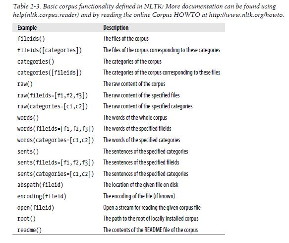
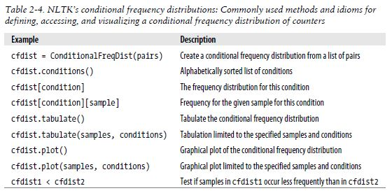

즉 파이썬으로 어떻게 효율적으로 corpus랑 lexical Resources들을 다룰지에 대한 내용!!
이전 장에서는 from book import * 을 통해서 corpus를 불러왔지만
이번장에서는 각각 corpus들에 개별 접근할 것이다.

25,000 개의 전자책들을 모아놓은 Coupus
import nltk
#nltk.download()
showing info https://raw.githubusercontent.com/nltk/nltk_data/gh-pages/index.xml
True
nltk.download('gutenberg')
[nltk_data] Error loading gutenberg: <urlopen error [Errno 11004] [nltk_data] getaddrinfo failed>
False
nltk.corpus.gutenberg.fileids()
['austen-emma.txt', 'austen-persuasion.txt', 'austen-sense.txt', 'bible-kjv.txt', 'blake-poems.txt', 'bryant-stories.txt', 'burgess-busterbrown.txt', 'carroll-alice.txt', 'chesterton-ball.txt', 'chesterton-brown.txt', 'chesterton-thursday.txt', 'edgeworth-parents.txt', 'melville-moby_dick.txt', 'milton-paradise.txt', 'shakespeare-caesar.txt', 'shakespeare-hamlet.txt', 'shakespeare-macbeth.txt', 'whitman-leaves.txt']
emma = nltk.corpus.gutenberg.words('austen-emma.txt')
len(emma)
192427
import nltk
from nltk.corpus import gutenberg
gutenberg.fileids()
emma = gutenberg.words('austen-emma.txt')
C:\Anaconda3\lib\site-packages\sklearn\utils\fixes.py:64: DeprecationWarning: inspect.getargspec() is deprecated, use inspect.signature() instead if 'order' in inspect.getargspec(np.copy)[0]:
for fileid in gutenberg.fileids():
num_chars = len(gutenberg.raw(fileid))
num_words = len(gutenberg.words(fileid))
num_sents = len(gutenberg.sents(fileid))
num_vocab = len(set([w.lower() for w in gutenberg.words(fileid)]))
print (float(num_chars/num_words), int(num_words/num_sents), int(num_words/num_vocab),fileid)
4.609909212324673 24 26 austen-emma.txt 4.749793727271801 26 16 austen-persuasion.txt 4.753785952421314 28 22 austen-sense.txt 4.286881563819072 33 79 bible-kjv.txt 4.567033756284415 19 5 blake-poems.txt 4.489300433741879 19 14 bryant-stories.txt 4.464641670621737 17 12 burgess-busterbrown.txt 4.233216065669891 20 12 carroll-alice.txt 4.716173862839705 20 11 chesterton-ball.txt 4.724783007796614 22 11 chesterton-brown.txt 4.63099417739442 18 10 chesterton-thursday.txt 4.4391184023772565 20 24 edgeworth-parents.txt 4.76571875515204 25 15 melville-moby_dick.txt 4.835734572682675 52 10 milton-paradise.txt 4.347539968257655 11 8 shakespeare-caesar.txt 4.3597698072805136 12 7 shakespeare-hamlet.txt 4.336689714779602 12 6 shakespeare-macbeth.txt 4.591950052620365 36 12 whitman-leaves.txt
macbeth_sentences = gutenberg.sents('shakespeare-macbeth.txt')
macbeth_sentences
[['[', 'The', 'Tragedie', 'of', 'Macbeth', 'by', 'William', 'Shakespeare', '1603', ']'], ['Actus', 'Primus', '.'], ...]
macbeth_sentences[1037]
['Good', 'night', ',', 'and', 'better', 'health', 'Attend', 'his', 'Maiesty']
longest_len = max([len(s) for s in macbeth_sentences])
[s for s in macbeth_sentences if len(s) == longest_len][:1]
[['Doubtfull',
'it',
'stood',
',',
'As',
'two',
'spent',
'Swimmers',
',',
'that',
'doe',
'cling',
'together',
',',
'And',
'choake',
'their',
'Art',
':',
'The',
'mercilesse',
'Macdonwald',
'(',
'Worthie',
'to',
'be',
'a',
'Rebell',
',',
'for',
'to',
'that',
'The',
'multiplying',
'Villanies',
'of',
'Nature',
'Doe',
'swarme',
'vpon',
'him',
')',
'from',
'the',
'Westerne',
'Isles',
'Of',
'Kernes',
'and',
'Gallowgrosses',
'is',
'supply',
"'",
'd',
',',
'And',
'Fortune',
'on',
'his',
'damned',
'Quarry',
'smiling',
',',
'Shew',
"'",
'd',
'like',
'a',
'Rebells',
'Whore',
':',
'but',
'all',
"'",
's',
'too',
'weake',
':',
'For',
'braue',
'Macbeth',
'(',
'well',
'hee',
'deserues',
'that',
'Name',
')',
'Disdayning',
'Fortune',
',',
'with',
'his',
'brandisht',
'Steele',
',',
'Which',
'smoak',
"'",
'd',
'with',
'bloody',
'execution',
'(',
'Like',
'Valours',
'Minion',
')',
'caru',
"'",
'd',
'out',
'his',
'passage',
',',
'Till',
'hee',
'fac',
"'",
'd',
'the',
'Slaue',
':',
'Which',
'neu',
"'",
'r',
'shooke',
'hands',
',',
'nor',
'bad',
'farwell',
'to',
'him',
',',
'Till',
'he',
'vnseam',
"'",
'd',
'him',
'from',
'the',
'Naue',
'toth',
"'",
'Chops',
',',
'And',
'fix',
"'",
'd',
'his',
'Head',
'vpon',
'our',
'Battlements']]
gutenberg.raw('shakespeare-macbeth.txt')[:2000]
"[The Tragedie of Macbeth by William Shakespeare 1603]\n\n\nActus Primus. Scoena Prima.\n\nThunder and Lightning. Enter three Witches.\n\n 1. When shall we three meet againe?\nIn Thunder, Lightning, or in Raine?\n 2. When the Hurley-burley's done,\nWhen the Battaile's lost, and wonne\n\n 3. That will be ere the set of Sunne\n\n 1. Where the place?\n 2. Vpon the Heath\n\n 3. There to meet with Macbeth\n\n 1. I come, Gray-Malkin\n\n All. Padock calls anon: faire is foule, and foule is faire,\nHouer through the fogge and filthie ayre.\n\nExeunt.\n\n\nScena Secunda.\n\nAlarum within. Enter King Malcome, Donalbaine, Lenox, with\nattendants,\nmeeting a bleeding Captaine.\n\n King. What bloody man is that? he can report,\nAs seemeth by his plight, of the Reuolt\nThe newest state\n\n Mal. This is the Serieant,\nWho like a good and hardie Souldier fought\n'Gainst my Captiuitie: Haile braue friend;\nSay to the King, the knowledge of the Broyle,\nAs thou didst leaue it\n\n Cap. Doubtfull it stood,\nAs two spent Swimmers, that doe cling together,\nAnd choake their Art: The mercilesse Macdonwald\n(Worthie to be a Rebell, for to that\nThe multiplying Villanies of Nature\nDoe swarme vpon him) from the Westerne Isles\nOf Kernes and Gallowgrosses is supply'd,\nAnd Fortune on his damned Quarry smiling,\nShew'd like a Rebells Whore: but all's too weake:\nFor braue Macbeth (well hee deserues that Name)\nDisdayning Fortune, with his brandisht Steele,\nWhich smoak'd with bloody execution\n(Like Valours Minion) caru'd out his passage,\nTill hee fac'd the Slaue:\nWhich neu'r shooke hands, nor bad farwell to him,\nTill he vnseam'd him from the Naue toth' Chops,\nAnd fix'd his Head vpon our Battlements\n\n King. O valiant Cousin, worthy Gentleman\n\n Cap. As whence the Sunne 'gins his reflection,\nShipwracking Stormes, and direfull Thunders:\nSo from that Spring, whence comfort seem'd to come,\nDiscomfort swells: Marke King of Scotland, marke,\nNo sooner Iustice had, with Valour arm'd,\nCompell'd these skipping Kernes to trust their heel"
text = ['The', 'Fulton', 'County', 'Grand', 'Jury', 'said', ...]
pairs = [('news', 'The'), ('news', 'Fulton'), ('news', 'County'), ...]
장르별로 단어의 출현 빈도를 살펴볼 수 있다.
이전에 봤던 FreqDist() 라는 함수와 비슷하게
ConditionalFreqDist() 라는 함수를 제공하는데 이때 위와 같은 pairs한 리스트를 인풋으로 취한다

nltk.download('brown')
from nltk.corpus import brown
brown.categories()
['adventure', 'belles_lettres', 'editorial', 'fiction', 'government', 'hobbies', 'humor', 'learned', 'lore', 'mystery', 'news', 'religion', 'reviews', 'romance', 'science_fiction']
?nltk.ConditionalFreqDist
Object `nltk.ConditionalFreqDist` not found.
from nltk.corpus import brown
cfd = nltk.ConditionalFreqDist(
(genre, word)
for genre in brown.categories()
for word in brown.words(categories=genre))
cfd
defaultdict(nltk.probability.FreqDist,
{'adventure': Counter({'whipsawed': 1,
'privately': 1,
"semester's": 1,
'mass': 5,
'numbingly': 1,
'escorted': 1,
'professionals': 1,
'situated': 1,
'gunfire': 2,
'ready': 14,
'tired': 4,
'Harnessing': 1,
'cleanups': 1,
'stocky': 1,
'Meaning': 1,
'unafraid': 2,
'lurched': 3,
'weapons': 2,
"snail's": 1,
'procedure': 1,
'warehouses': 3,
'galley': 2,
'Nor': 2,
'Ponkob': 1,
'replaced': 2,
'harbored': 2,
'sleeve': 6,
'conceding': 1,
"Ben's": 1,
'advertise': 1,
'beetling': 2,
'thank': 4,
'fearfully': 2,
'cockpit': 2,
'party': 6,
'pillar': 2,
'hairs': 3,
'shrugged': 2,
'pallet': 1,
'Facing': 1,
'proceeded': 2,
'speculations': 1,
'vocabulary': 2,
'coupe': 1,
'Count': 1,
'stilts': 1,
'charming': 1,
'earthquake': 1,
'fangs': 1,
"Grafin's": 1,
'trumpet': 1,
'Spanish': 5,
'elk': 1,
'break-away': 1,
'chaos': 1,
'conceived': 1,
'chance': 20,
'swimsuit': 1,
'stepped': 11,
'proprietory': 1,
'servants': 1,
'dare': 2,
'anxiously': 1,
'nation': 1,
'loosened': 1,
'warmth': 6,
'ankle': 2,
'dwell': 2,
'gallery': 1,
'jerky': 1,
'destitute': 1,
'trade': 5,
'smoky': 1,
'us': 47,
'haggardly': 1,
'whirring': 1,
'flash': 4,
'flashlight': 1,
'virtue': 1,
'top': 15,
'air': 23,
'desks': 3,
'Toward': 1,
"sun's": 1,
'mate': 1,
'nothin': 2,
'Would': 3,
'lamplight': 1,
'blinded': 2,
'flintless': 1,
'meld': 1,
'cloth': 1,
'decided': 7,
'tension': 1,
'smoking': 2,
'Mine': 1,
'bitch': 4,
'search': 5,
'And': 84,
'moved': 29,
'bubbled': 1,
'tug': 1,
'child': 12,
'O.K.': 4,
'padlock': 1,
'achievements': 1,
'unarmed': 1,
'tears': 5,
'figure': 14,
'you': 362,
'jointly': 1,
'real': 7,
'loot': 1,
'mound': 1,
'Apprehensively': 1,
'likely': 1,
'rumbled': 2,
'Cheyennes': 2,
'tumbled': 5,
'cotton': 1,
'confronted': 3,
'outdrew': 1,
'Scottish': 1,
'stands': 2,
'sons': 1,
'shadow': 5,
"sun'll": 1,
'stopped': 17,
'harsh': 2,
'ways': 3,
'gold': 7,
'solemn': 1,
'For': 27,
'easily': 3,
'scrutinized': 1,
'hears': 1,
'repaired': 1,
'bodied': 1,
'tensile': 1,
'hotels': 2,
'fingers': 12,
'Culvers': 1,
"ain't": 20,
'suspected': 3,
'timid': 1,
'20-year-old': 1,
'ferocious': 1,
'denied': 1,
'recognition': 1,
'act': 7,
'silk': 2,
'sleeping': 5,
'altogether': 2,
'hot-honey': 1,
'methods': 3,
'Jerusalem': 1,
'raided': 1,
"Cobb's": 1,
'Vieux': 1,
'grated': 1,
'bounced': 3,
'educated': 1,
'other': 60,
'law-abiding': 1,
'orderly': 5,
"guard's": 3,
'grin': 3,
'hammered': 1,
'wade': 1,
'fling': 1,
'sell': 4,
'stormy': 1,
'indicated': 3,
'forearm': 1,
'report': 2,
'returning': 1,
'looking': 19,
'rendezvous': 2,
'disintegrate': 1,
'screened': 1,
'hunkered': 2,
'million': 4,
'Friend': 1,
'warm': 9,
'spray': 2,
'advice': 6,
'apparent': 2,
'stirring': 1,
'canvas': 2,
'stretching': 1,
'virtually': 3,
'straddling': 1,
'sprung': 1,
'coal': 1,
'maternal': 1,
'employed': 1,
'bull-like': 1,
'flesh': 9,
'bellowed': 2,
'patches': 2,
'drunk': 3,
'Keith': 20,
'wandered': 2,
'abandon': 1,
'fancy': 1,
'staying': 1,
'blurry': 1,
'sweltering': 1,
'Sahjunt': 1,
'wholly': 1,
'zing': 6,
'Using': 1,
"Britain's": 1,
'lords': 1,
'lecture': 1,
'walked': 28,
'violent': 3,
'daylights': 1,
'Oh': 17,
'ridden': 2,
'Greenwich': 1,
'solace': 1,
'agree': 3,
'carrier': 1,
'roar': 7,
'rolling': 3,
'Taos': 1,
'letting': 3,
"guests'": 1,
'May': 2,
'depriving': 1,
'son': 13,
'quivering': 4,
"dollars'": 1,
'wheeling': 1,
'Mandhata': 1,
'Captain': 2,
'gyration': 1,
'Commodore': 3,
'reason': 7,
'git': 1,
'five-and-dime': 1,
'smoke': 8,
'foreign': 1,
'village': 4,
'hoot': 1,
'U.S.': 1,
'has': 15,
'drier': 1,
'Cromwell': 1,
'meat': 2,
'derisively': 1,
"owner's": 1,
'Sharon': 2,
'industrial': 2,
'where': 53,
'written': 1,
'mess': 3,
'Natrona': 1,
'heavens': 1,
'toe': 1,
'tower': 3,
'leering': 2,
'brief': 3,
'Co-cola': 1,
'Whah': 1,
'Time': 2,
'Manu': 5,
'Harper': 2,
'shove': 1,
'pursuing': 1,
'university': 1,
'sponsored': 1,
'streaks': 3,
'released': 4,
'understood': 1,
'match-width': 1,
'licked': 2,
'expectantly': 1,
'full-time': 1,
'insult': 1,
'pompous': 2,
'firmness': 1,
'alerting': 1,
'applying': 3,
'special': 1,
'prevent': 1,
'instructions': 1,
'nineteenth': 1,
'frequently': 2,
'destination': 2,
'Gloom': 1,
'bosses': 1,
'view': 6,
'buffalo': 3,
'bags': 4,
'Whatever': 4,
'Meredith': 10,
'city': 5,
'--': 213,
'glances': 1,
'coyote': 1,
'operation': 1,
'Rather': 1,
'cloudburst': 1,
'mock': 1,
'beckoned': 1,
'terminals': 1,
'sheep': 1,
'Water': 1,
'roulette': 1,
'disappeared': 1,
'straw': 2,
"You'll": 5,
'detective': 1,
'whoop': 1,
'rare': 2,
'pay': 3,
'local': 1,
'coherent': 1,
'cloud': 2,
'submerged': 1,
'while': 45,
'reentered': 1,
'pots': 1,
'scared': 2,
'obeyed': 1,
'grabbed': 10,
'uncommon': 1,
'jaw': 2,
'noisy': 1,
'dedication': 1,
'downfall': 1,
'death': 20,
'finger': 4,
'quivers': 1,
'convicts': 1,
'brandishing': 1,
'burns': 1,
'(': 22,
'ocarina': 1,
'Complying': 1,
'prosperous': 1,
'likelihood': 1,
'feminist': 1,
'dog': 2,
'nail': 1,
'Eight': 1,
"horses'": 1,
'baked': 2,
'cheeks': 6,
'choked': 3,
'rig': 1,
'carrying': 4,
'solid': 6,
'sympathy': 2,
'caused': 2,
'Corps': 2,
'uh': 2,
'leafy': 1,
'Powell': 6,
'pension': 2,
'hiding': 4,
'Pierre': 1,
'shattering': 4,
'fouled': 1,
'revealed': 2,
'brushcut': 1,
'bouncing': 1,
'Really': 1,
'hats': 2,
'Lever': 1,
'tickled': 2,
'contours': 1,
'threads': 2,
'shout': 1,
'poppyseed': 1,
'Rest': 1,
"more'n": 1,
'brim': 1,
'briskly': 1,
"lad's": 1,
'depends': 2,
'bizarre': 1,
'nearer': 3,
'handsomer': 1,
'steep': 3,
'Jury': 1,
'sympathetic': 1,
'parade': 3,
'shoe': 2,
'worry': 4,
'hanging': 5,
'rooster': 1,
'vanished': 4,
'gentleness': 1,
'Jackson': 5,
'gallows': 1,
'poet': 4,
'leaden': 2,
'silhouetted': 1,
'Reckon': 1,
'flawless': 1,
'sunk': 1,
'more': 83,
'vaguely': 3,
'trial': 1,
'untracked': 1,
'used': 12,
'plus': 1,
'base': 2,
'Philadelphia': 2,
'dragged': 4,
'given': 3,
'regardless': 2,
'driveway': 1,
'dates': 1,
"Moriarty's": 1,
"doin'": 1,
'retaliated': 1,
'mopped': 1,
'nodded': 15,
'Corporal': 2,
'cabana': 3,
'fists': 3,
'stringed': 1,
'our': 39,
'Conestoga': 2,
'shadowing': 1,
'vehicle': 1,
"probl'y": 1,
'thief': 3,
'wealthiest': 1,
'ownself': 1,
'broad-brimmed': 1,
'practitioners': 1,
'rigid': 1,
'muse': 1,
'impossible': 1,
'great': 18,
'horizontal': 1,
'Think': 1,
'Too': 6,
'ovals': 2,
'dedicated': 1,
'exploit': 1,
'whirling': 2,
'Looking': 2,
'stable': 4,
'gaunt': 2,
'Ruffians': 1,
'altruistically': 1,
'ape': 1,
'Vs.': 1,
'century': 4,
'sharp-limbed': 1,
"didn't": 70,
"victim's": 1,
'grains': 1,
'bass': 1,
'Real': 1,
'grappling': 1,
'personage': 1,
'Conchita': 5,
'permission': 2,
'washing': 1,
'dust-thick': 1,
'kazoo': 1,
'jetting': 1,
'pressure': 6,
'clouds': 11,
'Ben': 4,
'interminable': 1,
'Early': 2,
'too': 64,
'surely': 3,
'songs': 1,
'driftin': 1,
'stomach': 9,
'brought': 28,
'Keep': 2,
"road's": 1,
'storm': 5,
'rivulets': 1,
'Run': 1,
'Never': 4,
"dry-gulchin'": 1,
'hide': 3,
'springs': 1,
'Cabot': 1,
'firelight': 1,
'exerted': 1,
'into': 180,
'abreast': 1,
'pistols': 2,
'bank': 5,
'earnest': 2,
'yelled': 13,
'fallen': 3,
'rules': 1,
"Brenner's": 3,
'vying': 1,
'gag': 1,
'advising': 1,
'record': 6,
'tracks': 2,
'herd': 5,
'blocking': 1,
'up': 226,
'knife': 11,
'poster': 1,
'quaint': 1,
'framed': 2,
'Stetson': 1,
'Robert': 2,
'announce': 1,
'yucca': 1,
'inviolate': 1,
'Bayou': 2,
'perceived': 2,
'expectation': 2,
'penetrating': 1,
"Lalaurie's": 1,
'poets': 2,
'park': 2,
'sights': 4,
'singed': 1,
'tornadoes': 1,
'marked': 3,
'forthcoming': 1,
'mining': 4,
'sick': 7,
'Gaston': 1,
'billions': 1,
'arm': 23,
'realized': 7,
'take-off': 1,
'shrubbery-lined': 1,
'caressed': 2,
'figger': 2,
'deadline': 1,
'plains': 1,
'subsided': 2,
'expressionless': 2,
'overboard': 1,
'ring': 2,
'oui': 1,
'Alexander': 2,
'five': 13,
'Benson': 14,
'stacked': 1,
'letter': 5,
'gob': 1,
'squirmed': 1,
'ahead': 11,
'collar': 3,
'identified': 2,
'victuals': 1,
'side': 52,
'appeared': 13,
'crash': 2,
'gear': 1,
'Fifty': 1,
'afternoons': 3,
'lobby': 1,
'unable': 2,
'dactyls': 1,
'listening': 2,
'ammunition': 5,
'Drunk': 1,
'Manuel': 3,
'Afrika': 1,
'glimmer': 1,
'anachronisms': 1,
'plain-clothesmen': 2,
'stalked': 2,
'scheduled': 1,
'Getting': 1,
'raising': 1,
'starved': 2,
'tape': 1,
'reins': 5,
'slave': 11,
'carefully': 8,
'looks': 5,
'soak': 2,
'Texas': 1,
'cost': 2,
'firing': 3,
'Johnson': 13,
'Walter': 7,
'frizzling': 1,
'climbing': 2,
'sparring': 1,
'scarcely': 4,
'intersecting': 1,
'mah': 2,
'description': 1,
'processing': 1,
'80': 1,
'permit': 5,
'gate': 6,
'skin': 9,
'Association': 1,
'beating': 2,
'bell': 3,
'bone-weary': 1,
'itches': 1,
'painting': 1,
'engraving': 1,
'Command': 5,
'roundhouse': 1,
'Dutch': 4,
'talks': 2,
'accomplishments': 1,
'Taking': 1,
'breathless': 1,
'swaggered': 1,
'snarled': 2,
'bark': 2,
'south': 8,
'intersection': 1,
'volley': 2,
'rockstrewn': 1,
'up-jutting': 1,
'perfumed': 1,
'swarthy': 3,
'passiveness': 1,
'parts': 1,
'they': 206,
'scouts': 1,
'banged': 1,
'handkerchief': 4,
'leap': 1,
'dogs': 3,
'quarter-mile': 1,
'guest': 1,
'faro': 3,
'Mitchell': 3,
'Shu-tt': 1,
'Aaron': 2,
'town': 28,
'superb': 1,
'cemented': 1,
'investigation': 1,
'parties': 2,
'evidently': 2,
"Rhea's": 1,
'Monday': 1,
'virtuous': 1,
'securely': 1,
'enough': 35,
'Rose': 2,
'high': 19,
'Molten': 1,
'risks': 1,
'Barton': 25,
'trusted': 1,
'dragging': 4,
'tenderly': 1,
'terrorized': 1,
'role': 2,
'problems': 3,
'pole': 1,
'Splendide': 1,
'nursing': 2,
'him': 415,
'blonde': 9,
'Pull': 1,
'magazine': 1,
'Orleans': 3,
'Such': 4,
'usual': 5,
'noises': 1,
'well-molded': 1,
'Other': 1,
'battered': 3,
'unprotected': 1,
'hush': 1,
'scrub': 1,
'north': 8,
'rogues': 1,
'payment': 1,
'senora': 1,
'lay-offs': 1,
'Wet': 1,
'trembling': 4,
'voice': 42,
'relatives': 1,
'All': 24,
'supplicating': 1,
'absent-mindedly': 1,
'glide': 1,
'muddied': 1,
'problem': 4,
"wouldn't": 25,
'Florida': 5,
'Indian': 12,
'dining': 2,
'settler': 2,
'savages': 1,
'she': 240,
'muzzle': 3,
'suspiciously': 1,
"bird's": 1,
'driven': 5,
'snorted': 1,
"Don't": 14,
'associates': 1,
'address': 3,
'flared': 1,
'tremble': 1,
'gorge': 1,
'loop': 1,
'reawaken': 1,
'Onleh': 1,
'nester': 2,
'voyageurs': 1,
'reviving': 1,
'drudgery': 1,
'struggle': 5,
'haggle': 1,
'puffing': 1,
'treasures': 1,
'arrive': 1,
'patiently': 1,
'areas': 1,
'introduction': 1,
'ragged': 1,
'looked': 62,
'chattered': 1,
'lavender': 2,
'Whaddya': 1,
'hatch': 1,
'account': 3,
'punishment': 1,
'window': 17,
'part-time': 2,
'destroy': 3,
'scarcely-tapped': 1,
'another': 27,
'survey': 1,
'barricade': 1,
'Upper': 1,
'positive': 2,
'busted': 1,
'.': 4057,
'Gradually': 3,
'connections': 1,
'easing': 1,
'Tomas': 4,
'correct': 2,
'meaningful': 1,
'Ross': 4,
'practicing': 1,
'same': 18,
'lurch': 2,
'gauche': 1,
'material': 2,
'professional': 2,
'explosive': 2,
'chemically': 1,
'sucking': 1,
'notes': 6,
'potato': 1,
'Beth': 1,
'time-honored': 1,
'indifference': 1,
'crimes': 2,
'Professor': 2,
'Moreover': 2,
'ranks': 1,
'production': 1,
'supplies': 3,
'isle': 1,
'sweat': 7,
'basket': 1,
'being': 19,
'reassuringly': 1,
'pierced': 2,
'solicitude': 1,
'Beat': 1,
'longing': 1,
'Supper': 1,
'exalted': 1,
'this': 203,
'Fear-maddened': 1,
'Rising': 1,
'unlikely': 2,
'Convulsively': 1,
'shirtsleeve': 1,
'incredibly': 1,
'sound': 23,
'strongly': 2,
'quieted': 1,
'holstered': 3,
'Popping': 1,
"Feathertop's": 2,
'celebration': 2,
'Prime': 2,
'clash': 1,
'mental': 3,
'classroom': 1,
'leveled': 3,
'Store': 1,
"cap'n": 1,
'pores': 1,
'lost': 10,
'hell-raising': 1,
'limped': 1,
'collision': 1,
'masonry': 1,
'temper': 3,
'satisfaction': 2,
'resource': 1,
'honest': 3,
'1895': 2,
'corn': 2,
'steadiness': 1,
'similarity': 2,
'1951': 1,
'director': 5,
'equipped': 1,
'ridiculous': 2,
'thinking': 20,
'crap': 2,
'Come': 12,
'fond': 1,
'oversized': 1,
'brushing': 2,
'Albany': 1,
'Palasts': 1,
"men's": 2,
'thickly': 1,
'Bay': 1,
'determine': 2,
"Indian's": 5,
'brazier': 1,
'poised': 1,
'repelled': 1,
'stamina': 1,
'Emptied': 1,
'raised': 7,
'counted': 1,
'kiss': 5,
'thinkin': 1,
'tail': 2,
'physical': 7,
'mudwagon': 1,
'Above': 2,
'Wanna': 2,
'wing': 5,
'11:00': 1,
'ships': 3,
'Sierra': 1,
'Soak': 1,
'Veterinary': 1,
'females': 1,
'far-off': 1,
'want': 43,
'sex': 3,
'dulled': 1,
'glaciers': 1,
'old': 38,
'horsehair': 1,
'Permian': 1,
'recommending': 1,
'severed': 1,
'plunge': 1,
'axle': 1,
'Wait': 4,
'Jack': 23,
'awry': 1,
'Atlantis': 1,
'office': 16,
'various': 1,
'curb': 1,
'stifled': 1,
'addition': 3,
'fly': 2,
'growth': 1,
'plants': 1,
'start': 6,
'issue': 1,
'puzzlement': 1,
'nobody': 3,
'arms': 17,
'dodge': 1,
'Greg': 25,
'self-confidence': 1,
'oxen': 8,
'always': 21,
'offsaddled': 1,
'raw': 3,
'endorsed': 1,
'systems': 1,
'headed': 12,
'pumped': 1,
'near-at-hand': 1,
'Drifting': 1,
'chick': 2,
'scooted': 2,
'accomplish': 1,
'Shaffner': 1,
'roof': 3,
'Guam': 1,
'posted': 2,
'murderer': 1,
'prevented': 2,
'syndicate': 1,
'certainly': 4,
'the': 3370,
'revulsion': 1,
'original': 2,
'avidity': 1,
'element': 1,
'safe': 2,
'opposing': 1,
'footsteps': 1,
'grudge': 2,
'mistake': 5,
'identifiable': 1,
'flng': 1,
'petty': 1,
'exploding': 1,
'flicked': 3,
'appreciated': 1,
'louse': 1,
'managed': 3,
'minor': 2,
'rodeo': 1,
'closer': 9,
'paid': 4,
'concerning': 2,
'cane': 1,
'murmur': 2,
'embraced': 1,
'turns': 2,
'high-speed': 1,
'Haitian': 1,
'Mister': 1,
'Piwen': 1,
'every': 20,
'lie': 2,
'tilted': 2,
'deluge': 1,
'trifle': 1,
'spark': 1,
'Zero': 1,
'dumped': 3,
'rapid': 2,
'shuddering': 1,
'eased': 1,
'unshed': 1,
'Ed': 6,
'contacts': 1,
'haste': 1,
'twittering': 1,
'bandage': 1,
'Tee-wah': 2,
'tells': 2,
'unsurmountable': 1,
"He's": 15,
'sensuality': 1,
'slivery': 1,
'badly': 5,
'swaying': 1,
'Mitch': 2,
'unguided': 1,
'below': 8,
'deep': 14,
'chilling': 1,
'Mountain': 1,
'seventh': 1,
'engulfed': 2,
'Follow': 1,
'7:30': 1,
'slings': 1,
'wonderful': 2,
'Wilson': 17,
"well's": 1,
'shrilling': 1,
'chrome': 3,
'shine': 2,
'Turner': 1,
'master': 1,
'magnificent': 1,
'War': 3,
'Gardens': 4,
'shining': 3,
'stayed': 8,
'giggle': 1,
'round': 7,
'trappings': 1,
'people': 24,
'unleashed': 1,
'becoming': 2,
'yell': 1,
'doing': 18,
'translate': 1,
...}),
'belles_lettres': Counter({'privately': 2,
'wired': 3,
'Concert': 1,
'misplacing': 1,
'jazzy': 1,
'escorted': 1,
'contradictions': 4,
'Knife-grinder': 1,
'madman': 2,
'situated': 3,
'Program': 1,
'henceforth': 2,
'Helion': 18,
'chants': 1,
'repels': 1,
'problematic': 1,
'Sara': 4,
'entertainments': 1,
'capitalism': 4,
'Patterson': 1,
'Occident': 2,
'ardor': 2,
'Spark': 1,
'xenophobia': 1,
'procedure': 4,
'initiates': 1,
'Nor': 4,
'replaced': 5,
'mass': 9,
'industrialism': 1,
'orgies': 1,
'conceding': 1,
'experts': 8,
'Jeremiah': 1,
'molded': 2,
'Unless': 2,
'thank': 3,
'party': 40,
'sadistic': 1,
'nobility': 2,
'historical': 30,
'Circumstances': 1,
'Prence': 1,
'Steffens': 1,
'childhood': 15,
'authoritarian': 2,
'reflections': 2,
'Lippman': 1,
'richness': 2,
"I'm": 9,
'puddle': 1,
'trumpet': 3,
'1849': 2,
'tempting': 2,
'singling': 1,
'differentiated': 1,
'marking': 3,
'stress': 6,
'comfortably': 3,
'long-established': 1,
'unpleasant': 5,
'Hungarian': 3,
'nominee': 1,
'severely': 2,
'infrequently': 1,
'us': 167,
'sweep': 3,
'Tempter': 1,
'terram': 1,
"boys'": 1,
'Elman': 1,
"sun's": 1,
'jolly': 2,
'behave': 4,
'passport': 1,
'viewed': 3,
'nightingale': 1,
'mate': 2,
'indefensible': 1,
'formulate': 4,
'satisfying': 2,
'Oczakov': 2,
'smoking': 1,
'hytt': 1,
'frustrated': 5,
'over-all': 1,
'Andrew': 5,
'ironic': 4,
'mouthed': 1,
'Das': 1,
'crass': 1,
'self-correcting': 1,
'scourge': 1,
'Bad': 1,
'achievements': 6,
'Soconoco': 1,
'tired': 5,
'name-dropper': 1,
'chaotic': 3,
'incepting': 3,
'disorders': 2,
'pre-emption': 1,
'Medea': 1,
'middle-class': 2,
'associations': 6,
'battleground': 1,
'Suite': 5,
'man-made': 1,
'adolescents': 1,
'stands': 11,
'sons': 1,
'Sut': 1,
'shadow': 2,
'Bertha': 3,
'stopped': 16,
'harsh': 2,
'Garrick': 1,
'gold': 11,
'exploits': 1,
'dwindle': 1,
'Caucasus': 1,
'scoundrels': 1,
'enroll': 1,
'affinity': 2,
'eras': 2,
"Beckett's": 4,
'critical-intellectual': 1,
"fiction-writer's": 1,
'categorical': 3,
'rainstorm': 1,
"ain't": 1,
'sockets': 1,
'deloused': 1,
'vivify': 1,
'sensibilities': 4,
'figuring': 1,
'savage': 3,
'inception': 2,
'act': 26,
'greenness': 1,
'Job': 2,
'tenuous': 3,
'alphabet': 2,
'methods': 15,
'emergence': 1,
'circuitous': 1,
'trances': 1,
'knights': 3,
'contracts': 1,
'encroached': 1,
'roots': 5,
'bounced': 1,
'prospects': 1,
'other': 262,
'orderly': 1,
'routings': 1,
'Planeten': 1,
'chooses': 1,
'Tarkington': 1,
'lightened': 2,
'Tiveden': 1,
'Franco-Irishman': 1,
'ethic': 3,
'report': 29,
'avalanche': 1,
'returning': 9,
'successors': 3,
'Poirot': 2,
'Friend': 3,
'warm': 5,
'supposed': 14,
'assemblage': 1,
'Uh': 1,
'abstractions': 5,
'core': 4,
'suzerainty': 1,
'stirring': 2,
'revel': 1,
'canvas': 2,
'stretching': 1,
'Sales': 1,
'oriented': 1,
'sprung': 1,
'Ditch': 1,
'employed': 9,
'commission': 4,
'Scotchman': 1,
'fancy': 2,
'inhumane': 1,
'converge': 3,
'Wars': 1,
'Kajar': 1,
"Darwin's": 1,
'Lausanne': 1,
'seditious': 1,
'pervading': 1,
'client': 3,
"Britain's": 1,
'considerably': 6,
'unluckily': 1,
'organisms': 1,
'lecture': 1,
'follies': 1,
'walked': 15,
'violent': 7,
'Gortonists': 2,
'smart': 3,
'innocently': 1,
'paradigmatic': 1,
'agree': 12,
'stereotypes': 2,
'choicest': 1,
'1859': 1,
'arc': 1,
'Power': 3,
'prey': 1,
"state's": 1,
'multi-millionaire': 1,
'lawsuit': 1,
'83': 1,
'unceasingly': 1,
'pasture': 1,
'rounding': 1,
'son': 28,
'Dust': 1,
'subordinate': 2,
'Othon': 9,
'entirety': 1,
'Bourbon': 2,
'source': 15,
'complimentary': 1,
'dissolution': 1,
'mortality': 1,
'producers': 1,
'rhythm': 5,
'Relieved': 1,
'implies': 6,
'marrying': 1,
'sand': 2,
'combat': 7,
'novo': 1,
'smoke': 3,
'condemnation': 1,
'retreating': 1,
'impassioned': 4,
'U.S.': 4,
'has': 402,
'meat': 2,
'Paestum': 1,
"Potemkin's": 3,
'brutality': 2,
'listeners': 3,
'pompons': 1,
'manipulations': 2,
'brood': 1,
'Rollins': 1,
'Save': 1,
'conflicts': 4,
'industrial': 16,
'Bing': 1,
'carries': 3,
'where': 107,
'Ideas': 4,
'items': 1,
'libertarian': 1,
'Court': 10,
'gay': 5,
'resolutions': 1,
'discovers': 1,
'Metamorphose': 1,
'revered': 1,
'nectar': 1,
'traced': 5,
'brief': 9,
'vivacious': 1,
'disoriented': 1,
'draftees': 1,
'dispel': 1,
'narrows': 1,
'lutihaw': 1,
'Arkansas': 6,
'burden': 7,
'place-name': 6,
'wrought': 1,
'2,800,000': 1,
'Experience': 1,
'fittest': 1,
'released': 2,
'baptistery': 1,
'understood': 17,
'licked': 1,
'Danube': 1,
'vitally': 1,
'romantick': 1,
'legacies': 1,
'animosity': 1,
'special': 40,
'royal': 7,
'cito': 1,
'destination': 1,
'movies': 2,
'neighbor': 3,
'view': 34,
'adventures': 2,
'Stops': 1,
'saved': 6,
'Baer': 5,
'Whatever': 6,
'Meredith': 2,
'--': 455,
'coworkers': 1,
'monkey': 1,
'tossed': 2,
'implicit': 7,
'cloudburst': 1,
'monitored': 1,
'graybeard': 1,
"Jack's": 1,
'immortalized': 1,
'Water': 1,
'sovereignty': 20,
'disappeared': 9,
"You'll": 2,
'moderator': 1,
'quarreling': 1,
'sketching': 1,
'long-range': 6,
'skirmishers': 1,
'Dred': 1,
'full-fledged': 1,
'styled': 2,
'films': 2,
'twelve': 8,
'cloud': 2,
"lady's": 1,
'Historically': 1,
'pots': 1,
'Scandinavian': 1,
'reassembled': 1,
'Harvard': 12,
'uncommon': 1,
'expressions': 5,
'noisy': 2,
'Precisely': 1,
'formally': 2,
'obtain': 3,
'cash': 2,
'downfall': 1,
'finger': 3,
'emigrated': 1,
'actor': 4,
'Under': 8,
"Tolstoy's": 1,
'sixth': 1,
"Malraux's": 8,
'(': 249,
'prosperous': 5,
'chagrin': 1,
'extenuating': 1,
'overemphasis': 1,
"horses'": 1,
'Room': 4,
'choked': 1,
'sea-food': 1,
'toughness': 1,
'confiscating': 1,
'climaxed': 1,
'corrupt': 4,
'solid': 3,
'sympathy': 7,
'Building': 3,
'life-death': 1,
'falsity': 3,
'sits': 1,
'socal': 1,
'disregard': 2,
'1934': 1,
'epoch': 3,
'misfortune': 3,
'tolerable': 1,
'experimented': 3,
'prettily': 1,
'hedges': 1,
'comparatively': 3,
'dilemma': 8,
'renewal': 3,
'Critical': 1,
'corresponds': 1,
'worsted': 1,
'repeating': 1,
'1902': 3,
'pleasance': 1,
'Curtin': 1,
'parade': 4,
'Sherman': 18,
'Aylesbury': 2,
'Collins': 1,
'worry': 5,
'Force': 4,
'vanished': 1,
'big': 18,
'chemistry': 4,
'chaos': 9,
'Committee': 17,
'Il': 2,
'apt': 4,
'1904': 1,
'poet': 26,
'convicted': 1,
'regime': 2,
'Irish': 8,
'converted': 2,
'liquidation': 2,
'more': 368,
'raise': 5,
'platitudinous': 1,
'bushel': 1,
'irresistible': 4,
'patriotic': 4,
'Oresme': 1,
'limitations': 2,
'used': 49,
'salvo': 1,
'plus': 4,
'Piano': 3,
'individual': 49,
'1597/8': 1,
'materials': 12,
'1628': 1,
'Philadelphia': 14,
'dollar': 2,
'ballistic': 2,
'dates': 3,
'Founders': 3,
'soldiers': 14,
'Sawnders': 1,
'sincere': 1,
'infinity': 1,
'fortitude': 1,
'cultures': 5,
'our': 281,
'Called': 1,
"poet's": 4,
'Yankeefication': 2,
'fitting': 2,
'shadowing': 1,
'adore': 2,
'se': 2,
'prouder': 1,
'fourteen': 6,
'thermonuclear': 2,
'seep': 1,
'Anger': 1,
'refreshed': 2,
'museum': 4,
'paws': 1,
'reception': 4,
'emphasis': 9,
'rigid': 5,
'instituting': 1,
'vindicate': 1,
'impossible': 16,
'perverse': 2,
'Social': 5,
'Think': 1,
'Bagh': 1,
'Woodrow': 2,
'virtues': 5,
'dedicated': 7,
'derangement': 1,
'militantly': 1,
'asserts': 2,
'Government': 8,
'retreats': 1,
'Caruso': 1,
'stupidity': 3,
'forerunners': 1,
'front-back': 1,
'Officers': 1,
'prodded': 1,
'Sinner': 3,
'century': 65,
'Claude': 2,
'Lilian': 7,
'musicianship': 1,
'districts': 1,
'engagements': 4,
'Bauer': 1,
'permission': 13,
"pastor's": 1,
'vacation': 1,
'Nietzsche': 2,
'clouds': 2,
'pleasures': 1,
'daunted': 1,
'dreaded': 1,
'inaugural': 2,
'too': 114,
'surely': 10,
'songs': 22,
'admirably': 2,
'Common': 1,
'Coal': 1,
"sachems'": 1,
'storm': 2,
'Bohemian': 1,
'Current': 1,
'adopting': 1,
'irresolute': 1,
'individually': 4,
'cardinals': 1,
'observes': 5,
'alternation': 1,
'Englander': 3,
'conceive': 5,
'possessions': 3,
'ipso': 1,
'bases': 3,
'Alternate': 1,
'Freudian': 1,
'countrymen': 2,
'ledger': 1,
'dystopian': 7,
'substantive': 1,
'purchasing': 1,
'relishing': 1,
'progressive': 2,
'valuation': 1,
'Seventh': 3,
'Conversely': 1,
'Hindu': 1,
'energetic': 4,
'soyaburgers': 1,
'persuasively': 1,
'prevailing': 5,
'blindness': 3,
'vying': 1,
'advising': 1,
'Vol.': 2,
'tracks': 2,
'redemptive': 1,
'loathing': 1,
'Yiddish': 1,
'surveyed': 5,
'quaint': 2,
'permissible': 1,
'announce': 3,
'superseded': 2,
'grumble': 1,
'tries': 2,
'expectation': 1,
'Gorton': 32,
'poets': 21,
'park': 7,
'1850': 1,
'diddling': 1,
'demise': 1,
'defect': 1,
'frothy': 1,
'sick': 3,
'map': 3,
'realized': 9,
'music-hall': 1,
'jet': 3,
'Darwinism': 2,
'haunting': 1,
'courtship': 1,
'P.': 2,
'combines': 2,
'comprehensive': 1,
'overboard': 2,
'ring': 3,
'Alexander': 10,
'punished': 1,
'4,585': 1,
'social-political-economical': 1,
'soe': 1,
'Sohn': 1,
'contributed': 6,
'ahead': 6,
'ruffles': 1,
'rebel': 4,
'prize': 1,
'clergy': 8,
'approximate': 2,
'ashen': 1,
'splendidly': 1,
'season': 3,
'Piranesi': 1,
'diversion': 3,
'sung': 2,
'infection': 2,
'tithes': 1,
'Edwardes': 1,
'flirt': 1,
'1953': 6,
'moved': 31,
'Grev.': 1,
'maturity': 4,
'McGruder': 1,
'ammunition': 2,
'dictators': 1,
'Sundays': 1,
'Drunk': 1,
'malaise': 5,
'sharpness': 1,
'commandeered': 1,
'Tolerance': 1,
'external': 14,
'H.': 7,
'stimulated': 3,
'anachronisms': 1,
'gate-post': 1,
'characters': 17,
'sniff': 1,
'societal': 3,
'Liberalism': 1,
'Stevenson': 3,
'Humanity': 2,
'scouting': 1,
'clannish': 1,
'raising': 3,
'1908': 2,
'safeguard': 3,
'reins': 1,
'Backstairs': 1,
'empire': 4,
'visa': 3,
'innovation': 2,
'desirable': 5,
'cost': 5,
'H.L.': 1,
'slogans': 2,
'polar': 2,
'straggle': 1,
'Walter': 8,
'excesses': 2,
'brilliance': 2,
"Pohl's": 2,
'embodiment': 5,
'Bishop': 3,
'worship': 7,
'description': 8,
'thanked': 1,
'displacing': 1,
'gate': 10,
'skin': 9,
'planet': 2,
'thanking': 1,
'dream-ridden': 1,
'eloquently': 1,
'outcomes': 1,
'Command': 2,
'talks': 1,
'accomplishments': 2,
'rhythmic': 2,
'rose': 9,
'Viareggio': 1,
'centralizing': 1,
'$1,200': 1,
'perfumed': 1,
'gonne': 1,
'Materialism': 1,
'foolhardy': 2,
'swarthy': 1,
'1644': 1,
'stunning': 1,
'Bechhofer': 1,
'Low': 3,
'cowhide': 1,
'talismanic': 1,
'advancing': 1,
'peasants': 2,
'leap': 5,
'Eh': 1,
'city-dweller': 1,
'dogs': 14,
'utilize': 1,
'Circular': 1,
'Boulevard': 2,
'guest': 8,
'spider': 1,
'Passing': 1,
'pastoral': 1,
'cooperatives': 1,
'Aaron': 1,
'Rhu-beb-ni-ice': 1,
'town': 35,
"Newton's": 3,
'superb': 3,
'investigation': 4,
'nonsense': 2,
'endeavors': 1,
'Kamieniec': 2,
'earnestness': 1,
'Burger': 1,
'Champ': 1,
'enough': 59,
'disrupted': 1,
'third-': 1,
'auburn': 1,
'Arthur': 15,
'high': 57,
'lapped': 1,
'Lightfoot': 1,
'enmeshed': 1,
'president': 7,
'eine': 1,
'whyfores': 1,
'Station': 1,
'cornbread': 1,
'Tessie': 7,
'racial': 5,
'pole': 4,
'Victorians': 1,
'nursing': 1,
'Sleeper': 1,
'$20,000,000': 1,
'1,225': 1,
'smacks': 1,
'suggestion': 6,
'remolding': 1,
'nothingness': 2,
'rebuilding': 1,
'apocalypse': 1,
'labored': 3,
'encroaching': 1,
'Other': 5,
'disarming': 2,
'devote': 4,
'Lavoisier': 1,
'sublimate': 1,
'126,000': 1,
'deluding': 1,
'Conquest': 1,
'north': 7,
'adjustment': 7,
'payment': 4,
'poseurs': 1,
'trembling': 1,
'conducive': 1,
'focussed': 2,
'creations': 1,
'Phipps': 2,
'All': 36,
'1937': 2,
'Rebels': 4,
'unexplainable': 1,
'piercing': 1,
'steeped': 2,
'mentally': 3,
'deviation': 1,
'Chevalier': 1,
'1954': 10,
'beige': 1,
'she': 178,
'formalized': 2,
'Emancipation': 4,
"Spinley's": 1,
'common-sense': 1,
'associates': 4,
'impartial': 6,
'nine-thirty': 1,
'brick': 3,
'examinations': 2,
'solemn': 2,
'Calabria': 2,
'myths': 4,
'humanist': 1,
'fullness': 1,
'well-meaning': 1,
'Shah': 2,
"Caldwell's": 1,
'Occupational': 1,
'victories': 1,
'themes': 4,
'discourse': 3,
'diagrams': 1,
'Friends': 1,
'fifty-odd': 2,
'psychopomp': 1,
'thinkers': 3,
'article': 11,
'introduction': 5,
'ragged': 1,
'uphold': 2,
'Wakes': 1,
"Meynell's": 1,
'theater': 9,
'1890s': 1,
'topics': 3,
'shaven': 1,
'biologists': 2,
'sublime': 1,
'coquette': 2,
'destroy': 7,
'functional': 4,
'Orwell': 1,
'Halma': 1,
'positive': 15,
'Ptolemy': 8,
'last-minute': 1,
'Facetious': 1,
'Americans': 21,
'religious': 38,
'boastings': 1,
'hopeful': 1,
"l'Ange": 1,
'practicing': 2,
'same': 89,
'corrosive': 1,
'throat': 1,
'familistical': 1,
'material': 21,
'notes': 11,
'Liberty-and-Union': 2,
'youngish': 1,
'Persia': 4,
'Professor': 10,
'Poussins': 1,
'devices': 8,
'ranks': 4,
"writer's": 1,
'designated': 4,
'purge': 1,
'isle': 1,
'sweat': 4,
'basket': 2,
'sifted': 1,
'Manchester': 4,
'drops': 2,
'reluctance': 2,
'hoodlums': 1,
'Beat': 1,
'longing': 5,
'Nights': 1,
'secular': 6,
'fundamentally': 2,
'units': 4,
'beautifully': 2,
'flu': 2,
'built-in': 1,
'require': 8,
'stepson': 1,
'incredibly': 1,
'nineteenth-century': 5,
'sound': 17,
'eyeball': 1,
'leaf': 2,
'Orange': 1,
'celebration': 5,
'Prime': 1,
'Lap': 1,
'imcomplete': 1,
'wherewith': 1,
'directorship': 1,
'Cusa': 1,
'confining': 1,
'arched': 3,
'Sure': 1,
'showing': 10,
'prosper': 1,
'debilitated': 1,
'deacon': 1,
'ferret': 1,
'award': 3,
'satisfaction': 3,
'column-shaped': 1,
'subscribed': 1,
'sleeping': 4,
'to-day': 4,
'Presenting': 1,
'sanction': 4,
'similarity': 1,
'Earth': 1,
'equipped': 1,
'whodunnit': 1,
'ridiculous': 5,
'modernization': 2,
'fifth': 2,
'$1,500,000': 1,
'Austria': 2,
'Irrawaddy': 1,
'18': 1,
'Epicurus': 1,
'self': 14,
'machine': 2,
'diseases': 1,
'afflictions': 1,
'driver': 1,
'Come': 3,
'impetus': 2,
'narrative': 11,
'wont': 1,
'thatt': 1,
'deathward': 1,
'Fought': 1,
'Diodati': 1,
'Tranquility': 1,
'Bay': 6,
'determine': 10,
'substitution': 1,
'entails': 1,
'hauled': 1,
'aristocracy': 1,
'enterteyned': 1,
'passageway': 1,
'sabotage': 1,
'telephoned': 6,
'unanswered': 1,
'counted': 3,
'blades': 1,
'preaching': 1,
'substituted': 1,
'Pretender': 1,
'Hood': 1,
'exodus': 1,
'providence': 2,
'wing': 3,
'anger': 12,
"Court's": 1,
'sending': 9,
'tiredly': 1,
'scornful': 1,
'Nine': 1,
'sex': 32,
'empiricism': 2,
'epitaph': 1,
'old': 89,
'private': 67,
'constitutional': 7,
'stages': 2,
'caravans': 1,
'modest': 3,
'severed': 1,
'reproof': 1,
'untraditional': 1,
'invitation': 5,
'conjures': 1,
'shipped': 1,
'office': 31,
'stretches': 4,
'intolerance': 2,
'fly': 6,
'introduces': 1,
'tantamount': 2,
'plants': 1,
'scattered': 7,
'issue': 24,
'Utopian': 1,
'dodge': 1,
'petting': 1,
'technology': 18,
'Directors': 1,
'commons': 1,
'Lippmann': 1,
'sums': 3,
'$20,000': 1,
'Bryan': 4,
'reinforced': 1,
'usage': 2,
'ritual': 11,
'primarily': 8,
'blasphemous': 3,
'Khrushchev': 1,
'Carvalho': 1,
'accomplish': 1,
'Emperor': 3,
'paide': 1,
'roof': 4,
'languages': 5,
'picturesque': 3,
'professors': 4,
'contrasted': 2,
'murderer': 2,
'syndicates': 1,
'crew': 2,
'revulsion': 1,
'rainy': 1,
'element': 9,
're-vision': 1,
'safe': 9,
'opposing': 4,
'Edge': 1,
'foreman': 1,
"Hetman's": 8,
'propaganda': 8,
'self-sufficiency': 1,
'meantime': 3,
"that's": 6,
'appreciated': 1,
'surround': 1,
'absorbed': 2,
'managed': 5,
'minor': 7,
'applicability': 1,
'paid': 19,
'concerning': 12,
'enrich': 1,
"Sheckley's": 1,
...}),
'editorial': Counter({'Hodges': 3,
'privately': 2,
'SEATO': 3,
'mass': 2,
'supinely': 1,
'mm.': 2,
'resilience': 1,
'excavation': 1,
'285': 1,
'predecessor': 1,
'Program': 5,
'henceforth': 1,
'ready': 16,
'reader': 2,
'respond': 1,
'figure': 6,
'Lockheed': 1,
'capitalism': 2,
'increased': 9,
'weapons': 9,
'process': 4,
'procedure': 2,
'indigent': 1,
'tiniest': 1,
'prerogatives': 1,
'Nor': 3,
'throughout': 7,
'encourage': 3,
'abandon': 1,
'experts': 2,
'adopted': 1,
'Williams': 2,
'Unless': 1,
'unequivocally': 2,
'thank': 2,
'party': 31,
'fourth-class': 1,
'producers': 1,
'Operations': 1,
'exotic': 1,
'hairs': 1,
'wit': 1,
'Facing': 1,
're-runs': 1,
'Jimmy': 1,
'gift': 2,
'Bust': 1,
'pending': 1,
'Bostitch': 1,
'Benet': 1,
'swamp': 4,
'considerable': 5,
'optimistic': 2,
'curse': 1,
'Spanish': 2,
'bucks': 1,
'Ridgway': 1,
'Bitterness': 1,
'Provincetown': 1,
'chaos': 2,
'regime': 7,
'chance': 7,
'stepped': 2,
'stress': 3,
'servants': 1,
"Pauling's": 1,
'Philosophy': 1,
'nation': 10,
'imperiled': 1,
'unpleasant': 1,
'suited': 1,
'augurs': 1,
'warmth': 2,
'Hungarian': 1,
"their's": 1,
'surgery': 1,
'severely': 1,
'trade': 8,
'us': 64,
'claim': 6,
'planners': 5,
'unity': 5,
'converse': 1,
'air': 5,
'itinerary': 1,
'Toward': 2,
'perpetually': 1,
'tries': 1,
'Scriptures': 1,
'believes': 3,
'reads': 4,
'satisfying': 1,
'cloth': 1,
'decided': 9,
'Tyburn': 1,
'deed': 1,
'search': 1,
'over-all': 1,
'And': 55,
'moved': 8,
'booked': 2,
'things': 20,
'child': 17,
'kicks': 1,
'budgeting': 1,
'achievements': 1,
'unarmed': 1,
'tired': 3,
'you': 83,
'real': 15,
'outmoded': 1,
'unmindful': 1,
'municipal': 5,
'Doctors': 1,
'man-made': 1,
'dignity': 1,
'guardians': 1,
'deaths': 2,
'fleas': 1,
'novice': 1,
'stands': 9,
'Bertha': 1,
'bends': 1,
'stopped': 4,
'junks': 1,
'ways': 7,
'gold': 2,
'solemn': 1,
'baptism': 2,
'For': 32,
'Schuylkill': 4,
'Arab': 1,
'easily': 8,
'affinity': 1,
"Freeman's": 1,
'hotels': 2,
'fingers': 1,
'suspected': 1,
'Vidal': 1,
'4-': 1,
'denied': 2,
'recognition': 3,
'inception': 1,
'act': 11,
'stretch': 1,
'altogether': 2,
'curriculum': 1,
'hemisphere': 1,
'methods': 4,
'sweetheart': 3,
'enact': 1,
'contracts': 2,
'educated': 2,
'prospects': 2,
'other': 91,
'Baltimore': 1,
'friendship': 1,
'orderly': 3,
'Cod': 2,
'grin': 1,
'welfare': 9,
'Defends': 1,
'retaliation': 3,
'sell': 2,
'indicated': 3,
'stirred': 2,
'humiliating': 1,
'hijacking': 1,
'occupants': 3,
'report': 14,
'layman': 1,
'looking': 5,
'cafe': 2,
'million': 22,
'warm': 1,
"hours'": 1,
'advice': 5,
'core': 3,
'cardinal': 1,
'buried': 2,
'canvas': 2,
'turntable': 1,
'Rockefeller': 3,
'oriented': 1,
'peacefully': 2,
'Christendom': 1,
'sprung': 2,
'coal': 1,
'employed': 3,
'Speed': 1,
'commission': 1,
'mid': 2,
'mechanics': 1,
'fancy': 1,
'shades': 1,
'Dissenting': 1,
'breakfasts': 1,
'relation': 3,
'Using': 1,
'cinema': 1,
"Britain's": 1,
'considerably': 2,
'anatomy': 1,
'radiation': 12,
'walked': 3,
'casts': 1,
'Budapest': 3,
'violent': 1,
'Peal': 1,
'tens': 1,
'Oh': 1,
'Greenwich': 18,
'agree': 4,
'unnumbered': 1,
'goat': 1,
'homecomings': 1,
'rolling': 1,
'export': 1,
'altered': 1,
'Louisiana': 1,
'Power': 2,
'existed': 3,
"state's": 3,
'May': 5,
'Mexico': 1,
'rounding': 1,
'son': 5,
'fringed-wrapped': 1,
'did': 35,
'nice': 2,
'disposed': 1,
'colonies': 1,
'exercise': 3,
'source': 2,
'reason': 23,
'cabinet': 1,
'forgiven': 4,
'stair-step': 1,
'implies': 2,
'smoke': 2,
'foreign': 17,
'lust': 1,
'village': 1,
'U.S.': 22,
'has': 261,
"Textile's": 1,
'Gazette': 3,
'Cromwell': 2,
'meat': 8,
'lavishing': 1,
'room': 12,
'Lyndon': 1,
'listeners': 2,
'Utopia': 1,
'conflicts': 1,
'industrial': 18,
'employees': 2,
'carries': 2,
'where': 40,
'written': 4,
'items': 1,
'proof': 1,
'Court': 5,
'unintelligible': 1,
'Eagle': 1,
'mess': 1,
'Yum-Yum': 1,
'acute': 2,
'heavens': 1,
'benefit': 5,
'wracked': 1,
'revered': 2,
'proposes': 3,
'cascades': 1,
'brief': 7,
'disastrous': 5,
'Time': 2,
'all-powerful': 2,
'Taste': 1,
'subscribers': 1,
'rust': 1,
'flexible': 1,
'Wagner': 3,
'occupation': 2,
'Kirk': 1,
'authoritative': 1,
'half-million': 1,
'pursuing': 2,
'university': 1,
'sponsored': 1,
'backing': 1,
'slow-growing': 1,
'Harold': 3,
'released': 1,
"Governor's": 2,
'understood': 3,
'Phouma': 1,
'insult': 1,
'firmness': 1,
'Totalitarianism': 1,
'animosity': 1,
'special': 13,
'prevent': 6,
'instructions': 2,
'frequently': 4,
'Hampshire': 1,
'movies': 1,
'bosses': 1,
'view': 11,
'buffalo': 3,
'Senator': 6,
'reelection': 1,
'Lawmaking': 1,
'saved': 2,
'Whatever': 1,
"board's": 1,
'microfilm': 1,
'city': 40,
'--': 192,
'glances': 1,
'domestic': 7,
'appearing': 2,
'operation': 5,
'reassuring': 2,
"Mayor's": 2,
'insists': 2,
'federal': 7,
'certified': 1,
'Atty.': 2,
'straw': 1,
'McClellan': 2,
'Pilgrim': 1,
'rare': 3,
'pay': 16,
'local': 10,
'expand': 1,
'twelve': 2,
'cloud': 1,
'while': 19,
'circus': 1,
'push-ups': 1,
'Scandinavian': 1,
'scared': 1,
'oblivious': 1,
'Harvard': 2,
'government': 49,
'calisthenics': 1,
'obtain': 1,
'cash': 1,
'downfall': 1,
'death': 21,
'finger': 1,
'described': 2,
'Imperial': 1,
'Under': 4,
'depots': 1,
'cityscapes': 1,
'burns': 1,
'helicopter-borne': 1,
'(': 95,
'chagrin': 1,
'nonsegregated': 1,
'rewrite': 1,
'rags': 2,
'linked': 1,
"Democrats'": 1,
'carrying': 7,
'corrupt': 1,
'solid': 2,
'capability': 1,
'$750,000': 1,
'sympathy': 3,
'caused': 3,
'Corps': 10,
'lecturer': 1,
'spared': 2,
'radioactivity': 1,
'arrested': 1,
'Angola': 1,
'franchises': 1,
'Pierre': 1,
'neutralist': 2,
'sits': 3,
'Landau': 1,
'Just': 7,
'right-wing': 1,
'Indications': 1,
'Turn': 1,
'marimba': 1,
'experimented': 1,
'leases': 1,
'saintliness': 1,
'glibly': 1,
'taxation': 3,
'undertaken': 1,
'dilemma': 7,
'replace': 4,
'Subsidies': 1,
'depends': 1,
'Peep': 2,
'repeating': 1,
'albums': 2,
'modestly': 1,
'condoned': 1,
'researcher': 1,
'shoe': 1,
'Syrians': 1,
'Ill.': 2,
'Murat': 1,
'worry': 2,
'hanging': 2,
'$15.5': 1,
'Force': 4,
"minute's": 1,
'chemistry': 1,
'Ironic': 1,
'1.1': 1,
'Committee': 11,
'Jackson': 6,
'gallows': 1,
'contradiction': 1,
'convicted': 2,
'fountains': 1,
'45-passenger': 1,
'Irish': 1,
'occurs': 1,
'more': 138,
'Corroborating': 1,
'trial': 2,
'irresistible': 1,
'patriotic': 1,
'used': 13,
'plus': 2,
'sages': 1,
'Gazettes': 1,
'rookie': 1,
'chilly': 2,
'riddled': 1,
'Economy': 1,
'Philadelphia': 3,
'dollar': 12,
'given': 12,
'Alacrity': 2,
'regardless': 2,
'perforce': 1,
'bestow': 1,
'soldiers': 4,
'gutters': 1,
'desegregation': 3,
'goal': 4,
'plentiful': 1,
'Tito': 1,
'coordinate': 1,
'sincere': 2,
'adjourns': 1,
'daily': 5,
'directing': 1,
'Engaged': 1,
'OAS': 3,
'merit': 2,
'se': 1,
'vehicle': 1,
'showdown': 2,
'Survey': 1,
'broad-brimmed': 1,
'fraternity': 1,
'museum': 1,
'shorter': 2,
'reception': 2,
'instructional': 2,
'competent': 2,
'Pass': 1,
'emphasis': 3,
'impossible': 6,
'great': 38,
'Social': 3,
'un': 1,
'Too': 4,
'DePugh': 3,
'shipping': 1,
'Woodrow': 1,
'dean': 2,
'fatality': 1,
'Scotland': 2,
'anybody': 3,
'brilliant': 1,
'gallery': 1,
'retain': 1,
'booster': 1,
'diplomacy': 1,
'Government': 11,
'alluring': 1,
'tips': 2,
'century': 7,
"didn't": 5,
'grains': 1,
'censored': 1,
'undivided': 1,
'Decatur': 1,
'districts': 2,
'followers': 3,
'drastic': 3,
'vacation': 3,
'pressure': 14,
'clouds': 2,
'interminable': 1,
'Shakespeare': 1,
'resulting': 1,
'numb': 1,
'too': 62,
'surely': 2,
'harem': 1,
'nine-state': 1,
'stomach': 1,
'Common': 5,
'sanctuary': 3,
'brought': 8,
'Keep': 1,
'storm': 3,
'individually': 1,
'Never': 2,
'worth': 2,
'hide': 1,
'programs': 11,
'output': 1,
'Taken': 1,
'Ciudad': 3,
'disreputable': 1,
'into': 78,
'purchasing': 2,
'Tolls': 1,
'pistols': 1,
'obligation': 3,
'dislikes': 1,
'valuation': 1,
'earnest': 1,
'misgivings': 1,
'Lauritsen': 1,
'fallen': 1,
'dissuade': 2,
'en': 1,
'strive': 1,
'Downers': 1,
'dissatisfaction': 1,
'record': 15,
'tracks': 1,
'gravest': 2,
'up': 75,
'charge-a-plate': 1,
'disgusting': 1,
'decorative': 1,
'framed': 1,
'192': 1,
'grumble': 1,
'craft-industrial': 1,
'One': 23,
'12.8': 1,
'poets': 2,
'park': 6,
'compromises': 1,
'marked': 2,
'demise': 1,
'forthcoming': 3,
'Immigration': 2,
'understanding': 6,
'arm': 2,
'upon': 31,
'semi-independent': 1,
'populated': 2,
'jet': 1,
'flood': 3,
'P.': 6,
'arguments': 3,
'Pod': 3,
'subsided': 1,
'Planning': 2,
'perilous': 2,
'ring': 2,
'expecting': 2,
'five': 9,
'reform': 4,
'publicly': 4,
'accuses': 2,
'roaming': 1,
'stillbirths': 1,
'letter': 16,
'applaud': 1,
'contributed': 1,
'ahead': 6,
'rebel': 2,
'prize': 2,
'plug': 2,
'clergy': 1,
'sins': 3,
'Beach': 1,
'sung': 1,
'significant': 4,
'side': 16,
'spots': 3,
'appeared': 3,
'notch': 1,
'crash': 7,
'1953': 1,
'participates': 1,
'bellowing': 1,
'beliefs': 2,
'ironic': 2,
'inescapable': 1,
'peeled': 1,
'unable': 3,
'agencies': 4,
'listening': 1,
"Dwyer's": 1,
'Sundays': 1,
'crass': 1,
"Women's": 1,
'Katanga': 15,
'plans': 9,
'H.': 4,
'unemployment': 8,
'tunnels': 1,
'Edwin': 1,
'embryonic': 1,
'Gustav': 1,
'Liberalism': 1,
'Stevenson': 4,
'freckled': 1,
'Mariano': 1,
'scheduled': 4,
'mainly': 2,
"K's": 1,
'classes': 4,
'Bore': 1,
'safeguard': 1,
'Richmond': 1,
'floating': 2,
'looks': 6,
'endearing': 1,
'empire': 3,
"labor's": 1,
'innovation': 1,
'desirable': 5,
'cost': 10,
'slogans': 1,
'firing': 1,
'questioned': 1,
'Johnson': 1,
'Walter': 8,
'Bishop': 1,
'dreary': 1,
'budget': 24,
'Latin': 3,
'scarcely': 2,
'offshore': 2,
'worship': 2,
'shaking': 1,
'80': 1,
'thanked': 1,
'reporter': 1,
'Acting': 1,
'permit': 4,
'confuses': 1,
'Association': 8,
'beating': 1,
'crossings': 1,
'totaled': 1,
'painting': 3,
'Reports': 1,
'talks': 3,
'prairie': 2,
'Taking': 2,
'breathless': 1,
'rhythmic': 1,
'calm': 3,
'grace': 3,
'disorders': 2,
'parts': 4,
'stunning': 2,
'they': 148,
'durable': 2,
'discs': 1,
'Sue': 1,
'two-thirds': 1,
'peasants': 2,
'leap': 1,
'kinda': 1,
'dogs': 2,
'utilize': 1,
'Moon-faced': 1,
'Mitchell': 3,
'UN': 10,
'Overriding': 1,
'scores': 1,
'town': 9,
'investigation': 1,
'parties': 1,
'dismaying': 2,
'automatic': 3,
'Monday': 1,
'Reuther': 1,
'enough': 28,
'Arthur': 3,
'high': 22,
'towel': 1,
'arithmetic': 1,
'president': 7,
'dragging': 2,
'folds': 1,
'terrorized': 1,
'racial': 4,
'role': 5,
'Fortress': 1,
'pole': 1,
'upturn': 2,
'him': 106,
'gentility': 1,
'689-page': 1,
'provided': 3,
'preventive': 1,
'stylized': 1,
'invisibly': 1,
'suggestion': 6,
'Orleans': 3,
'Such': 5,
'Enlargement': 1,
'singleness': 1,
'skate': 1,
'Arts': 3,
'Other': 1,
'devote': 2,
'insurgents': 1,
'exciting': 1,
'Rights': 2,
'screen': 5,
'plant-location': 1,
"Rembrandt's": 1,
'disputes': 1,
'adjustment': 1,
'payment': 1,
'indecisiveness': 1,
'trembling': 2,
'voice': 5,
'peaceable': 1,
'relatives': 1,
'All': 11,
'1937': 1,
'cynics': 1,
'Hanging': 1,
'mentally': 4,
'applauding': 1,
'problem': 18,
"wouldn't": 4,
'Jr.': 1,
'Florida': 2,
'Indian': 1,
'releases': 2,
'deviation': 1,
'1954': 5,
'dining': 1,
'wistfully': 1,
'savages': 1,
'Broxodent': 2,
'similarly': 1,
'halcyon': 1,
'semi-city': 1,
'verbal': 2,
'Molly': 1,
'driven': 2,
'self-delusion': 1,
'ancillary': 1,
"Don't": 3,
'associates': 1,
'impartial': 1,
'tremble': 2,
"Hodges'": 2,
'atone': 1,
'evenings': 2,
'equals': 1,
'chose': 1,
'Homecoming': 1,
'discloses': 1,
'struggle': 10,
'depths': 1,
'helmets': 1,
'flaming': 1,
'self-rule': 1,
'Chung': 1,
'braided': 1,
'areas': 18,
'introduction': 1,
'looked': 3,
'muggers': 1,
'uphold': 1,
'account': 7,
'Messing': 1,
'pasted': 1,
'fleet': 1,
'experimentation': 1,
'Jordan': 2,
'destroy': 4,
'paces': 1,
'functional': 1,
'another': 31,
'survey': 1,
"People's": 1,
'positive': 1,
'woefully': 1,
'malposed': 1,
'.': 2481,
'manmade': 1,
'comest': 1,
'Americans': 12,
'religious': 4,
'Protestants': 2,
'fusillades': 1,
'correct': 3,
'immediate': 5,
'Queens': 1,
'Dean': 2,
'meaningful': 1,
'same': 27,
'throat': 2,
'hard-nosed': 1,
'material': 3,
'professional': 8,
'reappearing': 1,
'twice': 6,
'notes': 1,
'viewer': 1,
'strikes': 2,
'Beth': 1,
'peaks': 1,
'outlined': 1,
'crimes': 2,
'Professor': 3,
'devices': 1,
'ranks': 1,
'designated': 1,
'production': 8,
'purge': 1,
'sweat': 1,
'basket': 1,
'Edward': 1,
'thousandth': 1,
'reluctance': 2,
'La': 1,
'Look': 1,
'bogged': 1,
'reek': 1,
'seventy-eight': 1,
"3's": 1,
'Newark': 6,
'Plus-one': 1,
'units': 1,
'this': 259,
'giggling': 1,
'Jail': 1,
'Learn': 1,
'unlikely': 1,
'all-out': 1,
'require': 2,
'Philip': 1,
'soggy': 2,
'sound': 14,
'strongly': 3,
'Orange': 2,
'crushed': 2,
'Benjamin': 1,
'persimmons': 1,
'Prime': 1,
'grabs': 1,
'clash': 1,
'mental': 4,
'Greater': 3,
'classroom': 1,
'Sure': 1,
'pores': 1,
'lost': 15,
'innuendo': 1,
'Government-blessed': 1,
'binding': 1,
'dialogue': 2,
'temper': 3,
'resource': 1,
'Birch': 1,
'honest': 3,
'Ziraldo': 1,
'Konrad': 1,
'sanction': 1,
'guzzle': 1,
'director': 5,
'ousted': 1,
'Civilian': 1,
"people's": 4,
'covert': 1,
'Society': 6,
'Austria': 2,
'thwarted': 1,
'18': 6,
'haul': 1,
'self': 3,
'machine': 3,
'mother-in-law': 1,
'diseases': 1,
'habitat': 1,
'Come': 1,
'reverses': 1,
'unabashed': 1,
'Hoped-for': 1,
'Janssen': 1,
'brushing': 2,
'puzzle': 1,
'Contrarily': 1,
'Albany': 1,
'aroma': 1,
'$2,000,000': 1,
'Imagine': 1,
'counterbalanced': 1,
'loses': 3,
'unification': 1,
'certain': 13,
'artificially': 2,
'1946-52': 1,
'raised': 9,
'gouverne': 1,
'physical': 5,
'dusty-green': 1,
'$590,000': 1,
'beefed-up': 1,
"communism's": 1,
'destroying': 2,
'wing': 1,
'anger': 1,
'rake': 1,
'ships': 2,
'pennies': 1,
'commentator': 1,
'sending': 2,
'want': 12,
'sex': 2,
'deteriorating': 1,
'subjectively': 1,
'treaty': 3,
'private': 11,
'constitutional': 2,
'stages': 1,
'revive': 1,
'recommending': 1,
'slow': 15,
'Mises': 1,
'invitation': 1,
'polls': 2,
'office': 8,
'citizens': 13,
'launcher': 1,
'recordings': 1,
'addition': 5,
'denounced': 2,
'maintenance': 5,
'of': 1976,
'legal': 5,
'plants': 4,
'diagnosis': 1,
'issue': 18,
'arms': 9,
'Huntley': 1,
'always': 19,
'Erhart': 3,
'sums': 2,
'raw': 1,
'Peter': 1,
'systems': 1,
'dove': 2,
'usage': 1,
'primarily': 4,
'racing': 1,
'evolved': 1,
'Khrushchev': 37,
'accomplish': 1,
'allegiances': 1,
'roof': 1,
'balanced': 1,
'candidate': 3,
'Woodside': 2,
'El': 3,
'bloc': 3,
'equitable': 1,
'Laos': 11,
'certainly': 15,
"Today's": 3,
'the': 3508,
'original': 8,
'element': 2,
'hunk': 1,
'incipient': 1,
'hopeless': 2,
'realizes': 1,
'safe': 2,
'continuously': 1,
'publication': 4,
...}),
'fiction': Counter({'rained': 1,
'wired': 3,
'wrapper': 1,
'David': 11,
'springtime': 1,
'Oval': 1,
'militia': 4,
'professionals': 1,
'situated': 1,
'Program': 1,
'sneer': 1,
'gunfire': 3,
'ready': 17,
'reader': 1,
'stumps': 1,
'tired': 9,
'smirk': 1,
'unafraid': 1,
'increased': 1,
'weapons': 1,
'replaced': 1,
'mass': 2,
'throughout': 3,
'orgies': 1,
'Unless': 3,
'lewd': 1,
'bandits': 1,
'fearfully': 1,
'notified': 1,
'party': 8,
'Harpers': 2,
'historical': 1,
"Rachel's": 2,
'hairs': 2,
'wit': 1,
'shrugged': 2,
'exceedingly': 1,
'court': 3,
'Afraid': 1,
'patriarchal': 1,
'gift': 1,
'bullshit': 1,
'Wicked': 1,
'implored': 1,
'barely': 5,
'charming': 1,
'delivery': 1,
'considerable': 3,
'hand-to-hand': 1,
'Spanish': 2,
'cradle': 2,
'chaos': 1,
'conceived': 1,
'chance': 7,
'stepped': 2,
'stress': 1,
'servants': 2,
'graduate': 1,
'anxiously': 4,
'christening': 1,
'Ringel': 1,
'tide': 1,
'suited': 1,
'warmth': 2,
'Few': 3,
'jerky': 2,
'trade': 2,
'us': 37,
'lamb': 1,
'whirring': 1,
'smuggle': 1,
'presents': 1,
'air': 25,
'Waldensian': 1,
'grenades': 1,
"sun's": 1,
'beach': 2,
'behave': 1,
"Xavier's": 1,
'viewed': 1,
'nightingale': 2,
'nothin': 1,
'Would': 4,
'Scriptures': 2,
'rowdy': 1,
'believes': 1,
'cloth': 6,
'decided': 9,
'tension': 1,
'smoking': 3,
'serge': 1,
'search': 2,
'over-all': 1,
'And': 74,
'moved': 25,
'scourge': 1,
'tug': 1,
'child': 18,
'O.K.': 1,
'Rebs': 1,
'questioned': 1,
'tears': 3,
'figure': 30,
'you': 236,
'tender': 2,
'Bonenfant': 1,
'windowpanes': 2,
'real': 11,
'mourned': 1,
'severing': 1,
'dignity': 2,
'tumbled': 4,
'cotton': 3,
'Peg': 1,
'sons': 1,
'shadow': 4,
'stopped': 24,
'forte-pianos': 1,
'sunken': 2,
'gold': 2,
'exploits': 1,
'For': 22,
'first-class': 1,
'easily': 6,
'Mercury': 1,
'dere': 1,
'entanglement': 1,
'hotels': 3,
'worries': 5,
'poured': 4,
'philosophized': 1,
'chaffing': 1,
'fingers': 13,
"ain't": 5,
'suspected': 2,
'dubious': 1,
'marching': 5,
'administered': 1,
'recognition': 1,
"How's": 2,
'act': 7,
'silk': 4,
'ruler': 1,
'sleeping': 5,
'yawning': 2,
'sweetheart': 2,
'bordering': 1,
'prop': 2,
'trances': 1,
'liberally': 1,
'bounced': 4,
'educated': 2,
'prospects': 1,
'other': 48,
'huddle': 2,
'unimpressed': 1,
'Yugoslavia': 1,
'improperly': 1,
'defiance': 2,
"Alex's": 10,
'mountainsides': 1,
'fling': 1,
'sell': 1,
'dipped': 1,
'indicated': 4,
'stirred': 1,
'report': 6,
'returning': 4,
'looking': 19,
'Konishi': 2,
'rendezvous': 2,
'million': 3,
'storekeepers': 1,
'warm': 7,
'Ballestre': 2,
'advice': 1,
'apparent': 1,
'whisky-on-the-rocks': 1,
'buried': 2,
'stirring': 5,
'canvas': 2,
'stretching': 3,
'intensifying': 1,
'Ukrainian': 1,
'knee-deep': 1,
'maternal': 1,
'employed': 3,
'tread': 2,
'flesh': 12,
'bellowed': 1,
'drunk': 6,
'smugglers': 1,
'mechanics': 1,
'7:25': 1,
'silvery': 1,
'shades': 1,
'Centennial': 1,
'Distinguished': 1,
'breakfasts': 1,
'Altogether': 1,
'wholly': 1,
'forgetfulness': 1,
'pervading': 1,
'Iowa': 1,
'mutton': 2,
'considerably': 2,
'anatomy': 2,
'lecture': 1,
'furnishing': 1,
'limits': 1,
'walked': 22,
'casts': 1,
'muskets': 1,
'violent': 2,
'Poverty': 1,
'Oh': 19,
'mantrap': 1,
'swayed': 2,
'horse-chestnut': 1,
'rolling': 5,
'elm': 1,
'prey': 1,
'existed': 3,
'letting': 2,
'Tanganika': 1,
'dyed': 1,
'beehive': 1,
'Place': 7,
'halls': 1,
'sinewy': 1,
'son': 17,
'hackles': 1,
'croaked': 1,
'did': 117,
'frostbite': 1,
'colonies': 1,
'disrepute': 1,
'paralyzes': 1,
'source': 2,
'mortality': 1,
'reason': 11,
'rhythm': 3,
'git': 1,
'aprons': 1,
'Judea': 1,
'smoke': 9,
'London': 2,
'foreign': 2,
'lust': 1,
'retreating': 2,
'testicle': 2,
'toppled': 1,
'U.S.': 1,
'has': 27,
'citron': 1,
'drier': 1,
'threading': 1,
'Gazette': 1,
'meat': 1,
'elapsed': 2,
'railhead': 1,
'sure-enough': 1,
'where': 76,
'Therefore': 2,
'items': 1,
'floors': 2,
'gay': 2,
'Apparel': 1,
'heavens': 2,
'benefit': 1,
'choke': 4,
'tower': 4,
'mashing': 1,
'scudding': 1,
'concussion': 1,
'parcels': 1,
'brief': 4,
'messenger': 2,
'disastrous': 1,
'Time': 4,
'conciliatory': 1,
'rotunda': 1,
'cove': 1,
'cleft': 2,
'shocking': 1,
"Lincoln's": 1,
'taller': 2,
'pursuing': 1,
'university': 1,
'mourners': 2,
'Harold': 14,
'Peasants': 1,
'Fifteen': 1,
'released': 1,
'kinder': 1,
'understood': 4,
'lice': 1,
'licked': 2,
'insult': 1,
'dealer': 1,
'applying': 1,
'garment': 1,
'special': 5,
'prevent': 1,
'royal': 3,
'seekers': 1,
'activism': 1,
'movies': 1,
'view': 4,
'Senator': 1,
'Waited': 1,
'saved': 2,
'colonials': 1,
'Whatever': 1,
'city': 18,
'--': 176,
'underfoot': 1,
'corduroys': 1,
'Rather': 1,
'imbedded': 1,
'mock': 2,
'beckoned': 2,
'salvation': 2,
'imposes': 1,
"Jack's": 3,
'bassinet': 1,
'Gouge': 1,
'Winking': 1,
'Water': 1,
'eighty': 1,
'disappeared': 6,
'gauge': 1,
"You'll": 3,
'detective': 3,
'quarreling': 1,
'sketching': 2,
'rare': 2,
'accustomed': 1,
'local': 7,
'sworn': 1,
'interplay': 1,
'twelve': 5,
'cloud': 5,
'while': 46,
'pots': 1,
'damnation': 1,
'scared': 3,
'15': 2,
'grabbed': 3,
'rooftop': 1,
'jaw': 2,
'formally': 1,
'stabbed': 1,
'cash': 3,
'despotism': 1,
'death': 17,
'finger': 6,
'creature': 4,
'described': 4,
'chattering': 1,
'Under': 1,
'stained': 1,
'pews': 1,
'sixth': 1,
'brandishing': 1,
'exorcise': 1,
'(': 23,
'prosperous': 1,
'likelihood': 1,
'chagrin': 1,
'shallow': 1,
'nail': 1,
'fucks': 1,
"horses'": 1,
'rags': 2,
'Certain': 1,
'adulterers': 2,
'linked': 1,
'carrying': 5,
'corrupt': 1,
'solid': 2,
'ruffled': 2,
'sympathy': 2,
'caused': 3,
'loneliness': 4,
'Corps': 3,
'spared': 1,
'escort': 2,
'hiding': 4,
'Pierre': 7,
'sits': 1,
'extracted': 1,
'corsage': 1,
'worshippers': 1,
'bouncing': 2,
'dope-ridden': 1,
'Really': 2,
'hats': 1,
'sensation': 2,
'Turn': 1,
'catechize': 1,
'shout': 4,
'Corinth': 1,
'occupations': 1,
'Hedda': 1,
'dilemma': 1,
'worsted': 1,
'sympathetic': 1,
'parade': 1,
'shoe': 2,
'discourteous': 1,
'worry': 5,
'Chelmno': 1,
'hanging': 4,
'rooster': 1,
'big': 36,
'Hatless': 1,
'Jackson': 1,
'contradiction': 2,
'denoted': 1,
'Irish': 3,
'outface': 2,
'anyhow': 2,
'more': 82,
'self-consciously': 1,
'vaguely': 1,
'trial': 1,
'Simms': 12,
'2130': 1,
'used': 19,
'plus': 1,
'tempt': 1,
'aloes': 2,
'Philadelphia': 1,
'dollar': 4,
'hallways': 1,
'given': 20,
'wainscoted': 1,
'Po': 1,
'dates': 1,
'Crosby': 1,
'puffed': 2,
'Christianity': 1,
'soldiers': 10,
'Pap-pap-pap-hey': 1,
'gutters': 1,
'daybed': 1,
'prescription': 1,
'mopped': 2,
'foot': 12,
'find': 26,
'sincere': 2,
'fists': 4,
'whenever': 5,
'daily': 2,
'our': 42,
'sausages': 1,
'sofas': 1,
'merit': 1,
'exultation': 1,
"sniper's": 1,
'flakes': 1,
'fourteen': 1,
'bleary': 1,
'Anger': 1,
'refreshed': 1,
'shorter': 1,
'reception': 2,
'Keerist': 1,
'emphasis': 1,
'rigid': 1,
'Nassau': 1,
'impossible': 5,
'great': 31,
'irritability': 1,
'Too': 3,
'double': 3,
'anybody': 3,
'brilliant': 1,
'mosquito-plagued': 1,
'delivered': 3,
'Looking': 2,
'stable': 1,
'Ariadne': 1,
'wiping': 3,
'gaunt': 2,
'tips': 2,
'lot': 8,
'century': 2,
'Zionists': 1,
"didn't": 53,
'dashing': 2,
'bass': 1,
'magpies': 1,
'cockatoo': 1,
"Juanita's": 1,
'stables': 1,
'permission': 2,
'goddamned': 2,
"pastor's": 1,
'vacation': 3,
'clouds': 4,
'orange': 1,
'continental': 1,
'coyness': 1,
'numb': 1,
'too': 58,
'surely': 3,
'harem': 1,
'Stowey': 5,
'songs': 3,
'stomach': 3,
'dreadful': 2,
'brought': 21,
'Dashwood': 1,
'sword': 1,
'Keep': 2,
'bathing': 1,
'storm': 1,
'merge': 1,
'loud-voiced': 1,
'adopting': 1,
'individually': 1,
'Never': 1,
'Kayabashi': 9,
'hide': 3,
'conceive': 1,
'crudely': 1,
'compliment': 1,
'ledger': 3,
'firelight': 1,
'1939': 1,
'cooing': 1,
'sayin': 1,
'crudities': 1,
'into': 147,
'pistols': 1,
'bank': 14,
'fauteuil': 1,
'Call': 4,
'Dutchess': 1,
'cables': 1,
'yelled': 2,
'grate': 1,
'energetic': 1,
'wig': 1,
'predicament': 1,
'replanted': 1,
'strive': 1,
'blindness': 1,
'Slater': 5,
'blizzard': 1,
'record': 3,
'tracks': 1,
"He'll": 5,
'up': 191,
'knife': 7,
'outside': 14,
'fuller': 1,
'framed': 2,
'em': 4,
'grumble': 1,
'One': 16,
'cursing': 4,
'stationery': 2,
'park': 1,
'bodice': 1,
'marked': 1,
'mining': 1,
'sick': 6,
'arm': 22,
'realized': 4,
'Scout': 1,
'Gazing': 1,
'flood': 2,
'P.': 1,
'decorated': 2,
'arguments': 2,
'quacked': 1,
'bumpin': 1,
'perilous': 1,
'overboard': 1,
'ring': 3,
'expecting': 5,
'five': 14,
'punished': 3,
'publicly': 1,
'roaming': 1,
'Slice': 2,
'stacked': 2,
'letter': 11,
'bristling': 1,
'rosebuds': 1,
'elfin': 1,
'parakeets': 1,
'ahead': 9,
'prize': 1,
'plug': 1,
'Concord': 1,
'ashen': 1,
"horns'": 1,
'sins': 2,
'season': 2,
'identified': 2,
'sung': 1,
'hamper': 2,
'Lovingly': 1,
'side': 24,
'appeared': 8,
'notch': 1,
'crash': 1,
'Bucer': 1,
'bellowing': 1,
'clothesbrush': 1,
'beliefs': 2,
'equipment': 1,
'methodically': 1,
'inescapable': 1,
'peeled': 1,
'unable': 3,
'listening': 4,
'ammunition': 3,
'Sundays': 2,
'Drunk': 1,
'rat-holes': 1,
'war-ridden': 1,
'terribly': 2,
'Edwin': 1,
'rang': 4,
'crazed': 1,
"another's": 1,
'stalked': 3,
'scouting': 1,
'impudently': 1,
'supercritical': 1,
'Getting': 1,
'raising': 2,
'1908': 1,
'Kent': 6,
'Richmond': 1,
'floating': 3,
'reins': 2,
'slave': 2,
'carefully': 13,
'looks': 3,
'retorted': 1,
'McFeeley': 12,
'desirable': 1,
'cost': 3,
'Prickly': 1,
'Johnson': 7,
'Winston': 36,
'approximated': 1,
'Bishop': 1,
'dreary': 1,
'climbing': 2,
'Laura': 10,
'7:00': 1,
'worship': 3,
'shaking': 3,
'carload': 1,
'Joel': 11,
'rehearsals': 3,
'Acting': 1,
'permit': 2,
'gate': 3,
'skin': 6,
"devil's": 1,
'repetitious': 1,
'beating': 3,
'bell': 4,
'thanking': 1,
'conflict': 1,
'painting': 4,
'roundhouse': 1,
'Dutch': 2,
'Taking': 1,
'breathless': 1,
'swaggered': 2,
'calm': 6,
'south': 6,
'intersection': 1,
"person's": 1,
'progressed': 2,
'receipt': 1,
'parts': 3,
'loathed': 2,
'they': 230,
'transferred': 1,
'persuading': 1,
'leap': 1,
'stuffy': 1,
'dogs': 4,
'deep-seated': 1,
'Boulevard': 1,
'guest': 3,
"David's": 1,
'perpetual': 1,
'tasting': 2,
'Aaron': 1,
'Mass': 1,
'town': 19,
'jiving': 1,
'parties': 2,
'evidently': 3,
'hideaway': 1,
'musical': 1,
'tiring': 1,
'securely': 1,
'enough': 34,
'high': 19,
'president': 1,
'trusted': 3,
'Halloween': 1,
'dragging': 1,
'folds': 2,
'role': 4,
'him': 375,
'provided': 1,
'confounded': 1,
'Davao': 1,
'suggestion': 3,
'Such': 1,
'usual': 7,
'noises': 2,
'baggage': 1,
'matriarch': 1,
'fatigue': 1,
'rebuilding': 1,
'Arts': 1,
'spouted': 1,
'Dimes': 1,
'unprotected': 1,
'Tiber': 2,
'clump': 3,
'frozen': 1,
'north': 3,
'stands': 2,
'tenets': 1,
'Cardboard': 1,
'trembling': 8,
'Rumanian': 1,
'voice': 35,
'All': 27,
'Rebels': 1,
'dented': 1,
'Hearing': 1,
'although': 5,
'Lightning': 2,
'mentally': 1,
'aridity': 1,
'barging': 1,
"wouldn't": 9,
'shoestrings': 1,
'Florida': 1,
'dining': 3,
'Closer': 1,
'whisked': 1,
'Annisberg': 1,
'suspiciously': 1,
'ways': 3,
'driven': 2,
'snorted': 2,
'landmark': 1,
"Don't": 10,
'gummy': 1,
'associates': 1,
'faithfully': 1,
'address': 2,
'brick': 2,
'tremble': 2,
'Grimm': 1,
'evenings': 1,
'fullness': 1,
'contrast': 1,
'poncho': 3,
'Clean': 1,
'untellable': 1,
'diagrams': 1,
'blob': 1,
'depths': 1,
'treasures': 1,
'handlebars': 1,
'article': 1,
'ragged': 3,
'looked': 72,
'lavender': 1,
'Berthelier': 1,
'account': 4,
'invalid': 1,
"Jessica's": 1,
'punishment': 2,
'shaven': 1,
'Poor': 3,
'window': 26,
'shambled': 1,
'destroy': 1,
'darkening': 2,
'Milbankes': 1,
'another': 47,
'barricade': 1,
'tragedies': 1,
'filthy': 1,
'thicker': 1,
'busted': 1,
'.': 3639,
'Medmenham': 1,
'Americans': 2,
'religious': 4,
'Poltawa': 1,
'Gaspard': 1,
'Palestine': 5,
'restive': 1,
'student': 1,
'justness': 1,
'same': 51,
'throat': 7,
'material': 5,
'requisitioned': 1,
'tries': 1,
'sucking': 1,
'notes': 2,
'Beth': 1,
'unservile': 1,
'peaks': 1,
'indifference': 2,
'wails': 2,
'uselessness': 1,
'left': 41,
'funniest': 1,
'ranks': 3,
'monologue': 2,
'draper': 1,
'supplies': 2,
'isle': 1,
'sweat': 4,
'basket': 4,
'diversified': 1,
'drops': 1,
'La': 1,
"She's": 2,
'nailing': 1,
'solicitude': 1,
'longing': 1,
'Thynnes': 1,
'mustaches': 1,
'Supper': 1,
'foreheads': 1,
'exalted': 2,
'gaiters': 1,
'humans': 1,
'beautifully': 1,
'strokes': 3,
'lace-drawn': 1,
'wailed': 1,
'sound': 13,
'strongly': 1,
'leaf': 2,
'Orange': 2,
'celebration': 1,
'loft': 1,
'Literally': 1,
"nurse's": 1,
'mental': 1,
'mug': 1,
'Sure': 1,
'lost': 15,
'graphic': 1,
'binding': 1,
'deacon': 1,
'suspend': 1,
'masonry': 1,
'satisfaction': 2,
'saw-horse': 1,
'honest': 3,
'Fetch': 1,
'corn': 2,
'departure': 4,
'similarity': 1,
'director': 1,
'plugugly': 1,
'ridiculous': 1,
'fifth': 1,
'thinking': 9,
'self': 3,
'machine': 7,
'diseases': 1,
'reminders': 1,
'fond': 1,
'puzzle': 1,
'Albany': 2,
'irons': 1,
"po'k": 3,
'Imagine': 2,
'thickly': 1,
'Bay': 2,
'bear': 3,
'certain': 8,
'aristocracy': 1,
'oath': 3,
'telephoned': 2,
'raised': 9,
'handkerchief': 3,
'counted': 1,
'blades': 1,
'preaching': 2,
'nudging': 1,
'kiss': 6,
'thinkin': 2,
'tail': 1,
'physical': 1,
'claimed': 1,
'Above': 2,
'Rachel': 18,
'blundered': 1,
'foyer': 1,
'wing': 2,
'anger': 3,
'ships': 7,
'thinness': 1,
'tiredly': 1,
'want': 34,
'sex': 2,
'styles': 1,
'old': 75,
'unfertile': 1,
'private': 7,
'hocking': 1,
'boardinghouses': 1,
'misjudged': 1,
'severed': 2,
'obeys': 1,
'mice': 1,
'Wait': 2,
'invitation': 1,
'one-thousand-zloty': 1,
'office': 9,
'various': 1,
'addition': 2,
'fly': 4,
'stunned': 3,
'crouch': 3,
'plants': 1,
'scattered': 1,
'nobody': 4,
'drawl': 1,
'clearing': 1,
'raw': 2,
'trips': 2,
'shutters': 4,
'Peter': 7,
'Everywhere': 1,
'headed': 2,
'Fresh': 1,
'ritual': 1,
'egg-hatching': 1,
'blasphemous': 1,
'chick': 1,
'accomplish': 3,
'roof': 6,
'crucifix': 1,
'signpost': 1,
'drying': 2,
'certainly': 8,
'crew': 3,
'revulsion': 1,
'original': 2,
'obeying': 1,
'hopeless': 1,
"Michelangelo's": 1,
'safe': 7,
'opposing': 1,
'footsteps': 2,
'foreman': 1,
'most': 33,
'shy': 2,
'Were': 2,
'Majdanek': 10,
'gnawing': 2,
'invested': 1,
"that's": 9,
'humbly': 1,
'biology': 1,
'absorbed': 3,
'managed': 2,
'Um': 1,
'tenting': 1,
'elaborately': 1,
'paid': 4,
'concerning': 1,
'cane': 1,
'enrich': 1,
'turns': 1,
'tones': 2,
'bluestocking': 1,
'every': 33,
'obscure': 1,
'chest': 9,
'tilted': 1,
'spark': 1,
...}),
'government': Counter({'superceded': 1,
'Twelve': 1,
'unmanaged': 1,
'Middletown': 3,
'privately': 2,
'Netherlands': 1,
"People's": 2,
'statutes': 1,
'animals': 6,
'accumulation': 3,
'around': 6,
'mass': 2,
'encourage': 13,
'protect': 4,
'audit': 2,
'poverty': 1,
'than': 117,
'tempore': 1,
'conversion': 5,
'shaped': 1,
'exhaustive': 2,
'fellows': 1,
'Arm': 1,
'$5.4': 1,
'predecessor': 1,
'Bulletin': 9,
'inefficient': 2,
'professionals': 1,
'questions': 9,
'Program': 8,
'Conferences': 2,
'detailed': 5,
'formulate': 1,
'gunfire': 1,
'ready': 4,
'Catherine': 1,
'obligational': 1,
'expressing': 1,
'figure': 4,
'byproducts': 2,
'dignity': 4,
'maker': 1,
'Patterson': 3,
'function': 6,
'endanger': 1,
'21-cm': 1,
'vital': 4,
'mills': 6,
'advent': 1,
'administered': 3,
'increased': 28,
'weapons': 6,
'Comique': 1,
'meeting': 7,
'525': 1,
'procedure': 6,
'inadvertence': 1,
'prerogatives': 1,
'Nor': 2,
'replaced': 2,
'wired': 1,
'throughout': 22,
'coal': 4,
'effects': 5,
'setbacks': 1,
'experts': 4,
'canoe': 1,
'adopted': 5,
'She': 1,
'Unless': 2,
'hydride': 1,
'thank': 2,
'computes': 2,
'party': 1,
'insufficient': 1,
'Methodist': 2,
'producers': 7,
'Operations': 2,
'nobility': 1,
'historical': 5,
'looms': 1,
'lens': 1,
'wit': 1,
'exceedingly': 1,
'alia': 1,
'Therefore': 3,
'competitively': 1,
'conciliator': 1,
'exceed': 12,
'proceeded': 1,
'creative': 6,
'tolerate': 1,
'spreading': 1,
'Handbook': 1,
'exchanges': 1,
'overlaid': 1,
'matching': 8,
'rugged': 1,
'Avenue': 2,
'actually': 2,
'fights': 1,
'delivery': 1,
'Notes': 1,
'ownerships': 2,
'book': 1,
'Manager': 4,
'taxation': 4,
'Tax': 4,
'weekly': 4,
'optimistic': 2,
'Present': 1,
'Educational': 1,
'sometimes': 3,
'decayed': 1,
'scholarships': 1,
'charges': 5,
'resides': 2,
'605': 1,
'Relations': 1,
'bipartisan': 1,
'photo-offset': 1,
'considered': 14,
'marking': 1,
'conceived': 3,
'reversible': 1,
'chance': 1,
'taxpaying': 1,
'refunded': 1,
'stressed': 2,
'stepped': 2,
'servants': 1,
'Manufacturers': 3,
'drilling': 2,
'allowable': 3,
'nation': 8,
'Times': 11,
'notably': 1,
'ratio': 7,
'severely': 1,
'asserts': 1,
'trade': 18,
'western': 1,
'us': 24,
'reasons': 15,
'inherent': 3,
'flashlight': 1,
'engage': 3,
'scope': 6,
'virtue': 1,
'unity': 2,
'presents': 1,
'electron': 3,
'air': 11,
'calculations': 2,
'situated': 9,
'Ga.': 2,
'Alumni': 5,
'earnest': 1,
'personal': 31,
'interferes': 1,
'Meaningful': 1,
'penetrating': 1,
'Nevertheless': 3,
'fixed': 4,
'believes': 1,
'reads': 2,
'decided': 6,
'The': 478,
'0.001': 2,
'diversion': 1,
'search': 3,
'over-all': 1,
'And': 25,
'streamlined': 1,
"department's": 1,
'analysis': 6,
'327': 1,
'educational': 11,
'criminal': 1,
'child': 5,
'budgeting': 4,
'desperately': 1,
'achievements': 2,
'break': 2,
'Realtors': 1,
'intuition': 1,
'Lorca': 1,
'you': 74,
'jointly': 3,
'exhibits': 9,
'enforced': 1,
'real': 7,
'limited-time': 1,
'faith': 5,
'Very': 1,
'prostate': 1,
'instantaneous': 1,
'associations': 2,
'Clayton': 2,
'operating': 20,
'man-made': 1,
'justice': 5,
'Illustrations': 1,
'25.1%': 1,
'furnish': 7,
'historic': 2,
'Mass.': 2,
'modules': 1,
'modernized': 1,
'variously': 1,
'capitalism': 1,
'commented': 1,
'Mileage': 2,
'proscribe': 1,
'shadow': 1,
'centralized': 4,
'Eligibility': 1,
'Haven': 1,
'statutory': 4,
'38': 2,
'qualifies': 1,
'ways': 5,
'popular': 4,
'purpose': 22,
'For': 52,
'guarantee': 1,
'Company': 7,
'first-class': 1,
'Administrative': 2,
'regimes': 2,
'easily': 4,
'ad': 1,
'undergraduates': 1,
'winning': 1,
'Returns': 1,
'satisfactorily': 1,
'S.': 28,
'$1.0': 1,
'Kingdom': 2,
'37,470': 1,
'twice': 4,
'Superintendent': 3,
'commemorate': 1,
'Purchases': 1,
'singing': 1,
'unbalance': 1,
'Republic': 3,
'obtainable': 1,
'administer': 1,
'inception': 1,
'act': 17,
'lack': 8,
'fluorine': 1,
'sleeping': 1,
'flowered': 1,
'antitrust': 1,
'curriculum': 3,
'hemisphere': 2,
'methods': 13,
'interclass': 1,
'formulating': 1,
'corrugated': 1,
'2000': 4,
'avoided': 2,
'Keynotes': 1,
'ration': 1,
'Vehicles': 1,
'Nine': 2,
'Island': 69,
'contracts': 5,
'paramagnetic': 2,
'Underground': 1,
'educated': 1,
'of': 3031,
'alternated': 1,
'undoubtedly': 1,
'Baltimore': 2,
'Photek': 1,
'Denver': 2,
'regiment': 1,
'15.4': 1,
'related': 12,
'method': 15,
'tangible': 11,
'welfare': 3,
'Yugoslavia': 2,
'bricks': 1,
'beloved': 2,
'submit': 5,
'illness': 1,
'grants-in-aid': 3,
'found': 18,
'24,400': 1,
'Meeting': 2,
'measuring': 3,
'born': 1,
'76': 1,
'indicated': 11,
'invariably': 1,
'explained': 3,
'centum': 6,
'occupants': 1,
'report': 39,
'infestations': 4,
'receipts': 3,
'returning': 1,
'Increased': 1,
'deferment': 1,
'successfully': 3,
'entirely': 5,
'bibliography': 1,
'million': 55,
'warm': 2,
'Gross': 11,
'advice': 10,
'specially': 4,
'core': 1,
'more': 118,
'managers': 1,
'stretching': 2,
'Sales': 6,
'virtually': 2,
'privately-owned': 1,
'briefly': 1,
'grow': 3,
'W-2': 1,
'employed': 7,
'Participation': 1,
'Detailed': 1,
'commission': 2,
'center': 4,
'Seminar': 1,
'Dams': 1,
'seas': 3,
'Obviously': 3,
'patches': 1,
'sentiment': 2,
'freedom': 19,
'Century': 1,
'mechanics': 1,
'germanium': 3,
'thoughts': 1,
'dewars': 1,
'$1,276': 1,
'varying': 4,
'contributions': 4,
'Centennial': 1,
'carcinoma': 1,
'bitterly': 1,
'Using': 2,
'accrued': 3,
'Iowa': 1,
'considerably': 6,
'radiation': 15,
'Available': 1,
'furnishing': 1,
'Space': 3,
'muskets': 1,
"municipality's": 1,
'build': 6,
'within': 41,
'Repayment': 1,
'degree': 8,
'?': 62,
'agree': 4,
'Transition': 1,
'last': 20,
'carrier': 3,
'stabilize': 1,
'forests': 1,
'maintained': 4,
'Military': 8,
'export': 4,
'documentation': 1,
'Louisiana': 1,
'1967': 2,
'insuring': 2,
'safest': 1,
'existed': 1,
'Pressure': 1,
"state's": 3,
'simplest': 1,
'Maine': 3,
'd-c': 1,
'Fifty-two': 1,
'essential': 17,
'May': 26,
'Mexico': 2,
'campaign': 3,
'hunt': 1,
'Local': 3,
'posts': 1,
'did': 18,
'marine': 1,
'phase': 9,
'generally': 6,
'finding': 5,
'their': 174,
'Tool': 2,
'Journal': 11,
'vote': 4,
'receipt': 3,
'harm': 2,
'hockey': 1,
'Mig': 1,
'disability': 1,
'source': 11,
'mortality': 1,
'coefficients': 1,
'reason': 8,
'almost': 13,
'sharing': 4,
'white': 1,
'spinneret': 1,
'completed': 15,
'judgment': 9,
'Employees': 1,
'fleet': 3,
'roughly': 2,
'savings': 4,
'composers': 1,
'foreign': 35,
'proficiency': 2,
'Co.': 4,
'U.S.': 28,
'has': 153,
'chair': 1,
'threading': 1,
'Respect': 1,
'warfare': 4,
'file': 31,
'protected': 5,
'54,320': 1,
'push': 1,
'Revise': 1,
'entire': 10,
'nighttime': 13,
'C.': 13,
'spectral': 3,
'functional': 2,
'truth': 3,
'York': 33,
'dishonesty': 1,
'Joseph': 5,
'No': 13,
'1450': 1,
'indications': 1,
'industrial': 26,
'running': 5,
'carries': 3,
'where': 46,
'written': 5,
'items': 11,
'Anniversary': 1,
'Court': 17,
'undergoing': 3,
'Regulus': 1,
'Thus': 9,
'cultural': 3,
'shipments': 7,
'Treasury': 20,
'Unpaid': 1,
'waver': 1,
'traced': 1,
'30,000': 1,
'administrators': 1,
'Inc.': 2,
'deviations': 1,
'suppress': 1,
'5': 28,
'importantly': 2,
'summon': 1,
'Written': 1,
'assemblies': 1,
'Time': 1,
'Banker': 1,
'Chapter': 11,
'rates': 14,
'records': 9,
'ruling': 1,
'down': 6,
'monolithic': 1,
'rust': 1,
'combustion': 2,
'health': 8,
'remarkable': 1,
'Arkansas': 1,
'burden': 5,
'Body': 2,
'Unifil': 5,
'authoritative': 1,
'low-cost': 3,
'correction': 1,
'pursuing': 1,
'visits': 6,
'exhausted': 1,
'sponsored': 11,
'blockade': 12,
'Divide': 3,
'U.S.C.': 2,
'well-regulated': 1,
'Fifteen': 1,
"Governor's": 2,
'understood': 3,
'well-administered': 1,
'readers': 1,
'blunt': 2,
'Essentially': 1,
'agenda': 1,
'vitally': 1,
'sheets': 2,
'diminishes': 1,
'paean': 1,
'special': 24,
'prevent': 11,
'foreknowledge': 1,
'instructions': 3,
'glimpse': 1,
'corresponding': 2,
'anything': 6,
'frequently': 5,
'Hampshire': 2,
'movies': 1,
'F': 5,
'proceedings': 5,
'view': 15,
'credit': 16,
'Senator': 1,
'space': 9,
'compatability': 1,
'allow': 3,
'separation': 1,
'Whatever': 1,
'substantiates': 1,
'wildlife': 12,
'city': 7,
'--': 139,
'officer': 25,
'domestic': 16,
'gulf': 1,
'semi-autonomous': 1,
'attracted': 2,
'Rather': 2,
'Representative': 2,
'burdens': 1,
'projects': 44,
'uniquely': 1,
'federal': 8,
'long-line': 1,
'achieved': 3,
'formation': 4,
'libraries': 2,
'maximizing': 1,
'certified': 5,
"Keats's": 1,
'Water': 2,
'sovereignty': 1,
'engineers': 2,
'tremendous': 1,
'pending': 1,
'tool': 10,
'Excellency': 1,
'unchallenged': 1,
'summation': 1,
'less': 31,
'stipulate': 1,
'staffed': 1,
'long-range': 19,
'rare': 2,
'Sixteen': 1,
'local': 55,
'dimension': 3,
'Contact': 5,
'twelve': 5,
'printmaking': 1,
'subjected': 1,
'Dances': 1,
'interval': 1,
'rationale': 1,
'exists': 4,
'protection': 28,
'attendance': 2,
'That': 14,
'Harvard': 1,
'allied': 1,
'accordingly': 1,
'achieving': 2,
'formally': 2,
'invitations': 3,
'wealth': 2,
"assessors'": 1,
'5.8': 1,
'obtain': 5,
'cash': 3,
'semi-private': 1,
'death': 2,
'meaningful': 6,
'weapon': 4,
'described': 9,
'introducing': 1,
'impoundments': 1,
'Generale': 1,
'extent': 19,
'Under': 12,
'required': 35,
'experiences': 2,
'appropriates': 1,
'slipped': 1,
'139': 1,
'reductions': 2,
'(': 342,
'Later': 1,
'hour': 5,
'illustrations': 2,
'likelihood': 1,
'arrest': 2,
'garage': 2,
'situs': 4,
'gifted': 1,
'traffic': 6,
'Certain': 1,
'P.L.': 1,
'integral': 2,
'imposing': 1,
'effected': 2,
'indispensable': 3,
'Initially': 1,
'carrying': 8,
'5,000': 1,
'amendments': 1,
'unlawful': 1,
'capability': 6,
'feet': 11,
'Atlanta': 2,
'banking': 1,
'Shipments': 1,
'caused': 9,
'cost-data': 2,
'inhabitants': 1,
'Building': 4,
'estimated': 19,
'spared': 1,
'radioactivity': 1,
'pension': 2,
'61': 1,
'Plantations': 7,
'tooling': 1,
'Courses': 2,
'reinforcement': 1,
'fined': 1,
'Shelter': 1,
'Domestic': 3,
'1858': 1,
'10,500': 1,
'Yet': 1,
'chemically': 1,
'headquarters': 1,
'confused': 1,
'disbursed': 1,
'betterment': 2,
'lend': 1,
'developed': 32,
'leadership': 12,
'Just': 1,
'continuation': 2,
'plan': 35,
'$65,000': 1,
'even': 27,
'induced': 1,
'rebels': 1,
'tolerable': 1,
'contours': 2,
'contribution': 6,
'specimens': 2,
'multi-year': 1,
'threads': 1,
'graduation': 2,
'Mathias': 1,
'elaborate': 2,
'undertaken': 5,
'Mississippi': 1,
'grew': 3,
'policy': 45,
'Monroe': 5,
'fabrication': 1,
'regularly': 4,
'depends': 6,
'germane': 1,
'measures': 11,
'Rents': 1,
'8-b-2': 1,
'gas': 6,
'Bethel': 1,
'U.S.S.R.': 1,
'Liaison': 1,
'third': 3,
'corporate': 2,
'allocation': 9,
'possibilities': 3,
'Fellows': 5,
'parade': 1,
'Sherman': 2,
'Ill.': 4,
'husband': 2,
'machines': 19,
'hanging': 1,
'commercial': 11,
'Dallas': 2,
'Force': 6,
'millions': 1,
'headquarter': 1,
'unexpended': 1,
'Wildlife': 1,
'Managua': 1,
'Midwestern': 1,
'casualty': 2,
'Committee': 4,
'involve': 5,
'examination': 1,
'Hillel': 1,
'industry': 21,
'influencing': 1,
'defined': 2,
'poet': 1,
'convicted': 1,
'commit': 1,
'reopened': 1,
'bath': 2,
'converted': 1,
'basement': 14,
'ICBM': 1,
'loyalty': 3,
'consistency': 2,
'trial': 12,
'spoken': 1,
'December': 15,
'limitations': 7,
'used': 40,
'plus': 7,
'devisee': 1,
'origin/destination': 1,
'Security': 8,
'remain': 5,
'cherished': 1,
'Philadelphia': 3,
'dollar': 5,
'disposition': 1,
'misdemeanor': 1,
'given': 23,
'ballistic': 6,
'inspections': 1,
'outlets': 1,
'regardless': 4,
'Communism': 3,
'Jaycees': 3,
'attempt': 6,
'dates': 8,
'795,586': 1,
'affixed': 7,
'immeasurably': 1,
'Actual': 2,
'Basement': 1,
'have': 223,
'Membership': 2,
'necessity': 4,
'declining': 4,
'coordinate': 3,
'overcome': 2,
'hollow': 1,
'resonance': 2,
'sincere': 1,
'Of': 28,
'extremes': 2,
'daily': 2,
'pre-eminent': 1,
'cultures': 1,
'CSF': 1,
'also': 85,
'our': 144,
'coming': 10,
'supplies': 6,
'strike': 1,
'felt': 6,
'comprise': 3,
'fitting': 2,
'merit': 3,
'currency': 3,
'metal-working': 1,
'proud': 2,
'vehicle': 12,
'fluctuations': 1,
'Rochdale': 2,
'losses': 8,
'offsetting': 1,
'Chesapeake': 1,
'Survey': 1,
'popularly': 2,
'rendering': 2,
'412-413': 1,
'Wash.': 2,
'reception': 4,
'competent': 3,
'applicant': 6,
'contracted': 2,
'75': 4,
'Addabbo': 2,
'impossible': 2,
'goods': 7,
'great': 47,
'amici': 2,
'Social': 2,
'creation': 4,
'1952-1958': 1,
'measurements': 7,
'type': 14,
'$18.9': 1,
'Eighteen': 1,
'render': 4,
'92.5': 1,
"Edgerton's": 1,
'Evensen': 1,
'dean': 4,
'Investment': 1,
'virtues': 1,
'unique': 2,
'anybody': 1,
'La': 1,
'brilliant': 2,
'in': 1319,
'retain': 1,
'Soviet': 5,
'diplomacy': 2,
'delivered': 4,
'operable': 1,
'10-year': 5,
'uniformity': 6,
'out-of-state': 6,
'Colo.': 2,
'leading': 3,
'donated': 1,
'skywave': 31,
'Approved': 2,
'deepest': 2,
'appreciation': 2,
'thermoelectric': 2,
'excels': 1,
'century': 5,
'requested': 2,
'vastly': 1,
'grains': 1,
'corruption': 3,
'preaching': 7,
'Spanish': 1,
'districts': 4,
'thereof': 12,
'grinding': 4,
'Agriculture': 5,
'Italian': 1,
'hereunto': 7,
'conditioned': 1,
'Inter-American': 1,
'permission': 1,
'O.': 15,
'vacation': 1,
'Congress': 34,
'amazement': 1,
'pressure': 11,
'probability': 2,
'clouds': 1,
'shared': 3,
'voluntarily': 1,
'$3,500,000': 2,
'S': 1,
'Nike-Zeus': 1,
'criteria': 3,
'proportionately': 2,
'resulting': 11,
'unduly': 2,
'too': 13,
'eventually': 5,
"Motors'": 3,
'upgrade': 2,
'PMR': 1,
'capacity': 12,
'represented': 2,
'distribution': 5,
'lead': 6,
"Division's": 2,
'joint': 7,
'ionized': 1,
'stimulation': 1,
'brought': 7,
'skills': 2,
'artist': 1,
'prefer': 1,
'tolerance': 1,
'Minneapolis': 2,
'merge': 1,
'Encouraging': 2,
'once': 6,
'confines': 1,
'adopting': 3,
"Central's": 2,
'success': 6,
'Agricultural': 2,
'Preston': 1,
'leprae': 1,
'remaining': 5,
'programs': 36,
'maintaining': 6,
'instrument': 3,
'Englander': 1,
'intereference': 1,
'does': 14,
'Dwight': 1,
'directional': 1,
'Offices': 5,
'desks': 1,
'$11,900,000': 1,
'gases': 2,
'1665.32': 1,
'ceramics': 1,
'absolute': 7,
'products': 21,
'agricultural': 15,
'location-minded': 1,
'OME': 2,
'rehabilitation': 15,
'Y.M.C.A.': 1,
'brighter': 1,
'surfaced': 1,
'join': 1,
'large': 33,
'spectra': 8,
'into': 65,
'screw': 6,
'purchasing': 6,
'stresses': 1,
'inclined': 2,
'abreast': 1,
'bank': 4,
'Advertising': 1,
'employees': 25,
'valuation': 2,
'dividing': 2,
'English-speaking': 1,
'Illinois': 5,
'gradient': 2,
'regenerates': 1,
'reprisal': 1,
'installments': 2,
'rules': 10,
'Following': 2,
'time': 103,
'prevailing': 3,
'obviously': 3,
'trustee': 6,
'Saint': 1,
'1942': 4,
'Sir': 1,
'hot': 1,
'random': 1,
'picnics': 1,
'form': 16,
'counterproposal': 1,
'record': 14,
'assignments': 8,
'blocking': 1,
'Technical': 2,
'Ophthalmic': 2,
'up': 33,
'involved': 12,
'period': 56,
'noticeable': 1,
'Monagan': 2,
'holders': 1,
'assay': 1,
'destination': 1,
'App.': 1,
'investigating': 1,
'stockholders': 16,
'talk': 2,
'in.': 3,
'futile': 2,
'One': 14,
'expectation': 1,
'become': 12,
'neither': 8,
'Treatment': 1,
'poets': 1,
'$.027': 2,
'nature': 10,
'discretion': 7,
'excellence': 4,
'illustrated': 3,
'marked': 4,
'belowground': 2,
'mining': 1,
'reliability': 1,
'understanding': 13,
...}),
'hobbies': Counter({'chef': 3,
'fillies': 1,
'grapes': 1,
'throws': 1,
'mass': 4,
'Paperweight': 2,
'Bend': 1,
'oysters': 6,
'springtime': 1,
'Woburn': 1,
'Setter': 2,
'mm.': 1,
'privately': 1,
'Increases': 3,
'inefficient': 2,
'ungoverned': 1,
'frowned': 1,
'bakes': 1,
'Strongheart': 1,
'soloists': 1,
'ready': 8,
'Netherlands': 1,
'reader': 2,
'tired': 1,
'Nowhere': 1,
'pectoral-front': 1,
'cartilage': 1,
'diameters': 1,
'quartz': 1,
'Spark': 1,
'increased': 7,
'weapons': 13,
'sealed': 1,
'affectionately': 1,
'procedure': 4,
'galley': 1,
'around': 41,
'Nor': 4,
'replaced': 12,
'rockers': 1,
'wired': 1,
'throughout': 11,
'abandon': 1,
'experts': 1,
'Adios': 5,
'unclouded': 1,
'Unless': 1,
'stations': 2,
'cockpit': 4,
'party': 5,
'Harpers': 1,
'Superposed': 1,
'producers': 1,
'Operations': 1,
'exotic': 1,
'historical': 9,
'nuclear': 18,
'exceedingly': 1,
'charted': 1,
'red-tile': 1,
'dowel': 2,
'proceeded': 2,
'cylinder': 15,
'marinas': 4,
'gift': 1,
'$14.00': 1,
'Safety': 2,
'relives': 1,
'Draw-file': 2,
'Administration': 2,
'sauce': 19,
'multiply': 2,
'cross-legged': 1,
'Hertz': 1,
'pending': 1,
'Count': 1,
'charming': 1,
'currant': 1,
'delivery': 6,
'Notes': 1,
'thicknesses': 1,
'percentage': 4,
"Ritter's": 1,
'considerable': 3,
"5/16''": 1,
'decorators': 1,
'Spanish': 3,
'cones': 1,
'Limits': 1,
'conceived': 4,
'chance': 9,
'Menfolk': 1,
'fellows': 2,
'gallons': 3,
'stepped': 1,
'stress': 4,
'dare': 1,
'hydraulics': 1,
'Philosophy': 1,
'nation': 9,
'brimful': 1,
'sausages': 4,
'unpleasant': 2,
'suited': 1,
'repertory': 1,
'gallery': 3,
'trade': 9,
'2:28-:36': 1,
'us': 23,
'flash': 1,
'dispensers': 1,
'presents': 3,
'ham': 7,
'air': 31,
'primacy': 1,
'itinerary': 1,
'long-lived': 1,
'behave': 1,
'personal': 2,
'mastic': 1,
'viewed': 1,
'Would': 5,
'believes': 1,
'reads': 1,
'satisfying': 1,
'cloth': 12,
'decided': 3,
'Puppies': 1,
'2:30.3-:35.3': 1,
'deed': 1,
'monde': 1,
'search': 1,
'over-all': 5,
'And': 34,
'graded': 1,
'completes': 1,
'tug': 1,
'child': 10,
'only': 121,
'originally': 2,
'figure': 4,
'you': 383,
'real': 18,
'mound': 1,
'judgments': 2,
'fourth': 4,
'man-made': 1,
'spans': 2,
'565': 1,
'Mass.': 4,
'feast': 1,
'stands': 5,
'sons': 1,
'scrubbing': 1,
'objections': 1,
'Haven': 4,
'ways': 11,
'gold': 6,
'tokens': 1,
'For': 81,
'gassing': 1,
'easily': 19,
'Marlin': 2,
'winning': 2,
'hears': 1,
'Menuhin-Amadeus': 1,
'resists': 1,
'hotels': 3,
'fingers': 4,
'Greece': 3,
'Chrysler': 1,
'figuring': 1,
'releasing': 1,
'Used': 1,
'recognition': 11,
'tricks': 1,
'inception': 1,
'act': 5,
'Build': 1,
'stretch': 6,
'winters': 1,
'altogether': 1,
'showmanship': 1,
'curriculum': 4,
'methods': 11,
'Juniors': 29,
'corrugated': 2,
'30-inch': 1,
'Jerusalem': 1,
'grated': 1,
'lucidity': 1,
'Squats': 1,
'roots': 4,
'educated': 2,
'other': 129,
'Baltimore': 2,
'Trim': 4,
'mayonnaise': 1,
'camper': 3,
'Cod': 1,
'Yugoslavia': 1,
'marina': 3,
'sell': 3,
'indicated': 6,
'stirred': 1,
'irrigation': 2,
'report': 2,
'2/3': 1,
'Auxiliary': 1,
'looking': 7,
'one-story': 3,
'screened': 1,
'skimming': 1,
'million': 9,
'delectation': 1,
'warm': 5,
'20-gauge': 1,
'mosques': 1,
'wavelengths': 5,
'squirrel': 1,
'advice': 1,
'specially': 1,
'core': 1,
'stirring': 1,
'revel': 1,
'canvas': 4,
'sleeve': 2,
'public-address': 1,
'Rockefeller': 3,
'oriented': 2,
'deltoid': 1,
'pump-action': 2,
'Developed': 1,
'niceties': 1,
'Carr': 1,
'employed': 1,
'Participation': 1,
"Colt's": 1,
'commission': 1,
'promoted': 1,
'mechanics': 2,
'fancy': 6,
"l'identite": 1,
'once-a-month': 1,
'SAMOS': 2,
'audio': 1,
'relation': 9,
'Using': 5,
'cinema': 1,
'Annapolis': 1,
'2:26.2': 1,
'radiation': 4,
'Available': 1,
'walked': 10,
'liquids': 2,
'Budapest': 2,
'violent': 1,
'Oh': 1,
'non-bearing': 1,
'vp': 2,
'agree': 3,
'deductible': 1,
'swayed': 1,
'troubles': 1,
'utterance': 1,
'rolling': 3,
'Turnpike': 2,
'desserts': 1,
'two-color': 1,
'34': 1,
'Power': 5,
'existed': 1,
'letting': 2,
'Maine': 1,
'2:19': 1,
'May': 12,
'Place': 18,
'son': 1,
'Sweet-sour': 1,
'did': 25,
'standby': 2,
'Campground': 1,
'roving': 1,
'colonies': 1,
'disability': 1,
'source': 4,
'25-cents': 1,
'reason': 17,
'rhythm': 4,
'roofed': 1,
'panelization': 1,
"500's": 1,
'pin-point': 1,
"American's": 1,
'smoke': 2,
'foreign': 1,
'cupful': 3,
'retreating': 1,
'U.S.': 10,
'has': 231,
'drier': 1,
'AjA': 1,
'meat': 12,
'blacked-in': 1,
'Danes': 1,
'Mahone': 1,
'railhead': 1,
'listeners': 1,
'Harlan-Hickory': 1,
'Mylar': 2,
'zodiacal': 1,
'brood': 1,
'pious': 1,
'Set-up': 1,
'industrial': 4,
'where': 72,
'written': 5,
'items': 5,
'Court': 4,
'sl': 1,
'gay': 2,
'Caution': 5,
'Boots': 1,
'benefit': 13,
'discovers': 1,
'digging': 1,
'deltoids': 2,
'Majestic': 1,
'traced': 1,
'Obelisk': 1,
'5': 18,
'importantly': 1,
'spindle': 6,
'Esquire': 1,
'penicillin': 1,
'Time': 6,
'Jimmy': 2,
'entourage': 1,
'grit-impregnated': 1,
'subscribers': 1,
'rust': 6,
'combustion': 9,
"Kelley's": 1,
'Arkansas': 2,
'Wagner': 1,
'wrought': 1,
'softening': 1,
'sponsored': 4,
'Harold': 2,
'gorges': 1,
'released': 4,
'bridges': 13,
'hull': 4,
'seasoned': 2,
'Romagnosi': 1,
'sonny-boy': 1,
'dealer': 11,
'vitally': 1,
'thrived': 1,
'relaxing': 1,
'Newburyport': 5,
'applying': 3,
'skeptical': 1,
'special': 16,
'prevent': 8,
'instructions': 4,
'hauls': 1,
'nineteenth': 1,
'Manners': 1,
'frequently': 7,
'Hampshire': 1,
'view': 11,
'bags': 3,
'Center-punch': 1,
'divans': 1,
'1453': 2,
'Cruz': 8,
'synchronism': 1,
'city': 16,
'--': 295,
'ferment': 1,
'Unfortunately': 1,
'Rather': 1,
'wine-': 1,
'anticus': 1,
'Paid': 1,
'insists': 1,
'federal': 2,
'erects': 1,
'equivalence': 1,
'sheep': 6,
'3-by-6-ft.': 1,
'Water': 4,
'roulette': 1,
'engineers': 16,
'gauge': 3,
"You'll": 10,
"child's": 2,
'Charmer': 1,
'staffed': 1,
'long-range': 7,
'rare': 3,
'Wilcke': 1,
'travelogue': 1,
'accustomed': 2,
'local': 17,
'styled': 1,
'films': 1,
'twelve': 4,
'designs': 8,
'gymnasts': 4,
'submerged': 2,
'pulse-timing': 1,
'protection': 3,
'circus': 1,
'mustard': 12,
'push-ups': 1,
'cured': 1,
'obeyed': 1,
'Melamine': 2,
'uncommon': 1,
'Canyon': 2,
'jaw': 1,
'Dairy': 1,
'attachments': 1,
'diathesis': 1,
'obtain': 6,
'cash': 4,
'pop': 1,
'finger': 2,
'described': 6,
'polytonal': 1,
'Imperial': 2,
'sighting': 1,
'declined': 1,
'240-grain': 2,
'cityscapes': 1,
'reductions': 1,
'(': 285,
'unglamorous': 1,
'Sultans': 1,
'Titles': 1,
'hostler': 2,
'Yeni': 1,
'seedlings': 1,
'shallow': 2,
'Eight': 1,
'baked': 1,
'Certain': 1,
'rig': 2,
'toughness': 1,
'discreetly': 1,
'insight': 2,
'carrying': 4,
'solid': 7,
'capability': 4,
'sympathy': 1,
'caused': 2,
'lecturer': 2,
"year's": 4,
'pension': 2,
'radar-type': 1,
'inadvertently': 1,
'reference': 1,
'extracted': 1,
'sometimes': 8,
'rambling': 1,
"Class'": 1,
'grower': 1,
'satellite': 2,
'epoch': 2,
'hats': 1,
'Tieck': 1,
'scoring': 1,
'Turn': 2,
'tolerable': 1,
'vicarious': 1,
'leases': 2,
'windbreaks': 1,
'mattresses': 1,
'threads': 1,
'Roast': 1,
'simplified': 5,
'shim': 1,
'Concert-Disc': 1,
'dilemma': 1,
'depends': 6,
'stylist': 1,
'emphasize': 2,
'barbecues': 3,
'nearer': 1,
'ideal': 4,
"York's": 1,
'Fargo': 1,
'school-age': 1,
'shoe': 1,
'chimiques': 1,
'cater': 2,
'Staley': 1,
'worry': 3,
'disappointing': 1,
'bursts': 1,
'mulch': 5,
'vies': 1,
'chemistry': 1,
'2:33': 3,
'2:02': 1,
'Committee': 1,
'Position': 2,
'industry': 19,
'influencing': 1,
'tang': 3,
'silhouetted': 1,
'darkest': 1,
'wittingly': 1,
'barbecued': 1,
'Grammophon': 1,
'Irish': 3,
'occurs': 1,
'converted': 6,
'ICBM': 2,
'more': 189,
'sanctioned': 1,
'Creator': 1,
'trial': 1,
'Newbery': 1,
'limitations': 2,
'used': 99,
'extensive': 2,
'Piano': 1,
'Engineer': 4,
'rod': 3,
'chilly': 1,
'base': 13,
'Batavia': 3,
'anaplasmosis': 1,
'Philadelphia': 4,
'dollar': 6,
'Simpson': 2,
'given': 24,
'ballistic': 7,
'regardless': 7,
'dates': 3,
'soldiers': 3,
'refers': 1,
'reverberation': 1,
'plentiful': 2,
'7-passenger': 2,
'Sarsaparilla': 1,
'Room': 2,
'275-300': 1,
'resonance': 1,
'Restrict': 1,
'extremes': 2,
'daily': 31,
'cultures': 2,
'our': 77,
'Called': 2,
'balance-wise': 1,
'fitting': 4,
'merit': 4,
'billboards': 2,
'six-point': 1,
'se': 1,
'vehicle': 3,
'tree': 3,
'Serpentine': 1,
'Fees': 1,
'fourteen': 1,
'adjoined': 1,
'rundown': 1,
'Worthy': 3,
'museum': 3,
'shorter': 3,
'workmanlike': 1,
'competent': 2,
'emphasis': 4,
'sometimes-necessary': 1,
'impossible': 6,
'great': 42,
'floor-length': 1,
'Antonio': 1,
'Too': 6,
'pharmaceutical': 1,
'Scotland': 1,
'anybody': 1,
'declivity': 1,
'diplomacy': 1,
'delivered': 3,
'36-in.': 1,
'stable': 9,
'wiping': 1,
'Caruso': 1,
'leading': 6,
'tips': 5,
'acoustically': 1,
'century': 6,
'Claude': 6,
"victim's": 1,
'bass': 6,
'Real': 2,
'Af-inch': 1,
'rectangle': 3,
'engagements': 1,
'stables': 1,
'ditcher': 1,
'Schools': 2,
'vacation': 31,
'pressure': 19,
'clouds': 5,
'orange': 2,
'pleasures': 1,
'resulting': 6,
'Early': 1,
'gymnast': 1,
'too': 52,
'bonheur': 1,
'surely': 2,
'songs': 3,
'stomach': 2,
"composers'": 1,
'Common': 2,
'brought': 12,
'sword': 1,
'Keep': 7,
'bathing': 3,
'rumen': 2,
'storm': 3,
'abutments': 1,
'merge': 1,
'Run': 1,
'adopting': 3,
'individually': 3,
'Never': 3,
'one-dumbbell': 1,
'preparations': 1,
'programs': 10,
'Malabar': 1,
'springs': 3,
'billets': 1,
'conceive': 1,
'Merrimack': 3,
'bases': 1,
'thrones': 1,
'output': 3,
'grocery': 1,
'ledger': 1,
"missile's": 1,
'shapely': 1,
'scan': 2,
'freedom-loving': 1,
'into': 108,
"engineers'": 2,
'drama-filled': 1,
'purchasing': 2,
'bank': 4,
'picks': 1,
'obligation': 2,
'Handlers': 1,
'highs': 1,
'77': 1,
'comment': 1,
'grate': 2,
'reprisal': 1,
'Push-Pull': 9,
'fallen': 2,
'receivers': 1,
'rules': 5,
'prevailing': 1,
'A.I.D.': 1,
'blindness': 1,
'blizzard': 1,
'policing': 1,
'760': 1,
'dissatisfaction': 1,
'record': 6,
'gravest': 1,
'Technical': 1,
'Nebraska': 1,
'up': 101,
'knife': 3,
'poster': 1,
'$85': 1,
'lookit': 1,
'Youngsters': 1,
'framed': 1,
'harmed': 1,
'Neil': 1,
'Watercolor': 3,
'S.C.': 1,
'Prompt': 3,
'Chmn.': 1,
'drop-block': 1,
'Hanover-Chalidale': 1,
'$90': 1,
'One': 28,
'expectation': 1,
'park': 13,
'sights': 4,
'marked': 7,
'mining': 1,
'Tanker': 1,
'big-stage': 1,
'experimentalism': 1,
'upon': 15,
'populated': 1,
'Gazing': 1,
'Cocteau': 1,
'nut': 3,
'tappets': 12,
'jet': 3,
'Permit': 1,
'clients': 4,
'combines': 1,
'Soignee': 1,
'herbs': 1,
'comprehensive': 1,
'overboard': 2,
'ring': 11,
'1806': 1,
'Noranda': 1,
'livestock': 2,
'five': 22,
'publicly': 1,
'calibrated': 1,
'stacked': 1,
'beveled': 3,
'earnestly': 2,
'Hunters': 1,
'recompense': 1,
'premium': 5,
'Torrid': 2,
'contributed': 2,
"Jacquelyn's": 1,
'ahead': 11,
'mode': 1,
'prize': 4,
'plug': 3,
'trot': 10,
"observer's": 1,
'Beach': 2,
'identified': 3,
'infection': 1,
'hamper': 1,
'side': 60,
'thirteen': 1,
'appeared': 7,
'notch': 4,
'locale': 1,
'crash': 2,
'gear': 8,
'participates': 1,
'Simca': 1,
'beliefs': 1,
'afternoons': 1,
'10,000': 3,
'streamlined': 2,
'peeled': 1,
'unable': 1,
'agencies': 4,
'expectancy': 1,
'self-destruction': 1,
'listening': 1,
'ammunition': 6,
'2100': 2,
'Filling': 1,
'shotgun': 5,
'Clifford': 1,
'external': 2,
'H.': 3,
'bargain-priced': 1,
'rightfully': 2,
'embryonic': 1,
'matt': 2,
'rainless': 1,
'distances': 1,
'formulated': 1,
'floodlight': 1,
'turbine': 1,
'scheduled': 2,
'mainly': 1,
'raising': 1,
'safeguard': 1,
'Richmond': 1,
'floating': 1,
'reins': 1,
'slave': 1,
'carefully': 10,
'looks': 17,
'wart': 1,
'Texas': 3,
'premises': 1,
'mopping': 1,
'cost': 49,
'electromagnetism': 1,
'firing': 9,
'palm-studded': 1,
'390': 1,
'10%': 2,
'furbishing': 1,
'brilliance': 1,
'1745': 1,
'budget': 3,
'Yacht': 2,
'scarcely': 2,
'spinach': 1,
'worship': 1,
'description': 5,
'motherland': 1,
'80': 3,
'carefree': 1,
'122': 1,
'permit': 3,
'perspective': 3,
'skin': 4,
'Association': 8,
'beating': 2,
'conflict': 1,
'painting': 9,
'Command': 2,
'Reports': 1,
'municipally': 1,
'toys': 1,
'accomplishments': 1,
'Taking': 3,
'resonant': 3,
'rhythmic': 2,
'Reed': 1,
'hard': 14,
'south': 4,
'progresses': 2,
'sunset': 1,
'esteem': 1,
'Colonial': 1,
'Based': 2,
'advancements': 1,
'Plain': 1,
'parts': 12,
'disrupts': 1,
'they': 177,
'durable': 1,
'battens': 15,
'discs': 2,
'Traditionalist': 1,
'Improvement': 1,
'transferred': 1,
'advancing': 1,
'leap': 1,
'Work-outs': 1,
'dogs': 14,
'francs': 1,
'facsimile': 1,
'utilize': 1,
'They': 40,
'perpetual': 3,
'disillusioning': 1,
'1,000,000': 1,
'associations': 4,
'town': 13,
'quits': 1,
'orienting': 1,
'superb': 1,
'cemented': 2,
'investigation': 4,
'800': 1,
'parties': 1,
'Photograph': 1,
'Flyer-Castle': 1,
'exceptionally': 1,
'prophecy': 1,
'Belt': 1,
'flash-bulbs': 1,
'automatic': 3,
'tiring': 1,
'center-fire': 1,
'securely': 2,
'Jack-of-all-trades': 1,
'enough': 33,
'Compression': 1,
'walkover': 1,
'bore': 3,
'high': 47,
'lapped': 1,
'48,000': 1,
'arithmetic': 2,
'reached': 6,
'president': 5,
'Station': 2,
'Boy-Marquita': 1,
'mare': 2,
'back-lighted': 1,
'boatyards': 1,
'lever': 12,
'caraway': 1,
'nursing': 1,
'him': 49,
'gram': 5,
'attaining': 1,
'Jay': 1,
'Electrical': 3,
'ear': 3,
'provided': 9,
'preventive': 1,
'invisibly': 1,
'magazine': 3,
'diagnose': 1,
'Dale': 1,
'Orleans': 3,
'Such': 6,
'usual': 9,
'noises': 1,
'fatigue': 3,
'electriques': 1,
'Arts': 1,
'Other': 12,
'devote': 1,
'wandering': 1,
'Kleist': 1,
'2,460': 1,
'clump': 1,
'Vending': 1,
'businesses': 1,
'frozen': 2,
'north': 4,
'Doberman': 1,
'30-minute': 1,
'payment': 2,
'distribute': 2,
'Jiffy': 1,
'prepackaged': 1,
'$.30/mbf': 1,
'corrosion': 2,
'wedge-shaped': 1,
'submarine': 2,
'voice': 4,
'dated': 1,
'All': 19,
'1937': 1,
'Fig.': 23,
'mentally': 1,
'turnover': 1,
'Figs.': 4,
'problem': 29,
'florid': 1,
'Jr.': 3,
'Florida': 4,
'Indian': 1,
'releases': 1,
'Mo.': 1,
'stopped': 1,
'wistfully': 1,
'buggy': 1,
'nationally': 3,
'thrust-to-weight': 3,
'muzzle': 3,
'similarly': 1,
'Molly': 1,
'driven': 6,
'landmark': 1,
'pneumonia': 1,
'dormitory': 1,
"Don't": 23,
'associates': 1,
'500-mile': 1,
'address': 1,
'brick': 3,
'Ronnel': 1,
'publications': 2,
'evenings': 3,
'fullness': 1,
'contrast': 5,
'equals': 4,
'hardness': 1,
'Occupational': 1,
'AAA': 1,
'continued': 8,
'Clean': 4,
'diagrams': 1,
'struggle': 1,
'cooler': 4,
'treasures': 1,
'arrive': 7,
'bathtub': 1,
'article': 3,
'areas': 43,
'definition-specialization': 2,
'introduction': 2,
'Intermediate': 1,
'looked': 6,
'Convertible': 1,
'Leg': 4,
'uphold': 1,
'outlining': 1,
'fabric': 1,
'Koussevitzky': 3,
'Total': 1,
'window': 4,
'Citroen': 1,
'Invercalt': 1,
'fleet': 1,
...}),
'humor': Counter({'hotbed': 1,
'melodrama': 1,
'animals': 3,
'around': 15,
'protect': 1,
'interweaving': 1,
'lunchtime': 1,
'fellows': 2,
'resumed': 1,
'tenacity': 1,
'contralto': 1,
'flash': 1,
'questions': 2,
'personal': 4,
'ready': 3,
'reader': 1,
'tired': 2,
'Miss': 8,
'lit': 1,
'Wilhelmina': 2,
"Hitler's": 1,
'lift': 1,
'students': 2,
'Balinese': 1,
'grammatical': 1,
'increased': 2,
'meeting': 7,
'procedure': 1,
'Nor': 1,
'verbal': 2,
'co-existence': 1,
'sleeve': 1,
'effects': 1,
'Williams': 1,
'Greenwich': 1,
'troubles': 1,
'party': 7,
'summoned': 1,
'hail': 1,
'sadistic': 1,
'standby': 1,
'fragments': 1,
'cabinet': 2,
'exotic': 1,
'digger': 2,
'wit': 2,
'attend': 1,
'Musee': 1,
'sentences': 1,
'proceeded': 4,
'gift': 1,
'carvings': 1,
'injured': 1,
'rubbish': 1,
'precious': 1,
'Avenue': 1,
'actually': 2,
'hubris': 1,
'charming': 2,
'Gaulle': 1,
'actor': 4,
'book': 3,
'weekly': 2,
'expanded': 1,
'reference': 5,
'sometimes': 6,
'doorman': 1,
'Spanish': 1,
'sed': 1,
'unto': 1,
'considered': 1,
'chance': 3,
'pavement': 1,
'servants': 1,
'nation': 5,
'statuette': 1,
'unpleasant': 1,
'warmth': 1,
'Aging': 1,
"Won't": 1,
'So-so': 1,
'trade': 1,
'us': 23,
'Comics': 1,
'unity': 1,
'Anyone': 1,
'bottoms': 2,
'air': 4,
'spectacularly': 1,
'statues': 1,
'Southland': 1,
'coffin': 1,
'comment': 1,
'screens': 1,
'tries': 1,
'dared': 1,
'Nevertheless': 1,
'believes': 2,
'satisfying': 1,
'Pulova': 2,
'decided': 1,
'The': 97,
'bumped': 1,
'smoking': 1,
'words': 2,
'search': 4,
'rakishly': 1,
'And': 17,
'moved': 2,
'working': 3,
'undertaker': 1,
'psyche': 2,
'questioned': 1,
'insulting': 1,
'mars': 1,
'figure': 5,
'you': 131,
'&': 1,
'zounds': 2,
'jealous': 1,
'real': 2,
"Miranda's": 1,
'Very': 1,
'loot': 1,
'Herb': 2,
'Suite': 1,
'glasses': 1,
'justice': 1,
'dignity': 1,
'historic': 1,
'Rattzhenfuut': 1,
'stands': 1,
'illegal': 1,
'although': 1,
'stopped': 2,
'ways': 1,
'popular': 1,
'Zoo': 1,
'For': 8,
'actions': 1,
'relict': 1,
'cards': 1,
'easily': 1,
'ad': 3,
'myth': 2,
'winning': 1,
'hit': 1,
'S.': 1,
'worth': 1,
'anecdote': 1,
"ain't": 2,
'suspected': 1,
'Anna': 1,
'stringy': 1,
'figuring': 1,
'Republic': 1,
'tricks': 1,
'silk': 1,
'lack': 2,
'sleeping': 1,
'altogether': 1,
'tail': 1,
'joss': 1,
'shatters': 1,
'barn': 1,
'Island': 1,
'contracts': 2,
'Friends': 1,
'non-violence': 1,
'Chalmers': 1,
'educated': 1,
'of': 515,
'other': 29,
'instigation': 1,
'lions': 1,
'beloved': 1,
'found': 12,
'hollowness': 1,
'Meeting': 1,
'slights': 1,
'indicated': 1,
'emergency': 3,
'explained': 5,
'occupants': 1,
'report': 1,
'returning': 2,
'looking': 2,
'entirely': 3,
'million': 3,
'Friend': 1,
'warm': 2,
'advice': 2,
'apparent': 2,
'cardinal': 1,
'gibes': 1,
'canvas': 1,
'Her': 6,
'virtually': 2,
'briefly': 1,
'Arnold': 1,
'grow': 2,
'maternal': 1,
'Rathbones': 1,
'employed': 1,
'center': 1,
'livers': 1,
'patches': 1,
'Carthago': 1,
'drunk': 3,
'arenas': 1,
'screeches': 1,
'fancy': 1,
'finger-held': 1,
'varying': 1,
'inhumane': 1,
'Czarship': 1,
'Ye': 1,
'deference': 1,
'bitterly': 1,
'cafeteria': 1,
'cinema': 1,
'Victorian': 1,
"there'll": 1,
'minutes': 4,
'anatomy': 1,
'lecture': 2,
'walked': 2,
'pinball': 1,
'New-Waver': 1,
'build': 4,
'Oh': 8,
'within': 2,
'leprosy': 1,
'severe': 2,
'degree': 2,
'creditable': 1,
'?': 152,
'Radio': 1,
"Hollywood's": 1,
'carrier': 1,
'misdirectors': 1,
'specter': 1,
"Barco's": 8,
'existed': 1,
'Mrs.': 6,
'simplest': 1,
'Maine': 1,
'during': 6,
'essential': 1,
'familiar': 4,
'color': 3,
'son': 1,
'did': 23,
'Indianapolis': 1,
'disposed': 2,
'engagement': 1,
'finding': 1,
'their': 49,
'statue': 1,
'vote': 1,
'pegboards': 2,
'tried': 4,
'terrifying': 2,
'endeavoring': 1,
'reason': 2,
'white': 4,
'completed': 1,
'breakdowns': 1,
'savings': 1,
'religions': 1,
'smoke': 1,
'village': 3,
'impassioned': 1,
'U.S.': 1,
'incredible': 1,
'besides': 1,
'arrives': 1,
'chair': 2,
'growing': 1,
'Mills': 5,
'indolent': 1,
'barbarian': 1,
'drink': 5,
'truth': 1,
'forum': 1,
'York': 3,
'humor': 8,
'routines': 1,
'industrial': 1,
'running': 1,
'carries': 2,
'where': 15,
'written': 1,
'items': 4,
'Court': 2,
'women': 4,
'Thus': 2,
'boost': 1,
'matters': 1,
'digging': 1,
'brief': 3,
'tea': 2,
'messenger': 1,
'Time': 1,
'slick': 1,
"Devil's": 1,
'merely': 3,
'Frenchmen': 1,
"'fess": 1,
'shocking': 1,
'knee-length': 2,
'Kodaks': 1,
'instances': 1,
'were': 84,
'ungallant': 1,
'released': 1,
'perpetrated': 1,
'understood': 1,
'abstracted': 1,
'Shapes': 1,
'dealer': 1,
'murders': 1,
'exquisite': 1,
'anything': 6,
'frequently': 1,
'movies': 2,
'bosses': 1,
'proceedings': 1,
'view': 1,
'snapshots': 1,
'Senator': 2,
'space': 2,
'saved': 3,
'athletic': 1,
'city': 3,
'--': 67,
"Fran's": 1,
'luckier': 1,
'multiply': 1,
'aspect': 1,
'beckoned': 1,
'achieved': 1,
'formation': 1,
'sheep': 5,
'disappeared': 1,
'tremendous': 1,
'gauge': 1,
'detective': 1,
'clinked': 1,
'less': 12,
'Upson': 1,
'Alps': 1,
'chipping': 1,
'rare': 2,
'local': 2,
'taste': 3,
'subjected': 2,
"Poitrine's": 2,
'That': 11,
"wife's": 1,
'business': 2,
'amusing': 3,
'sidesteps': 1,
'Hardwicke': 1,
'jaw': 1,
'army': 2,
'invitations': 1,
'Great': 1,
'death': 1,
'finger': 3,
'bold': 1,
'described': 5,
'Neither': 1,
'extent': 1,
'Under': 1,
'required': 1,
'electric': 2,
'(': 31,
'deigned': 1,
'language': 1,
'hour': 5,
'Rummaging': 1,
'arrest': 2,
'chagrin': 1,
'crime': 1,
'cheeks': 1,
'bee': 1,
'measure': 1,
'indispensable': 1,
'worried': 3,
'lenient': 1,
'carrying': 1,
'solid': 1,
'caused': 3,
'inhabitants': 1,
'They': 28,
'honeymooned': 2,
'Powell': 1,
'estimation': 1,
'paced': 2,
'tooling': 1,
'misunderstanders': 1,
'Siva': 1,
'rivals': 1,
'Indefinite': 1,
'Yet': 1,
'His': 8,
'Prometheus': 1,
'unpaintable': 1,
'Noel': 1,
'leadership': 1,
'charges': 1,
'dangling': 1,
'hats': 1,
'plan': 1,
'unlike': 1,
'even': 38,
'uncooperative': 1,
'vase': 1,
'enemies': 1,
'N': 2,
'Margo': 1,
'gainer': 1,
'dilemma': 1,
'grew': 2,
'boxes': 1,
'third': 1,
'electricity': 1,
'beaten': 1,
'grownups': 2,
'hat': 2,
'shoe': 1,
'husband': 8,
'Diet': 1,
'worry': 1,
'Bronx': 1,
'patriotism': 1,
'hanging': 1,
'rooster': 1,
'records': 2,
'greedy': 1,
'Midwestern': 1,
'cabbage': 1,
'chemistry': 1,
'fingerings': 1,
'Committee': 1,
'Il': 1,
'rediscovery': 1,
'Marquess': 1,
'contradiction': 1,
'requests': 1,
'Galahad': 1,
'part': 10,
'converted': 1,
'behaving': 1,
'more': 36,
'forecast': 1,
'trial': 5,
'spoken': 1,
'limitations': 1,
'wooden-leg': 1,
'used': 5,
'extensive': 1,
'remain': 1,
'base': 2,
'misnomer': 1,
'socially': 3,
'outlets': 1,
'Communism': 1,
'attempt': 6,
'Krishna': 1,
'slob': 2,
'delighted': 1,
'refers': 1,
'mad': 2,
'have': 55,
'Silesia': 1,
'Felicity': 1,
'find': 10,
'sincere': 1,
'chiding': 1,
'whenever': 3,
'cubist': 1,
'our': 30,
'Parvenu': 2,
'advised': 4,
'felt': 7,
'sighed': 2,
'merit': 1,
'Mormon': 1,
'ideologies': 1,
'contains': 1,
'railway': 1,
'losses': 1,
'thief': 1,
'backwards': 1,
'rendering': 2,
'paws': 2,
'competent': 1,
'Gwen': 1,
'shovels': 2,
'rigid': 1,
'accompanied': 1,
'goods': 1,
'great': 9,
'staring': 1,
'gaming': 1,
'measurements': 1,
'type': 2,
'speeded': 1,
'Too': 1,
'tailor': 1,
'hoi-polloi': 1,
'lineage': 1,
'anybody': 2,
'delivered': 3,
'Apollo': 1,
'bitter': 5,
'leading': 2,
'drib-drool': 1,
'alligator': 2,
'deepest': 1,
'cheers': 1,
'century': 1,
"didn't": 18,
'Daphne': 1,
'dashing': 2,
"victim's": 1,
'Baslot': 2,
'pebbles': 1,
"hadn't": 3,
'sort': 8,
'inaudible': 1,
'amazement': 1,
'shrewdly': 1,
'stiffened': 1,
'pressure': 1,
'baffling': 1,
'lingerie': 1,
'Ben': 1,
'masses': 1,
'thugs': 1,
'disturbing': 1,
'Foreigners': 2,
'too': 19,
'eventually': 3,
'woke': 2,
'lead': 4,
'stomach': 3,
'dreadful': 2,
'anatomicals': 1,
'gravy': 1,
'vacated': 1,
'brought': 7,
'checks': 1,
"Opera's": 1,
'biting': 3,
'courtiers': 1,
'insuperable': 1,
'once': 19,
'clothes': 1,
'centered': 1,
'Never': 4,
'centuries-old': 1,
'programs': 1,
'panels': 1,
'does': 6,
'this': 59,
'Freudian': 1,
'emerged': 1,
'Strike': 1,
'grocery': 1,
'shifty': 1,
'Wynn': 1,
'yourself': 1,
'make-ready': 1,
'large': 2,
'into': 35,
'screw': 1,
'bank': 1,
'watchdog': 1,
'Saracens': 1,
'yelled': 1,
'fallen': 1,
'rules': 1,
'time': 43,
'PTA': 2,
'Saint': 1,
'Sir': 2,
'hot': 5,
'gag': 2,
'form': 1,
'record': 1,
'sentiments': 1,
'gravest': 1,
'Nebraska': 1,
'up': 50,
'involved': 2,
'period': 2,
'disgusting': 1,
'quaint': 1,
'framed': 1,
'creates': 1,
'investigating': 1,
'superseded': 2,
'package': 1,
'struck': 2,
'iniquitous': 1,
'futile': 1,
'opened': 2,
'One': 13,
'release': 2,
'expectation': 1,
'become': 9,
'neither': 3,
'park': 3,
'nature': 3,
'illustrated': 1,
'sick': 2,
'young': 4,
'realized': 2,
'innumerable': 1,
'Gold': 1,
'puzzling': 1,
'Non-God': 1,
'Traits': 1,
'loss': 2,
'close': 4,
'rot': 1,
'moors': 1,
'sycophants': 1,
'haunting': 3,
'misplaced': 4,
'conversation': 2,
'count': 4,
'has': 26,
'crawled': 2,
'five': 9,
'publicly': 2,
'failure': 1,
'roaming': 1,
'letter': 4,
'Guimet': 1,
'rosebuds': 3,
'agreed': 4,
'entertainments': 1,
'ahead': 1,
'vine': 1,
'filles': 1,
'bought': 5,
'projecting': 1,
'Borrowing': 1,
'towers': 1,
'thrown': 2,
'sins': 1,
'endlessly': 1,
'identified': 2,
'sung': 1,
'booze': 1,
'side': 2,
'publicity': 3,
'over-all': 1,
'appeared': 1,
'sees': 1,
'snobbishly': 1,
'Sponge': 1,
'Brighetti': 1,
'martinis': 1,
'dozen': 3,
'laid': 2,
'Filling': 1,
'attempted': 1,
'stung': 2,
'Can': 1,
'terribly': 2,
'crisscrossed': 1,
"Quasimodo's": 2,
'Cafritz': 1,
"couldn't": 15,
'Officials': 1,
'bit': 8,
'unrelieved': 1,
'retracted': 1,
'acknowledged': 1,
'Roosevelt': 1,
'credulity': 1,
'raising': 1,
'violently': 1,
'holding': 1,
'representing': 2,
"mother's": 3,
'carefully': 2,
'looks': 2,
'rhetoricians': 1,
'barrage': 1,
'premises': 1,
'cost': 1,
'White': 1,
'organized': 1,
'only': 31,
'dreary': 1,
'Momma': 2,
'committee': 1,
'exactly': 4,
'turning': 2,
'shaking': 1,
'whatever': 2,
'Traitor': 1,
'entered': 5,
'gagline': 1,
'skin': 2,
'pain': 1,
'bill': 1,
"Francesca's": 1,
'odds': 2,
'Entwhistle': 1,
'editorial': 1,
'painting': 2,
"daughter's": 1,
'Done': 1,
'assortment': 1,
'movement': 2,
'profundity': 1,
'wrinkles': 1,
'south': 1,
'Evenings': 1,
'understated': 1,
"person's": 1,
'non-writers': 1,
'Colonial': 2,
'updated': 1,
'Pasadena': 2,
'faith': 1,
'pages': 2,
'they': 70,
'hundred': 2,
'imposed': 1,
'alert': 1,
'nonexistent': 1,
'transferred': 1,
'fit': 3,
'debs': 1,
'larger': 2,
'Eh': 1,
'dogs': 6,
'sandpaper': 1,
'bearer': 1,
'ambiguous': 5,
'guest': 1,
'analogous': 1,
'town': 3,
'endearments': 1,
'wakeful': 1,
'nonsense': 2,
'inspirational': 1,
'parties': 1,
'interviewer': 1,
'Monday': 1,
'Greatest': 1,
'occasion': 1,
'enough': 11,
'wipe': 2,
'pre-Punic': 1,
'high': 6,
'project': 2,
'Christmas': 1,
'blue-black': 1,
'yaws': 1,
'president': 1,
'calling': 2,
'Station': 1,
'role': 4,
'Nabisco': 1,
'him': 48,
'out': 44,
'maximal': 1,
'blonde': 1,
'statement': 4,
'Such': 5,
'usual': 3,
'Grazie': 4,
'prominent': 1,
'inquired': 3,
'inches': 1,
'pegboard': 6,
'tutor': 1,
'wandering': 1,
'battered': 1,
'khaki': 1,
'Fascio-Communist': 1,
'frozen': 1,
'As': 17,
'unanimously': 1,
'accomplishment': 1,
'plumber': 1,
'Blessed': 1,
'imperilled': 1,
'trembling': 3,
'tonight': 1,
'contest': 1,
'vary': 1,
'conducive': 1,
'dictum': 1,
"America's": 1,
'All': 2,
'tapping': 1,
'Bananas': 1,
'cynics': 1,
'Agoeng': 1,
'complicate': 1,
'mentally': 1,
'guided': 1,
'problem': 5,
"wouldn't": 5,
'Jr.': 1,
'illustrate': 1,
'Indian': 1,
'Fredrico': 1,
'dining': 2,
'nationally': 1,
'she': 58,
'wrists': 1,
'pacing': 1,
'province': 1,
'wool': 1,
'from': 59,
'author': 1,
'mercenaries': 1,
'footwear': 1,
'political': 4,
'power': 7,
'non-English': 1,
'address': 2,
'Caesar': 1,
'tremble': 1,
'herself': 7,
'publications': 2,
'depressed': 2,
'cars': 1,
'contrast': 1,
'salivate': 1,
'example': 6,
'female': 1,
'attained': 2,
'Marc': 1,
'barely': 2,
'depths': 1,
'rooftree': 1,
'shake': 2,
'thwarted': 1,
'thinkers': 1,
'Coward': 2,
'introduction': 1,
'unwaivering': 1,
'looked': 13,
'bathos': 1,
'punishment': 3,
'dooms': 1,
'window': 3,
'non-repetitious': 1,
'flaw': 1,
'loaded': 1,
'Feeley': 3,
'ransacking': 1,
'misty-eyed': 1,
'another': 11,
'tragedies': 1,
'.': 877,
'credit': 2,
'religious': 1,
"host's": 2,
'answer': 2,
'frame': 1,
'pictures': 1,
'pamper': 1,
'infinite': 1,
'1949': 1,
'same': 7,
'throat': 1,
"grocer's": 1,
'remembered': 1,
'professional': 2,
'notes': 1,
'Budweisers': 1,
'strikes': 1,
'whichever': 1,
'indifference': 1,
'resume': 2,
'miles': 1,
'balkiness': 1,
'kicking': 1,
'funniest': 1,
'serious': 2,
'But': 34,
'dabbler': 1,
'supplies': 1,
'suppose': 3,
'Ridiculous': 1,
'ominous': 1,
'loathed': 1,
'cold': 3,
'remember': 6,
'Presence': 1,
'equivocal': 1,
'amateurishness': 1,
'coincided': 1,
'jest': 1,
'humans': 1,
'hardly': 3,
'require': 2,
'habitual': 1,
'sound': 2,
'strongly': 1,
'administration': 1,
'muttering': 2,
'expired': 1,
'ruffian': 1,
'mental': 1,
'Science': 3,
'exhaling': 1,
'shipshape': 1,
'Gauntley': 1,
'summer': 1,
'Salamander': 1,
'folk': 1,
'headlines': 3,
'dialogue': 2,
'satisfaction': 1,
'honest': 1,
'boon': 1,
'absence': 2,
'anti-personality': 1,
'rectitude': 1,
'bear': 1,
'unearthed': 1,
'voltage': 1,
'notion': 1,
'Society': 3,
'seriously': 2,
'Evidently': 1,
'manifestations': 1,
'haul': 1,
'rebelling': 1,
'toes': 2,
'gym': 1,
'habitat': 2,
'fond': 1,
'admirable': 1,
'fainted': 1,
'Thanks': 1,
'wondering': 1,
'Imagine': 2,
"men's": 1,
'worktable': 1,
'determine': 2,
'certain': 8,
'demeanor': 1,
'tortuous': 1,
"mustn't": 1,
'rollickingly': 1,
'housewives': 1,
'telephoned': 1,
'raised': 2,
"Haumd's": 1,
'relentlessness': 1,
'confession': 2,
'mostly': 1,
'Sometime': 1,
'Marshall': 2,
'Saturday': 3,
'Soaring': 1,
'claimed': 1,
'Serbantian': 1,
'bitten': 1,
'Above': 1,
'complications': 1,
'easy': 2,
'man': 21,
'tingling': 1,
'anger': 1,
'compassionate': 1,
'Lodge': 1,
'Eddie': 2,
'Toujours': 1,
'piano': 3,
'Soak': 1,
'sending': 2,
'culprit': 1,
'sex': 1,
'mind': 8,
'Comedy': 1,
'admit': 1,
'old': 14,
'private': 3,
'Thalbergs': 1,
'beguiling': 1,
'revive': 2,
'Francoisette': 1,
'so-so': 1,
'del': 1,
...}),
'learned': Counter({'Qualitative': 1,
"semester's": 1,
'radiochlorine': 3,
'mass': 43,
'Concert': 1,
'logic': 5,
'65-degrees': 2,
'situated': 2,
'Program': 2,
'formulate': 1,
'Falls': 1,
'incurs': 1,
'Lockheed': 1,
'capitalism': 4,
'Returns': 1,
'tensile': 3,
'grammatical': 7,
"C'": 5,
'Sewer': 1,
'procedure': 46,
'initiates': 1,
'Nor': 4,
'replaced': 11,
'wired': 1,
'ESN': 1,
'experts': 5,
'thank': 2,
'Gleason': 2,
"guests'": 1,
'party': 23,
'Godunov': 1,
'historical': 6,
'grocer': 1,
'hairs': 4,
'maniclike': 1,
'Fairfax': 2,
'authoritarian': 2,
'reflections': 2,
'Lippman': 1,
'Text': 6,
'thicknesses': 2,
'escorted': 1,
'hand-to-hand': 1,
'18-1/2': 1,
'mammals': 3,
'cones': 1,
'myofibrils': 1,
'differentiated': 4,
'marking': 3,
'stress': 80,
'Philosophy': 3,
'corona': 1,
'long-established': 1,
'unpleasant': 1,
'severely': 6,
'mouse': 7,
'Legal': 1,
'us': 79,
'Argon': 3,
'deviance': 2,
'Armstrong': 1,
'electron': 23,
'conceive': 4,
'Toward': 1,
'behave': 3,
'spatially': 2,
'viewed': 8,
'1871': 1,
'381': 4,
'satisfying': 2,
'Hoyt': 1,
'Mine': 2,
'preferentially': 2,
'blots': 3,
'over-all': 16,
'Andrew': 1,
'transactions': 1,
'spontaneity': 4,
'Jackman': 1,
'bumblebee': 2,
'budgeting': 1,
'saturation': 3,
'pinpointing': 1,
'chaotic': 1,
'pickoff': 3,
'disorders': 3,
'shims': 1,
'middle-class': 9,
'associations': 3,
'operating': 38,
'honeybees': 4,
'confronted': 6,
'percussion': 1,
'exploratory': 2,
'fluorescence': 11,
'shadow': 1,
'Bertha': 1,
'alternatively': 3,
'surface-active': 7,
'defocusing': 2,
'gold': 3,
'exploits': 1,
'tokens': 1,
'solemn': 3,
'hardness': 1,
'Parry': 1,
'-20-degrees-C': 1,
'echelons': 1,
'enroll': 3,
'169': 1,
'affinity': 1,
'quotation': 2,
'Lublin': 2,
'viscoelasticity': 3,
'synchrony': 2,
'administer': 2,
'act': 27,
'gem': 1,
'Meisenheimer': 1,
'Ancistrodon': 1,
'tenuous': 2,
'curriculum': 7,
'methods': 62,
'emergence': 2,
'imbibe': 1,
'avoided': 3,
'contracts': 4,
'anemia': 5,
'paramagnetic': 11,
'prospects': 4,
'other': 272,
'imbalance': 1,
'orderly': 3,
'grin': 1,
'ethic': 1,
'report': 13,
'returning': 1,
'dynodes': 1,
'looking': 7,
'million': 20,
'spectrophotometer': 1,
'abstractions': 1,
'core': 18,
'high-voltage': 1,
'pathological': 7,
'canvas': 2,
'stretching': 4,
'residences': 1,
'throughout': 28,
'unstained': 2,
'oriented': 6,
'Christendom': 1,
'Schilling': 1,
'employed': 12,
'commission': 4,
'mechanics': 5,
'ingested': 1,
'shades': 2,
'staccatos': 1,
'Creamery': 1,
'socio-structural': 1,
'client': 2,
'considerably': 8,
'radiation': 56,
'lecture': 3,
'walked': 1,
'violent': 1,
'duct': 1,
'deficiency': 5,
'solace': 1,
'concurrently': 1,
'agree': 10,
'Morocco': 3,
'153': 2,
'calcified': 1,
'antithyroid': 5,
'Power': 6,
'prey': 3,
'Specifically': 1,
"state's": 3,
'83': 1,
'vinyl': 2,
'Mexico': 4,
'rounding': 1,
'son': 1,
'6a': 1,
'digressions': 1,
'subordinate': 1,
'entirety': 4,
'source': 22,
"Main-d'Oeuvre": 1,
'complimentary': 1,
'dissolution': 1,
'mortality': 2,
'rhythm': 1,
'bromphenol': 1,
'implies': 6,
'Tess': 1,
'Hatching': 1,
'smoke': 1,
'Nicholson': 1,
'condemnation': 4,
'lookup': 7,
'U.S.': 6,
'has': 429,
'student-loan': 1,
'meat': 7,
'Polyphosphates': 1,
'Memoir': 1,
'brutality': 2,
'parallelism': 2,
'proficient': 2,
'curd': 1,
'brood': 6,
'gusts': 2,
'conflicts': 1,
'industrial': 25,
'carries': 1,
'where': 118,
'items': 31,
'Court': 34,
'vasorum': 2,
'gay': 7,
'resolutions': 1,
'transplantable': 1,
'nectar': 2,
'traced': 3,
'ironical': 1,
'brief': 13,
'importantly': 2,
'aryl': 1,
'defends': 1,
'over-achievement': 1,
"Hudson's": 1,
'dispel': 1,
'Sukuma': 1,
'combustion': 1,
'nonparticulate': 1,
'Arkansas': 1,
'inflation': 1,
'inadequacies': 1,
'shocking': 1,
'involutions': 3,
'university': 1,
'exhausted': 1,
'Experience': 2,
'Fifteen': 1,
'released': 5,
'every-day': 1,
'understood': 7,
'Danube': 1,
'Essentially': 3,
'vocabulary': 2,
'vitally': 2,
'executives': 1,
'alerting': 2,
'garment': 4,
'special': 40,
'royal': 3,
'built-soap': 1,
'dehydration': 1,
'$7,000,000': 1,
'movies': 2,
'view': 41,
'Gibson': 1,
'adventures': 1,
'saved': 9,
'Whatever': 5,
'diversions': 1,
'1-degree': 1,
'native-born': 1,
'--': 335,
'coworkers': 1,
'integrating': 2,
'monkey': 7,
'tossed': 7,
'reassuring': 2,
'implicit': 2,
'Beckman': 1,
'Domicilium': 1,
'bangs': 1,
'Ripe': 4,
'terminals': 2,
"Jack's": 1,
'corticotropin': 1,
'sovereignty': 2,
'disappeared': 3,
'moderator': 1,
'reorganized': 2,
'irradiation': 9,
"Russell's": 6,
'travelogue': 1,
'slanting': 1,
'films': 6,
'twelve': 7,
'cloud': 7,
'Heckman': 1,
'totemic': 1,
'Daly': 1,
'pots': 2,
'{0,T}': 1,
'scared': 1,
'federal-question': 1,
'15': 31,
'Harvard': 3,
'uncommon': 1,
'Meats': 1,
'2.58': 1,
'expressions': 5,
'Brodbeck': 1,
'formally': 4,
'obtain': 14,
'cash': 3,
'linguists': 6,
'finger': 6,
'actor': 2,
'Under': 10,
'restoring': 2,
'ambivalence': 1,
'sixth': 5,
'curvature': 5,
'morrow': 1,
'(': 803,
'distance': 33,
'Dana': 2,
'unpaired': 4,
'extenuating': 1,
'conciseness': 1,
'polyphosphate': 1,
'amounted': 1,
'Initially': 3,
'despises': 1,
'Leadership': 1,
'solid': 15,
'banking': 1,
'sympathy': 8,
'descends': 1,
'excitability': 4,
'Guilford-Martin': 3,
'Changes': 2,
'Nonspecific': 1,
"Mack's": 2,
'disregard': 2,
'satellite': 3,
'misfortune': 1,
'scoring': 1,
'south-eastern': 1,
'blotting': 2,
'glibly': 1,
'sub-group': 1,
'threads': 1,
'electrons': 4,
'comparatively': 3,
'dilemma': 4,
'Critical': 2,
'corresponds': 5,
'Inflammatory': 1,
'repeating': 2,
'able': 32,
'nearer': 4,
'corporate': 6,
'callousness': 1,
'giddy': 1,
'adobe': 2,
'Woodward': 1,
'Force': 1,
'vanished': 1,
'chemistry': 5,
'soils': 13,
'Committee': 13,
'atmospheres': 2,
'apt': 4,
'1904': 1,
'poet': 25,
'clustering': 1,
'conventionality': 1,
'thirtieth': 1,
'denoted': 7,
'Maturity': 3,
'nonlinguistic': 2,
'converted': 3,
'liquidation': 7,
'behaving': 2,
'more': 373,
'ornaments': 2,
'irresistible': 1,
'Dorset': 8,
'limitations': 9,
'used': 201,
'plus': 14,
'dollar': 1,
'Jacchia': 1,
'dates': 5,
'interrogation': 1,
'expansiveness': 1,
'coordinate': 3,
'sincere': 2,
'Graph': 1,
'ounces': 3,
'Subways': 1,
'fortitude': 2,
'cubist': 1,
'cultures': 1,
'our': 133,
"poet's": 2,
'fitting': 6,
'se': 4,
'inactive': 5,
'consanguineously': 1,
'fourteen': 2,
'museum': 3,
'reception': 1,
'75': 6,
'rigid': 10,
'dissented': 1,
'Necessary': 1,
'impossible': 13,
'perverse': 1,
'Social': 7,
'50-foot': 3,
'salting': 1,
'dedicated': 1,
'anybody': 3,
'randomly': 2,
'gallery': 2,
'asserts': 2,
'Government': 26,
'gravid': 2,
'stupidity': 1,
'tips': 1,
'forty-niners': 1,
'century': 34,
'exclaims': 1,
'districts': 22,
'rectangle': 1,
'Agriculture': 1,
'permission': 1,
'Schools': 1,
'vacation': 1,
'unconvincing': 1,
'alliteration': 1,
'Ninety': 1,
'pleasures': 1,
'heterogeneous': 1,
'interminable': 1,
'dreaded': 1,
'too': 59,
'surely': 1,
'songs': 3,
'ionized': 2,
'Common': 1,
'stimulation': 5,
'Bohart': 1,
'palatable': 1,
'cytolysis': 1,
'storm': 1,
'insuperable': 1,
'prednisone': 2,
'carbon-halogen': 1,
'individually': 4,
'observes': 1,
'sluicehouse': 1,
'species-dependent': 1,
'Molding': 1,
'nerve-ends': 1,
'countrymen': 1,
'fibrin': 2,
'maladies': 1,
"Jellinek's": 1,
'Personality': 1,
'Over-achievers': 1,
'dead-weight': 1,
'juste': 1,
'exerted': 8,
"Cooper's": 1,
'informants': 1,
'Serum': 2,
'picks': 1,
'near-equivalents': 1,
'sediments': 3,
'77': 1,
'Conversely': 2,
'energetic': 1,
'Kimbell-Diamond': 1,
'interference-like': 1,
'exclusions': 1,
'strive': 1,
'trustee': 1,
'blindness': 6,
'ya': 1,
'Technical': 2,
'syllabicity': 1,
'Cambridgeport': 1,
'announce': 3,
'grumble': 1,
'$26.5-billion': 1,
'Judicial': 1,
'One': 67,
'expectation': 3,
'Assonance': 1,
'poets': 4,
'demise': 1,
'editions': 3,
'modus': 1,
'plotted': 6,
'upon': 114,
'4.0': 1,
'pork': 6,
'attribute': 4,
'jet': 4,
'P.': 9,
'decided': 10,
'subsided': 1,
'comprehensive': 6,
'ring': 2,
'Alexander': 3,
'scaffolding': 1,
'punished': 2,
'calibration': 2,
'Periodic': 1,
'calibrated': 1,
'stacked': 1,
'NS': 6,
'tungsten': 4,
'premium': 3,
'Justice': 13,
'contributed': 5,
'ahead': 8,
'prize': 2,
'horse-trail': 1,
'calcium': 3,
'approximate': 6,
'excursus': 1,
'season': 3,
"BOD's": 1,
'frustrated': 1,
'sung': 2,
'significant': 24,
'Regulative': 1,
"Street's": 1,
'thirteen': 2,
'1953': 5,
'law-breaking': 1,
'ironic': 4,
'troubleshooter': 1,
'statistically': 2,
'Chromium': 1,
'1964': 1,
'nickel-iron': 1,
'maturity': 25,
'listening': 1,
'Sundays': 1,
'malaise': 3,
'Manuel': 3,
'chemists': 1,
'unfertilized': 1,
'H.': 16,
'capitalist-democratic': 1,
'self-completion': 1,
'Piddington': 3,
"0.002''": 1,
'drugstore': 5,
'lumpish': 1,
'Ottawa': 1,
'fatter': 1,
'stalked': 1,
'Plates': 1,
'deducing': 1,
'raising': 9,
'1908': 2,
'syntactic': 1,
'Kent': 2,
'folklike': 1,
'water-washed': 1,
'minds': 3,
'innovation': 2,
'desirable': 7,
'cost': 64,
'achievements': 3,
'on-the-scene': 1,
'scavenger': 1,
'polar': 3,
'Walter': 2,
'atrophied': 1,
'approximated': 2,
'intersecting': 1,
'worship': 3,
'description': 21,
'thyroid-stimulating': 4,
'carload': 2,
'plasticity': 3,
'non-authoritative': 1,
'disapproval': 4,
'122': 1,
'Basically': 2,
'perspective': 6,
'skin': 2,
'maturing': 2,
'planet': 6,
'sterilize': 1,
'Purcell': 1,
'non-propagating': 1,
'transfer': 26,
'condescending': 2,
'prairie': 1,
'harvests': 1,
'rhythmic': 2,
'flatness': 7,
"person's": 1,
'ingratitoode': 1,
'chalky': 1,
'updated': 1,
'Improvement': 1,
'societal': 1,
'dogs': 3,
'utilize': 2,
'Circular': 1,
'Boulevard': 1,
'Vocational': 2,
'Industrialistes': 1,
'Aaron': 1,
'Mass': 1,
'town': 15,
'prerequisite': 2,
'investigation': 11,
'nonsense': 1,
"l'": 2,
'endeavors': 2,
"Davis'": 1,
'stony-meteorite': 1,
'earnestness': 1,
'resublimed': 1,
'enough': 55,
'Compression': 1,
'inert': 1,
'spans': 2,
'Arthur': 1,
'high': 99,
'enmeshed': 1,
'president': 11,
'janitors': 1,
'racial': 5,
'256': 3,
'upturn': 1,
'nursing': 1,
'gram': 4,
'Electrical': 1,
'anorthic': 1,
'statement': 45,
'intending': 1,
'nothingness': 1,
'rebuilding': 2,
'labored': 1,
'Other': 21,
'devote': 1,
'injury': 4,
'wandering': 1,
'constriction': 2,
'disputes': 3,
'amortization': 3,
'proponent': 1,
'north': 6,
'adjustment': 10,
'stands': 6,
'payment': 3,
'prepackaged': 1,
'corrosion': 1,
'1-ml': 1,
'Barstow': 3,
'relatives': 8,
'All': 21,
'1937': 3,
'summate': 2,
'Fig.': 34,
'secondary': 14,
'Mathematical': 1,
'ABO': 5,
'Florida': 1,
'veridical': 1,
'deviation': 11,
'clinical': 18,
'Modifications': 1,
'analyzing': 3,
'deuterated': 1,
'common-sense': 1,
'associates': 1,
'impartial': 1,
'brick': 2,
'examinations': 2,
'Recherche': 1,
'Douglass': 9,
'loop': 11,
'Final': 2,
'Zoo': 2,
'humanist': 2,
'accessible': 1,
'victories': 1,
'Attributes': 1,
'Nichtige': 1,
'themes': 3,
'discourse': 2,
'diagrams': 2,
'depths': 3,
'Onset': 23,
'safeguards': 1,
'thinkers': 1,
'article': 2,
'Philosophic': 1,
'measure': 15,
'introduction': 8,
'crystallographers': 1,
'hatch': 1,
'Mercury': 1,
'topics': 2,
'Maser': 1,
'post-war': 6,
'counter-balanced': 1,
'functional': 15,
'positive': 25,
'breakthroughs': 1,
'evoking': 1,
'Americans': 3,
'religious': 30,
'phagocytes': 1,
'conversion-by-renovation': 1,
'ossify': 1,
'embouchure': 1,
'negativism': 1,
'practicing': 1,
'same': 152,
'morphological': 3,
'Amos': 2,
'mm': 5,
'material': 71,
'chemically': 2,
'Coriolanus': 1,
'notes': 2,
"l'activite": 1,
'potato': 3,
'outlined': 1,
'telescoping': 1,
'crimes': 2,
'oily': 2,
'devices': 10,
'designated': 2,
'monologue': 1,
'baroreceptor': 1,
'atrophy': 4,
'diversified': 1,
'Flexural': 1,
'Manchester': 33,
'drops': 5,
'pierced': 2,
'Dostoevsky': 1,
'hormone': 12,
'secular': 2,
'sensitized': 2,
'fundamentally': 3,
'Hoijer': 3,
'double-step': 3,
'caseworkers': 1,
'structured': 12,
'sludge': 4,
'all-out': 2,
'require': 23,
'divisible': 4,
'haphazardly': 1,
'incredibly': 1,
'nineteenth-century': 2,
'sound': 11,
'Indigenes': 2,
'celebration': 1,
'Mubarak': 1,
'come': 48,
'judiciaries': 1,
'Note': 8,
'Greater': 1,
'hampered': 1,
'90-degrees-F': 2,
'confining': 1,
'decentralizing': 1,
'shirking': 1,
'sinuous': 1,
'binding': 14,
'debilitated': 1,
'boa': 6,
'rectifier': 2,
'award': 1,
'satisfaction': 4,
'silliest': 1,
'freshmen': 2,
'corn': 2,
'backlog': 4,
'sanction': 2,
'similarity': 4,
'exporters': 1,
"Electric's": 1,
'senior': 2,
'disseminating': 1,
'f{t}': 9,
'modernization': 7,
'fifth': 5,
'broken': 10,
'18': 13,
'self': 3,
'crop': 2,
'permits': 11,
'diseases': 3,
'381(a)': 4,
'impetus': 2,
'narrative': 3,
'Janssen': 1,
'sinusoids': 2,
'accelerating': 1,
'commonwealth': 2,
'2.26': 1,
'Bay': 1,
'determine': 32,
'entails': 1,
'distil': 1,
'facilitating': 1,
'sabotage': 2,
'reemerged': 1,
'telephoned': 1,
'counted': 5,
'preaching': 1,
'kiss': 1,
'Vaughan': 1,
'baseless': 1,
'Pretender': 1,
'stupendous': 1,
'fanfare': 1,
'rectangular': 1,
'rake': 8,
'insulation': 3,
'females': 11,
'sex': 9,
'mutational': 1,
'agglomerate': 2,
'old': 29,
'supervisor': 1,
'private': 20,
'constitutional': 3,
'stages': 34,
'SbCs-type': 1,
'modest': 2,
'severed': 1,
'mice': 6,
'hymn': 3,
'roots': 3,
'oilcloth': 1,
'office': 21,
'sculptural': 2,
'stretches': 1,
'Mainly': 1,
'fly': 1,
'introduces': 2,
"Gargery's": 1,
'hilar': 4,
'plants': 10,
'scattered': 4,
'issue': 33,
'Utopian': 12,
'erecting': 2,
'self-confidence': 1,
'technology': 3,
'asterisks': 2,
"industry's": 7,
'Everywhere': 1,
'Mussett': 1,
'usage': 9,
'pumped': 1,
'PABA': 2,
'merest': 1,
'lately': 4,
'Carvalho': 1,
'accomplish': 11,
'roof': 2,
'languages': 24,
'washer': 1,
'professors': 1,
'linkage': 3,
'spelled': 2,
'bloc': 1,
'contrasted': 2,
'murderer': 1,
'reguli': 1,
'Foss': 3,
'fat-soluble': 1,
'proteolysis': 2,
'redress': 1,
'domains': 1,
'kennings': 10,
'realizes': 1,
'safe': 6,
'opposing': 1,
'1940': 2,
'wishing': 2,
'cost-of-living': 3,
'propaganda': 1,
'conquering': 1,
'toxic': 3,
'Brumidi': 11,
'educators': 3,
'one-fourth': 1,
'transversus': 2,
'appreciated': 1,
'surround': 1,
'absorbed': 7,
'managed': 1,
'Exceptions': 1,
'welter': 2,
'minor': 6,
'applicability': 1,
'paid': 11,
'concerning': 16,
'atrophic': 3,
'upholding': 1,
'enrich': 2,
"Congress'": 2,
'quantum': 5,
'epics': 2,
'tones': 3,
'every': 57,
'obscure': 2,
'symmetrically': 1,
'chlorine-carbon': 1,
'honeybee': 2,
'monoclinic': 1,
'isolate': 2,
'Isolated': 1,
'History': 1,
'haste': 3,
'Littau': 1,
'upper-': 3,
'concludes': 2,
'traitors': 1,
'tells': 5,
'consumed': 1,
're-enforces': 1,
'sensuality': 1,
'historically': 3,
'concededly': 1,
'sonnets': 1,
'56': 1,
'originated': 2,
'deep': 5,
'armata': 2,
'Mountain': 1,
'E': 14,
'Monteverdi': 1,
'Vocabulary': 1,
'cooperated': 1,
'operates': 3,
'excelsin': 1,
'lose': 7,
'64': 1,
'staminate': 2,
'typical': 21,
'master': 8,
'magnificent': 2,
'Los': 4,
'utility-cost': 1,
'stayed': 1,
'unhealthy': 3,
'surrounded': 2,
"posse's": 2,
'round': 7,
'indelible': 3,
'Elaborate': 1,
'people': 90,
'shorten': 1,
'octahedron': 1,
'splitting': 1,
'associate': 2,
'Pseudomonas': 1,
'rush': 1,
'conflicting': 4,
'midnight': 1,
'superficial': 2,
'600-degrees': 1,
'when': 227,
'blowing': 7,
'property': 22,
'endangering': 1,
'droplets': 3,
'instability': 1,
'surreptitiously': 1,
'justify': 5,
'three-family': 1,
'warm': 2,
'misunderstanding': 1,
'Mutants': 1,
'unachievable': 1,
'swung': 1,
'conduction': 2,
"Hoijer's": 3,
'reached': 25,
'topcoats': 1,
'equations': 8,
...}),
'lore': Counter({'chef': 2,
'sounds': 2,
'privately': 1,
"Bari's": 1,
'socks': 1,
'wired': 1,
'envisioned': 1,
'cockpit': 3,
'springtime': 1,
'overloaded': 1,
'cave-like': 1,
'Snelling': 7,
'municipally-sponsored': 1,
'escorted': 2,
'bergs': 1,
'upkeep': 2,
'predecessor': 1,
'yaks': 1,
'inefficient': 1,
'professionals': 1,
'Program': 1,
'Conferences': 2,
'henceforth': 1,
'erotic': 2,
'ready': 16,
'supposedly': 2,
'reader': 1,
'tired': 6,
'Miss': 32,
'entertainments': 1,
'tagua': 1,
"days'": 1,
'vanguard': 1,
'158': 1,
'Returns': 1,
'Practically': 2,
'unafraid': 1,
'program': 20,
'increased': 11,
'weapons': 7,
'oil': 27,
'dormitories': 1,
'reign': 1,
'procedure': 6,
'murdered': 1,
'Nor': 5,
'replaced': 1,
'watchings': 1,
'mass': 7,
'throughout': 13,
'passivity': 1,
'abandon': 2,
'experts': 11,
'advertise': 1,
'prossed': 1,
"appearin'": 1,
'Unless': 2,
'lewd': 1,
'thank': 1,
'Rubens': 1,
'notified': 1,
'party': 10,
'$6,666.66': 1,
'Georgi': 1,
'concurrent': 1,
'producers': 1,
'Operations': 1,
'historical': 4,
'nuclear': 4,
'anthropology': 2,
'exceedingly': 1,
'court': 10,
'Ocean': 1,
'fragrances': 1,
'Scripture': 1,
'proceeded': 3,
'Jimmy': 1,
'psychical': 1,
'1721': 1,
'gift': 3,
'Patrick': 1,
'vocabulary': 2,
'reflections': 1,
'sauce': 1,
'hothouse': 1,
'charming': 3,
'counter-successes': 1,
'nurture': 1,
'delivery': 2,
'earthquake': 8,
'actor': 2,
'pouring': 2,
'magnolia': 1,
'Public-spirited': 1,
'fangs': 1,
'electrical': 3,
'Spanish': 5,
'sed': 1,
'diorah': 1,
'bodyguard': 1,
'cradle': 2,
'hailstorm': 1,
'marking': 1,
'conceived': 3,
'regime': 1,
'chance': 8,
'excused': 1,
'stepped': 3,
'stress': 6,
'bestow': 1,
'Auschwitz': 1,
'anxiously': 1,
'waiters': 4,
'nation': 14,
'unpleasant': 2,
'Fitzgerald': 1,
'suited': 3,
'Hungarian': 1,
'dwell': 1,
'Golda': 1,
'severely': 3,
'jerky': 1,
'sawing': 1,
'trade': 48,
'spreader': 1,
'us': 33,
"Senate's": 1,
'Pemberton': 1,
"Plato's": 1,
'gassed': 1,
'wide-winged': 1,
'flash': 1,
'flashlight': 2,
'Wildenstein': 1,
'Armstrong': 2,
'virtue': 2,
'unity': 2,
'presents': 3,
'Worse': 1,
'casks': 1,
"boys'": 2,
'air': 20,
'primacy': 1,
'itinerary': 1,
'Burgundy': 2,
'questions': 15,
'preferably': 4,
'corpulence': 1,
'Cathedral': 1,
'passport': 4,
'viewed': 4,
'linguist': 5,
'interferes': 1,
'Would': 2,
'rowdy': 1,
'believes': 5,
'reads': 1,
'cloth': 5,
'emboldened': 1,
'decided': 18,
'Hoyt': 2,
'whole-wheat': 6,
'deed': 1,
'merchandising': 1,
'search': 7,
'over-all': 4,
'And': 75,
'moved': 18,
'Badly': 1,
'parts-suppliers': 1,
'child': 23,
'Bad': 1,
'Rebs': 4,
'questioned': 1,
'tears': 3,
'figure': 9,
'disapproval': 3,
'Fay': 1,
'real': 20,
'mourned': 1,
'loot': 1,
'middle-class': 11,
'associations': 3,
'nonsense': 2,
'Doctors': 1,
'man-made': 1,
'whiskey': 3,
'Illustrations': 1,
'veering': 1,
'Title': 1,
'lit': 1,
'Cheyennes': 1,
'deaths': 2,
'cotton': 7,
'ruddy': 1,
'novice': 2,
'adolescents': 5,
'feast': 2,
'stands': 7,
'sons': 4,
'shadow': 2,
'waste': 4,
'menstruation': 1,
'Haven': 1,
'harsh': 3,
'ways': 15,
'gold': 1,
'exploits': 1,
'solemn': 1,
'secrecy': 1,
'For': 59,
'vital': 5,
'Company': 22,
'easily': 10,
'Selecting': 1,
'hears': 2,
'bitter': 7,
'SNP': 1,
'hotels': 1,
'worries': 2,
'Lousie': 1,
'fingers': 4,
'suspected': 4,
'marching': 1,
'Detention': 1,
'freeing': 1,
'administered': 2,
'sensibilities': 2,
'Formally': 1,
'Thompson': 1,
'denied': 5,
'recognition': 5,
'tricks': 1,
'hatred': 4,
'act': 20,
'gem': 1,
'chartings': 1,
'sleeping': 2,
'winters': 1,
'curriculum': 1,
'downtalking': 1,
'methods': 15,
'Cahill': 1,
'sweetheart': 1,
'corrugated': 1,
'Fundamentally': 1,
'Melbourne': 1,
'Nine': 1,
'Jerusalem': 3,
'contracts': 1,
'tamper': 1,
'roots': 5,
'educated': 3,
'prospects': 1,
'identify': 3,
'other': 139,
'Baltimore': 1,
'hemmed': 1,
'chalk': 1,
'Cav': 1,
"Stanley's": 1,
'grin': 2,
'welfare': 3,
'Barsacs': 1,
'chooses': 2,
'retaliation': 1,
'holdups': 1,
'ferried': 1,
'marooned': 1,
'sell': 6,
'rearguard': 1,
'shrieked': 1,
'indicated': 8,
'stirred': 2,
'yeard': 1,
'hijacking': 1,
'report': 6,
'returning': 1,
'looking': 6,
'resourceful': 1,
'skimming': 1,
'million': 17,
'monsoon': 2,
'warm': 8,
'Stewart': 3,
'1802': 1,
'spray': 2,
'advice': 5,
'specially': 1,
'apparent': 5,
'cardinal': 2,
'buried': 4,
'stirring': 3,
'canvas': 1,
'stretching': 1,
'virtually': 4,
'Ukrainian': 1,
'Rockefeller': 2,
'nicknamed': 1,
"Dulles's": 1,
'employed': 3,
'commission': 1,
'flesh': 3,
'promoted': 1,
'bellowed': 1,
'drunk': 2,
'mechanics': 4,
'ingested': 1,
'well-wishing': 1,
'unhappily': 1,
'1769': 1,
'inhumane': 2,
'wetting': 1,
'bragged': 1,
'relation': 9,
'retention': 1,
'forgetfulness': 1,
'adopted': 6,
'insecticides': 2,
'puttering': 1,
'inequality': 1,
'Lecky': 1,
'considerably': 3,
'anatomy': 1,
'decorous': 1,
'lecture': 1,
'furnishing': 1,
'junctures': 2,
'walked': 7,
'muskets': 1,
'nodding': 2,
'violent': 8,
'Karlis': 1,
'Elmira': 1,
'Casey': 1,
'Oh': 3,
'uninterruptedly': 1,
'gadget': 2,
'anonymous': 1,
'creditable': 1,
'unequivocally': 1,
'4,000-foot': 1,
'swayed': 1,
'roar': 3,
'rolling': 1,
'choicest': 1,
'bequeathed': 1,
'desserts': 1,
'voted': 1,
'elm': 1,
'introverted': 1,
'existed': 7,
"state's": 2,
'letting': 2,
'balances': 1,
'fostering': 1,
'May': 5,
'Mexico': 3,
'halls': 1,
'summoned': 1,
'son': 7,
'did': 90,
'widows': 1,
'disposed': 4,
'lineback': 2,
'colonies': 1,
'possibility': 3,
'paralyzes': 1,
'enlivened': 1,
'source': 13,
'Corsia': 1,
'Marston': 1,
'reason': 18,
'rhythm': 4,
'defining': 1,
'Me-210': 2,
'ointment': 1,
'promoters': 1,
'drunkard': 1,
"congressman's": 1,
'juncture': 2,
'smoke': 4,
'foreign': 19,
'lust': 1,
'village': 8,
'incriminating': 1,
'U.S.': 16,
'has': 226,
'arrives': 2,
'threading': 1,
'aye': 1,
'Wires': 1,
'meat': 8,
'psychotherapy': 1,
'Circumstances': 1,
'Seventeen': 1,
'plowing': 7,
'Lyndon': 1,
'curd': 1,
"owner's": 1,
'attend': 9,
'Save': 1,
'conflicts': 1,
'industrial': 15,
'carries': 2,
'where': 97,
'Ideas': 1,
'written': 14,
'items': 7,
'proof': 4,
'Court': 7,
'Rheumatism': 1,
"quake's": 1,
'acute': 2,
'toe': 1,
'discovers': 1,
'choke': 2,
'digging': 2,
'traced': 1,
'proposes': 1,
'banishing': 1,
'brief': 4,
'importantly': 2,
'messenger': 1,
'disastrous': 4,
'dispassionate': 1,
'Imperiales': 1,
"Hudson's": 15,
'cheetah': 1,
'prostitute': 5,
'seedcoats': 1,
'rotunda': 1,
'inscrutable': 3,
'progressions': 2,
'penned': 1,
'Prisca': 1,
'occupation': 1,
'battering': 2,
'authoritative': 2,
'pursuing': 1,
'consderations': 1,
'university': 6,
"couple's": 1,
'sponsored': 2,
'horizon': 2,
'1872': 1,
'cultivating': 2,
'bridges': 3,
'lice': 1,
'Sicilians': 2,
'licked': 1,
'Danube': 1,
'blunt': 1,
'wood-oil': 1,
'dealer': 7,
'thrived': 2,
'relaxing': 1,
'applying': 3,
'special': 18,
'prevent': 9,
'royal': 5,
'viewpoint': 6,
'pencil-and-sepia': 1,
'frequently': 12,
'Hampshire': 4,
'activism': 1,
'movies': 13,
'neighbor': 2,
'view': 28,
'buffalo': 2,
'Senator': 3,
'flavorings': 1,
'saved': 6,
'Whatever': 2,
'diversions': 2,
'Capitoline': 1,
'Lillian': 3,
'city': 40,
'Plympton': 1,
'--': 395,
'underfoot': 1,
'Reik': 1,
'domestic': 8,
'Unfortunately': 2,
'reassuring': 2,
'Rather': 3,
'heirs': 1,
'cloudburst': 1,
'imbedded': 1,
'whirled': 2,
"darin'": 1,
'insists': 1,
'federal': 1,
'terminals': 1,
'smooching': 1,
'Assyrian': 2,
'sheep': 1,
'Staffe': 4,
'roulette': 1,
'disappeared': 2,
'microcosm': 1,
'managing': 2,
'McClellan': 3,
'quarreling': 1,
'Oregonians': 1,
'antislavery': 1,
'long-range': 4,
'rare': 5,
'local': 34,
'expand': 1,
'outer': 1,
'films': 9,
'twelve': 4,
'cloud': 3,
'Wilhelm': 1,
'mustard': 6,
'concentration': 2,
'lower-class': 1,
'cured': 5,
'paradigm': 1,
'Maintenance': 1,
'uncommon': 2,
'Canyon': 1,
'jaw': 6,
'therapists': 2,
'Precisely': 1,
'formally': 1,
'attachments': 2,
'stabbed': 1,
'obtain': 4,
'cash': 4,
'Flaxseed': 1,
'linguists': 3,
'downfall': 1,
'death': 26,
'finger': 5,
'creature': 2,
'described': 13,
'Imperial': 1,
'Under': 6,
'remedies': 3,
'ambivalence': 3,
'teen': 2,
'sixth': 1,
'attuned': 2,
'burns': 7,
'Ferro': 2,
'soybean': 4,
'maids': 1,
'book': 13,
'Lopez': 1,
"World's": 2,
'extenuating': 1,
'shallow': 3,
'baked': 2,
'choked': 2,
'rig': 1,
'insight': 2,
'unborn': 1,
'carrying': 5,
'Purely': 1,
'weekly': 2,
'solid': 3,
'sympathy': 1,
'caused': 17,
'Bird': 1,
'Corps': 3,
'45.6': 1,
'Building': 2,
'lecturer': 1,
'tabulated': 1,
"year's": 3,
'pension': 1,
'Pierre': 2,
'neutralist': 4,
'extracted': 3,
'rehearsed': 3,
"Shootin'": 1,
'bouncing': 4,
'disregard': 1,
'Just': 11,
'sensation': 1,
'Turn': 2,
'intendants': 1,
'Gene': 1,
'experimented': 1,
'glibly': 2,
'simplified': 1,
'occupations': 1,
'one-minute': 1,
'silenced': 2,
'unimpeachably': 1,
'undertaken': 3,
'conjugal': 2,
'divorced': 2,
'cops': 2,
'reacted': 1,
'wooed': 1,
'depends': 6,
'yesteryear': 1,
'lashing': 2,
'bizarre': 2,
'nearer': 1,
'butting': 1,
'steep': 2,
'oleomargarine': 1,
'corporate': 1,
'Jury': 1,
'sympathetic': 2,
'researcher': 2,
'maget': 1,
'prohibiton': 1,
'shoe': 1,
'discourteous': 1,
'insurrections': 1,
'worry': 5,
'Bronx': 1,
'counteracting': 1,
'gambler-politician': 1,
'Force': 2,
'bin': 6,
'vanished': 1,
'mulch': 1,
'ostensibly': 1,
'dash': 1,
"children's": 4,
'valiantly': 1,
"Communism's": 1,
'soils': 2,
'1.1': 1,
'mauling': 1,
'Committee': 3,
'industry': 12,
'apt': 4,
'1904': 1,
'fade': 2,
'poet': 3,
'convicted': 4,
'sequences': 1,
'baking': 1,
'barking': 2,
'denoted': 1,
'Irish': 6,
'seventeenth-century': 1,
'converted': 3,
'liquidation': 1,
'more': 220,
'ornaments': 1,
'Creator': 1,
'vaguely': 2,
'trial': 17,
'patriotic': 4,
'Bolovens': 1,
'outing': 2,
"ambassador's": 1,
'used': 95,
'salvo': 1,
'extensive': 4,
'base': 8,
'Economy': 2,
'Lions': 1,
'earthquakes': 6,
'Philadelphia': 3,
'dollar': 3,
'given': 35,
'regardless': 2,
'masquerade': 1,
'servants': 8,
'dates': 3,
'learns': 1,
'puffed': 1,
'Founders': 1,
'soldiers': 18,
'desegregation': 1,
'refers': 3,
'Ambassador-at-Large': 1,
'do(c)ters': 1,
'applicator': 1,
'plentiful': 2,
'coordinate': 1,
'Room': 2,
'pitchers': 3,
'fists': 2,
'Morningstar': 1,
'extremes': 1,
'daily': 8,
'cultures': 1,
'8': 3,
'our': 87,
'Called': 1,
'come': 59,
'notably': 4,
'Witt': 1,
'vehicle': 4,
'flakes': 1,
'open-face': 1,
'Princeton': 2,
'showdown': 1,
'Fees': 1,
'assertive': 1,
'fourteen': 6,
'Ears': 1,
'seep': 1,
'Capone': 5,
'museum': 1,
'shorter': 3,
'reception': 5,
'competent': 1,
'443': 1,
'shovels': 1,
'75': 1,
'rigid': 1,
'impossible': 7,
'great': 71,
'perverse': 1,
'goggles': 1,
'alignment': 1,
'nation-building': 1,
'sixteen': 2,
'Americana': 2,
'Too': 4,
'render': 1,
'squads': 1,
'Kurigalzu': 1,
'dean': 4,
'ironically': 1,
'sittings': 2,
'Scotland': 1,
'anybody': 4,
'hustler': 1,
'brilliant': 3,
'gallery': 3,
'retain': 3,
'whirling': 2,
'diplomacy': 2,
'delivered': 2,
'stable': 4,
'Buchenwald': 1,
'honeymooners': 1,
'large': 32,
'audition': 3,
'century': 20,
"didn't": 16,
"victim's": 1,
'grains': 16,
'Cassius': 1,
'two-seaters': 1,
'sirens': 1,
'magpies': 1,
'districts': 3,
'followers': 1,
'engagements': 2,
'Pace': 1,
'peach': 1,
'permission': 3,
'terrains': 1,
'vacation': 2,
'shrewdly': 1,
'pressure': 26,
'clouds': 1,
'Ben': 2,
'pleasures': 1,
'Anglican': 2,
'heterogeneous': 3,
'looseness': 1,
'Lauderdale': 1,
'resulting': 2,
'numb': 1,
'inaugural': 1,
'rumbles': 1,
'too': 76,
'surely': 6,
"a-stoopin'": 1,
'off-farm': 1,
'songs': 3,
'distribution': 1,
'stomach': 1,
'intactible': 1,
'stimulation': 3,
'sanctuary': 1,
'brought': 31,
'overthrown': 1,
'sword': 1,
'Natural': 1,
'bathing': 2,
'rocky': 2,
'storm': 3,
'stirups': 1,
'co-ordinates': 1,
'parings': 2,
'Do': 8,
'adopting': 2,
'individually': 3,
'CO': 3,
'worth': 18,
"orthodontist's": 1,
'spoiling': 1,
'programs': 13,
'springs': 2,
'Englander': 1,
'conceive': 1,
'homicidal': 1,
'Merrimack': 1,
'appliance': 4,
'bases': 3,
'circumstance': 1,
'sensitives': 2,
'gases': 1,
'maladies': 1,
'crackle': 1,
'acoustic': 1,
'Prestige': 2,
'exerted': 1,
'hustle': 1,
'sheik': 4,
'into': 162,
'interludes': 1,
'voter': 1,
'inlet': 2,
'engineer': 1,
'abreast': 2,
'bank': 2,
'obligation': 3,
'troubie': 1,
'behave': 2,
'dislikes': 1,
'77': 1,
'Conversely': 2,
'gradient': 1,
'corpus': 1,
'energetic': 4,
'fallen': 4,
'invoking': 1,
'rules': 8,
'Gorham': 4,
'prevailing': 4,
'obviously': 4,
'Kerosene': 1,
'gag': 1,
'dissatisfaction': 1,
'1610': 3,
'tracks': 2,
'creedal': 1,
'herd': 11,
'Whirlwind': 1,
'blocking': 1,
'Nebraska': 1,
'berated': 1,
'up': 166,
'meandering': 1,
'outside': 15,
'fuller': 1,
'quaint': 3,
'Josiah': 1,
'framed': 2,
'rightful': 2,
'announce': 1,
'One': 71,
'cursing': 1,
'dared': 2,
'weakening': 1,
'Arthritis': 1,
'park': 6,
'sights': 1,
'unaccompanied': 1,
'marked': 11,
'demise': 1,
'putting': 6,
'understanding': 12,
'arm': 2,
'upon': 51,
'undermine': 1,
"wine's": 1,
'populated': 1,
'pork': 2,
'sculpted': 1,
'nut': 5,
'flood': 4,
'infertile': 1,
'P.': 3,
'umpire': 1,
'barefoot': 2,
'arguments': 1,
'combines': 1,
'plains': 1,
'Planning': 2,
'The': 647,
'perilous': 3,
'hikes': 2,
'overboard': 2,
'ring': 2,
'circumstances': 11,
'Alexander': 2,
'romanticism': 1,
'five': 24,
'Anthropologists': 1,
'reform': 6,
'publicly': 2,
'Scriptural': 1,
'letter': 9,
'recalls': 1,
'Superstition': 1,
'citing': 1,
'contributed': 6,
'ahead': 10,
'Wolstenholme': 1,
'rebel': 1,
'prize': 1,
'plug': 2,
'trot': 1,
'creativity': 3,
'Burro': 1,
'Concord': 8,
'Philippines': 1,
'pups': 1,
'season': 9,
'identified': 3,
'Rochford': 2,
'significant': 19,
'side': 35,
'appeared': 12,
'Cezanne': 1,
'450': 1,
'crash': 2,
'gear': 2,
'Andrew': 1,
'two-year': 1,
'beliefs': 6,
'Castroism': 2,
'10,000': 2,
'methodically': 1,
'momentary': 1,
'inglorious': 1,
'inescapable': 1,
'peeled': 1,
'unable': 9,
'agencies': 6,
'maturity': 1,
'listening': 1,
'Sundays': 1,
'sentenced': 1,
"Women's": 3,
'accumulated': 1,
'Katanga': 1,
'external': 1,
'H.': 10,
'Edwin': 3,
'quickness': 1,
'corks': 1,
"Indians'": 1,
'Evangelism': 1,
'involvement': 1,
'scholarly': 1,
'Guatemala': 1,
"another's": 1,
'slender-waisted': 1,
'Theodor': 1,
'observations': 2,
'countervailing': 1,
'scouting': 1,
'formulated': 2,
'delightfully': 1,
'carnality': 1,
'nutrition': 7,
'scheduled': 2,
'Getting': 1,
'approachable': 1,
'mainly': 6,
'ruffian': 1,
'imagery': 4,
'1908': 1,
'starved': 1,
'tape': 4,
'beer-runner': 1,
'Richmond': 1,
'floating': 1,
"Anyone's": 1,
'slave': 7,
'carefully': 3,
'looks': 4,
'wart': 10,
'barrage': 1,
'empire': 2,
'Texas': 4,
'premises': 1,
'exported': 1,
'cost': 28,
'achievements': 2,
'sue': 1,
'firing': 3,
"Capone's": 1,
'polar': 1,
'Resolute': 1,
'candour': 1,
"Countin'": 1,
'rights-of-way': 1,
'Conclusions': 1,
'weaker': 3,
'Bishop': 2,
'budget': 2,
...}),
'mystery': Counter({'pretend': 1,
'customer': 6,
'Mendoza': 1,
'lurched': 1,
'around': 76,
'mass': 1,
'encourage': 1,
'cockpit': 3,
"Sanford's": 2,
'poverty': 1,
'Pigeon': 1,
'wheezing': 1,
'shaped': 1,
'Post': 1,
'Younger': 1,
'fellows': 1,
'twisted': 4,
'nakedly': 1,
'spade': 1,
'flash': 2,
'uncles': 1,
'personal': 2,
'detailed': 3,
'Falls': 1,
'hypothetical': 2,
'figure': 11,
'eleventh': 1,
'dignity': 3,
'function': 1,
'Rock': 2,
'pacing': 1,
'lift': 1,
'transposition': 1,
'hatted': 1,
'increased': 2,
'weapons': 1,
'Hub': 10,
'corpse': 3,
'affectionately': 1,
'confederates': 1,
'procedure': 1,
'stores': 1,
'murdered': 4,
'Nor': 2,
'replaced': 3,
'harbored': 1,
'big-chested': 1,
'sleeve': 1,
'guessing': 1,
'effects': 1,
'abandon': 1,
'a.': 2,
'Intangibles': 1,
'nodding': 1,
'Unless': 2,
'thank': 2,
'padded': 1,
'hall-mark': 1,
'party': 7,
'summoned': 1,
'Desperately': 1,
'hairs': 1,
'satiric': 1,
'buzz-buzz-buzz': 1,
'latch': 3,
'Side': 2,
'Afraid': 1,
'Facing': 1,
'proceeded': 1,
'spreading': 1,
'possum': 1,
'elegant': 1,
'vocabulary': 1,
'despairingly': 2,
'Emile': 5,
'Pearson': 6,
"Cunningham's": 1,
'Avenue': 2,
'coupe': 1,
'situation': 5,
'delivery': 1,
'actor': 4,
'listened': 8,
'book': 3,
'Calhoun': 5,
'quagmire': 1,
'congratulatory': 1,
'swamp': 1,
'hatchet-faced': 1,
'weekly': 1,
'reference': 1,
'sometimes': 4,
'electrical': 1,
'doorman': 2,
'Just': 8,
'bucks': 3,
'hedges': 1,
"shark's": 1,
'crib': 2,
'Trachea': 1,
'considered': 7,
'examination': 1,
'chance': 13,
'disgraced': 1,
'laden': 1,
'stepped': 6,
'luck': 7,
'stupor': 1,
'driveway': 3,
'anxiously': 1,
'screwball': 1,
'idiot-grin': 1,
'palate': 1,
'bleary': 1,
'warmth': 1,
'ankle': 1,
'severely': 1,
'mouse': 1,
'whiff': 1,
'leading': 2,
'plainly': 1,
'us': 33,
'flashlight': 4,
"Arthur's": 1,
'Anyone': 1,
"Felice's": 1,
'air': 17,
'Patrolman': 1,
'questions': 5,
'fine-tooth': 1,
'comment': 1,
'viewed': 1,
'everywhere': 1,
'screens': 2,
'Would': 3,
'Nevertheless': 2,
'fixed': 10,
'barbed-wire': 1,
'cars': 17,
'cloth': 2,
'decided': 20,
'The': 244,
'tension': 4,
'smoking': 1,
'deed': 1,
'doubts': 1,
'ready': 9,
'search': 4,
'And': 67,
'moved': 19,
'Send': 1,
'hate': 2,
'cleanly': 2,
'child': 2,
'O.K.': 2,
'padlock': 1,
'B.A.': 1,
'desperately': 1,
'hurtled': 1,
'questioned': 1,
'tears': 1,
'unopened': 1,
'you': 340,
'trotted': 2,
'jointly': 1,
'chimneys': 1,
'complying': 1,
'real': 20,
'faith': 2,
'desolate': 2,
'Very': 2,
'cosmetics': 2,
'Dunston': 1,
'lit': 1,
'Wide': 1,
'rolled-up': 1,
'ear': 2,
'tumbled': 2,
'adventure': 1,
'ruddy': 1,
'swore': 3,
'commented': 1,
'hyped-up': 1,
'stands': 1,
'shadow': 8,
'charitable': 1,
'although': 1,
'stopped': 16,
'ways': 2,
'gold': 6,
'solemn': 1,
'For': 25,
'actions': 2,
'Miami': 3,
'cards': 1,
'ill': 4,
'easily': 1,
'paces': 1,
'mind': 33,
'untidy': 1,
'moccasins': 1,
'sucking': 4,
'hotels': 1,
'inwardness': 1,
'hooked': 1,
'fingers': 4,
"ain't": 9,
'suspected': 1,
'marching': 1,
'bellows': 1,
'bigger': 2,
'figuring': 2,
'releasing': 1,
'denied': 1,
'Larry': 2,
'act': 9,
'silk': 1,
'lack': 4,
'addition': 1,
'sleeping': 1,
'tenuous': 1,
'poison': 1,
'sweetheart': 1,
'Shh': 1,
'charcoal-broiled': 1,
'Hohlbein': 9,
'porch': 5,
'Reenact': 1,
'barn': 3,
'scratch': 2,
'Island': 2,
'sang': 1,
'two-story': 3,
'bounced': 2,
'prospects': 1,
'identify': 3,
'other': 51,
'galley': 1,
'hemmed': 1,
'orderly': 2,
'seepage': 1,
"Griffith's": 1,
'Glendora': 13,
'steam-baths': 1,
"Stanley's": 3,
'grin': 3,
'Were': 2,
'submit': 1,
'defiance': 1,
'discordantly': 1,
'found': 42,
'distinct': 1,
'Peeping': 1,
'sell': 2,
'Estes': 1,
'dressing': 3,
'indicated': 1,
'stirred': 1,
'eying': 1,
'explained': 4,
'forearm': 2,
'occupants': 3,
'report': 8,
'highland': 1,
'limit': 1,
'returning': 4,
"Rev's": 2,
'looking': 24,
'rendezvous': 1,
'winced': 1,
'million': 2,
'warm': 1,
'flickered': 1,
'ribbing': 1,
'spray': 1,
'advice': 3,
'apparent': 4,
'pitch': 3,
'Golden': 1,
'stretching': 2,
'Her': 15,
'virtually': 1,
'actuality': 2,
'briefly': 1,
'jammed': 2,
'glossy': 1,
'instruments': 1,
'inherit': 1,
'center': 4,
'flesh': 2,
'patches': 1,
'drunk': 7,
'brad': 1,
'ingested': 1,
'lushes': 1,
'getting': 13,
'vestibule': 2,
'soundly': 1,
'unhappily': 1,
'staying': 2,
'varying': 1,
'Acey': 3,
'blokes': 1,
'bitterly': 1,
'undulating': 1,
'Mike': 6,
'Charley': 1,
'forgetfulness': 1,
'Griffith': 10,
'Victorian': 1,
"Felix's": 2,
'considerably': 2,
'minutes': 26,
'thumping': 1,
'should': 29,
'unjustified': 1,
'walked': 31,
'ulcer': 3,
'inevitably': 2,
'violent': 2,
'Casey': 16,
'Oh': 19,
'within': 3,
"somebody's": 1,
'degree': 3,
'?': 664,
'swayed': 1,
'rolling': 1,
'Jai': 1,
'struck': 5,
'Croydon': 1,
'touch': 5,
'prey': 1,
'existed': 1,
'Mrs.': 46,
'letting': 3,
'Opportunity': 1,
'during': 8,
'May': 2,
'four-story': 1,
'crashed': 1,
'color': 3,
'son': 6,
'muscles': 3,
'did': 47,
'homemade': 1,
'engagement': 2,
'hem': 1,
'pint': 7,
'vote': 1,
'tried': 16,
'pleats': 1,
'bellboys': 1,
'chaise': 1,
'source': 3,
'reason': 17,
'promises': 1,
'rhythm': 1,
'white': 17,
'registrations': 1,
'herring': 1,
'wider': 1,
'smoke': 3,
'foreign': 1,
'lined': 1,
'village': 2,
'Co.': 1,
'incredible': 2,
'has': 17,
'chair': 12,
'growing': 2,
'fixing': 1,
'file': 2,
'protected': 1,
'meat': 1,
'Dronk': 2,
'push': 2,
'Eventually': 2,
'entire': 4,
'proficient': 1,
'listeners': 1,
'truth': 9,
'amplifier': 1,
'shrugged': 4,
'brood': 1,
'York': 8,
'humor': 1,
'small-town': 1,
'diet': 1,
'verve': 1,
'running': 12,
'tired': 3,
'where': 59,
'written': 5,
'Lot': 1,
'barrel': 2,
'sprawl': 1,
'proof': 2,
'Court': 1,
"McKinley's": 1,
'women': 4,
'stare': 2,
'mess': 1,
'digging': 1,
'Let': 3,
'brief': 2,
'mustiness': 1,
'bench': 2,
'Esquire': 1,
'Schaeffer': 2,
'Time': 1,
'slick': 2,
'records': 2,
'Johnston': 10,
'dispel': 1,
'down': 83,
"cobbler's": 1,
'brakes': 2,
'health': 1,
'airless': 1,
'hiss': 1,
'gift': 2,
'taller': 3,
'university': 2,
'Petey': 1,
'were': 155,
'Springing': 1,
'shoreline': 1,
'understood': 4,
'hull': 1,
'licked': 1,
'stinking': 1,
'entrance': 8,
'swallowing': 1,
'pompous': 1,
'garment': 1,
'skeptical': 1,
'special': 8,
'prevent': 1,
'clubs': 2,
'anything': 37,
'punishes': 1,
'destination': 1,
'movies': 1,
'view': 1,
'bags': 1,
'lamp': 2,
'space': 5,
'saved': 2,
'ankle-deep': 1,
'allow': 2,
'bag': 7,
'tiled': 1,
'Skyros': 20,
'city': 5,
'seasons': 1,
'--': 270,
'underfoot': 2,
'functioning': 1,
'domestic': 3,
'witch': 2,
'tossed': 7,
'brisk': 1,
'regulation': 1,
'ten-twelve': 1,
'lifted': 4,
'expert': 1,
"Skolman's": 2,
'impeccably': 1,
'Song': 2,
'sugar': 4,
'disappeared': 7,
'tremendous': 1,
'actually': 4,
"You'll": 4,
'detective': 3,
"bastard's": 1,
'Swim': 1,
'less': 14,
'accustomed': 1,
'local': 5,
'coherent': 1,
'taste': 5,
'twelve': 3,
'cloud': 2,
'swept': 4,
'pictures': 3,
'monotonous': 1,
'engine': 4,
'sleek': 1,
'That': 32,
'scared': 3,
'grabbed': 4,
'y': 1,
'jaw': 2,
'noisy': 1,
'addresses': 1,
'jarred': 1,
'cash': 3,
"latter's": 1,
'beau': 1,
'death': 18,
'finger': 3,
'weapon': 5,
'described': 1,
'grief': 1,
'Nobody': 5,
'extent': 1,
'Examiner': 1,
'Under': 2,
'Shrugs': 2,
'slipped': 5,
'Rilly': 1,
"we'd": 7,
'nerve-shattering': 1,
'(': 22,
'Later': 1,
'hour': 19,
'likelihood': 1,
'arrest': 1,
'crime': 8,
'garage': 12,
'scrambling': 1,
'nail': 2,
'Norths': 1,
'traffic': 5,
'cheeks': 1,
'choked': 1,
'dismal': 1,
'insight': 1,
'worried': 4,
'carrying': 8,
'solid': 7,
'accusations': 1,
'whistled': 1,
'whisky': 1,
'ruthlessness': 1,
'lids': 1,
'They': 59,
'bent': 3,
"year's": 1,
'crippled': 1,
'hiding': 2,
'airstrip': 1,
'Motive': 3,
'shattering': 1,
'Uh-huh': 1,
'sits': 1,
'blemish': 1,
'Yet': 8,
'inheritance': 1,
'headquarters': 1,
'bouncing': 2,
'necktie': 1,
"Angelo's": 2,
'sometime': 2,
'lend': 1,
'paved': 1,
'Really': 2,
'hats': 2,
'plan': 4,
'unlike': 1,
'even': 53,
'Turn': 1,
'Dumpty': 1,
'enemies': 1,
'straighten': 1,
'repeat': 1,
'hardy': 1,
'squinted': 1,
'disappears': 1,
'shadows': 1,
'shout': 2,
'requirements': 1,
'crests': 1,
'grillework': 1,
'brim': 1,
'divorced': 1,
'grew': 3,
'cops': 13,
'distractedly': 1,
'trudged': 1,
'measures': 2,
'Car': 1,
'peered': 5,
'modestly': 1,
'nearer': 1,
'boxes': 1,
'third': 9,
'lumpy': 1,
'possibilities': 3,
'load': 2,
'hat': 11,
'shoe': 1,
'redneck': 1,
'available': 2,
'husband': 11,
'machines': 1,
'Bronx': 1,
'hanging': 4,
'vanished': 1,
'big': 32,
'Me': 2,
'Conrad': 7,
"th'": 1,
'deserts': 1,
'gentleness': 1,
"'till": 1,
'Jackson': 3,
'Jiffy-Couch-a-Bed': 1,
'silhouetted': 1,
'part': 9,
'Reckon': 1,
'convincing': 1,
'Irish': 1,
'sunk': 2,
'anyhow': 4,
'Cool': 1,
'bothers': 1,
'stumble': 1,
'more': 78,
'affect': 1,
'vaguely': 3,
'trial': 5,
'twenty-dollar': 1,
'bulb': 3,
'spoken': 1,
'bay': 1,
'used': 12,
'Motion': 1,
'plus': 1,
'homicide': 1,
'remain': 2,
'chilly': 1,
'tempt': 1,
'absently': 2,
'Lions': 1,
'hesitate': 1,
'dollar': 2,
'recollected': 1,
'given': 8,
'single-spaced': 1,
'devices': 1,
'vision': 3,
'yawl': 1,
'offense': 2,
'soldiers': 1,
'mad': 1,
'have': 219,
'acting': 7,
'dragons': 1,
'These': 3,
'hollow': 1,
'find': 29,
'Ten-thousand-dollar': 1,
'infinity': 1,
'fists': 1,
'whenever': 1,
'plaster': 1,
'isolated': 1,
'fenced': 1,
'bottom': 5,
'also': 23,
'our': 14,
'decks': 2,
'strike': 1,
'felt': 40,
'clot': 1,
'shadowing': 3,
'loudly': 1,
'Grosse': 9,
'proud': 1,
'regular-featured': 1,
'1785': 1,
'unusual': 1,
'L.S.U.': 1,
'fourteen': 2,
'broad-brimmed': 1,
'yellow-bellied': 1,
'bald': 1,
'reception': 1,
'competent': 1,
'wishful': 1,
'applicant': 1,
'plumbing': 1,
'rigid': 1,
'muse': 1,
'impossible': 6,
'great': 9,
'staring': 5,
'Social': 1,
'type': 1,
'Think': 1,
'Too': 4,
'cutting': 1,
'events': 2,
"Dowling's": 1,
'dedicated': 1,
'anybody': 6,
'Anyway': 1,
'brilliant': 2,
'retain': 1,
'whirling': 1,
'paternally': 1,
'Lucien': 10,
'plunged': 1,
'recovered': 1,
'wiping': 1,
'bitter': 2,
'stupidity': 1,
'tips': 2,
'Worn': 1,
'patrolling': 1,
'Essex': 1,
'shreds': 1,
'century': 3,
"didn't": 74,
'reek': 1,
'gunning': 1,
'Spanish': 2,
'guts': 2,
"Crosson's": 2,
"hadn't": 27,
'Barney': 7,
'O.': 1,
'sort': 12,
'curtly': 1,
'writhing': 1,
'stiffened': 2,
'pressure': 3,
'clouds': 1,
'Ben': 2,
'rehearsal': 1,
'nowadays': 4,
'farming': 1,
'disturbing': 1,
'startlingly': 1,
'too': 72,
'eventually': 2,
'beam': 1,
'None': 3,
'capacity': 2,
'songs': 2,
'woke': 1,
'lead': 5,
'stomach': 6,
"Abel's": 1,
'chairs': 3,
'listener': 1,
'sanctuary': 1,
'brought': 13,
'tact': 1,
'shivering': 2,
'hams': 1,
'storm': 1,
'confidant': 1,
'trek': 1,
'once': 28,
'clothes': 8,
'Run': 2,
'centered': 1,
'irresolute': 1,
'Never': 6,
'doors': 2,
'hide': 2,
'buck': 1,
'does': 9,
'reloaded': 1,
'betray': 1,
'hero-worshippers': 1,
'this': 146,
'wildly': 2,
'orphan': 1,
'hardly': 3,
'interior': 2,
'Lullaby': 1,
'proviso': 1,
'motioned': 1,
'loved': 3,
'yourself': 9,
'join': 6,
'who': 80,
'aromas': 1,
'first-hand': 1,
'undisguised': 1,
'into': 143,
'white-stucco': 1,
'foolishly': 1,
'inclined': 1,
'bank': 2,
'muddleheaded': 1,
'Call': 2,
'Seventh': 1,
'Nod': 1,
'yelled': 1,
'lecture': 1,
'fallen': 3,
'rules': 2,
'Following': 1,
'time': 82,
'believing': 1,
'smug': 1,
'Saint': 1,
'Sir': 2,
'hot': 6,
'form': 2,
'record': 5,
"Bob's": 1,
'fifty-four': 1,
'compose': 1,
'delivering': 1,
'ya': 2,
'Presumably': 1,
'flaring': 1,
'up': 217,
'involved': 4,
'noticeable': 1,
'Customer': 1,
'quaint': 1,
'loudspeakers': 1,
'crane': 1,
'framed': 1,
"legation's": 1,
'recommendation': 1,
'announce': 3,
'wicked': 1,
'package': 1,
'talk': 14,
'active': 3,
'futile': 1,
'opened': 20,
'One': 7,
'futility': 1,
'cursing': 1,
'become': 7,
'neither': 4,
'fragile': 1,
'park': 1,
'nature': 2,
'dismissing': 2,
'crooks': 1,
'marked': 5,
'putting': 2,
'sick': 4,
'young': 14,
'arm': 10,
'realized': 9,
'armoire': 1,
'populated': 1,
'contented': 1,
'close': 17,
'boot': 2,
'beady': 1,
'haunting': 1,
'flanked': 1,
'Peerless': 3,
'Gonzalez': 2,
'conversation': 3,
'talkative': 2,
'count': 2,
'subsided': 1,
'dwarf': 1,
'lint': 2,
'ring': 1,
'right-hand': 4,
'unreasoning': 1,
'crawled': 4,
'Cradle': 2,
'five': 22,
'Benson': 2,
'publicly': 1,
'brooding': 2,
'failure': 1,
'weekend': 1,
'magnifies': 1,
'stacked': 2,
'letter': 1,
'earnestly': 2,
"Ferguson's": 2,
'received': 3,
'Which': 3,
'ahead': 12,
'sprawled': 2,
'dirt': 6,
'valuable': 2,
'Concord': 1,
'Beach': 10,
'endlessly': 1,
'bitch': 2,
'identified': 2,
'booze': 1,
'side': 37,
'publicity': 1,
'mansions': 1,
'appeared': 7,
'emptier': 1,
'crash': 1,
'gear': 1,
'Fifty': 1,
'sprayed': 1,
'afternoons': 1,
'martinis': 1,
'lobby': 12,
'momentary': 1,
'daintily': 1,
'unsold': 1,
'cruel': 1,
'peeled': 1,
'laid': 5,
'sweaty': 1,
'listening': 7,
'attempted': 1,
'defense': 1,
'shotgun': 1,
'comedian': 1,
'spun': 1,
'kid': 10,
'plans': 3,
'slumped': 1,
'bloodshot': 1,
'whispering': 1,
'answered': 6,
'bit': 14,
'semitropical': 1,
'slightest': 2,
'criminal': 1,
'Pecks': 1,
'Jungle': 1,
'Union': 2,
'hey': 1,
'passengers': 1,
'Instead': 3,
'scheduled': 2,
'unorthodox': 1,
'Syndicate': 1,
'disagreeable': 1,
'raising': 1,
'faintly': 1,
'violently': 1,
'holding': 7,
'soothingly': 1,
"mother's": 1,
'bug': 3,
'looks': 1,
'English': 1,
'scooped': 1,
'suffocation': 1,
"Williams's": 1,
'mopping': 1,
'cost': 4,
'Impossible': 1,
'worms': 1,
'firing': 1,
'unprecedented': 1,
'Want': 2,
'amusedly': 1,
'enormity': 1,
'weaker': 1,
"Chicago's": 2,
'climbing': 1,
'Latin': 2,
'sparring': 1,
'scarcely': 2,
'exactly': 7,
'offshore': 1,
'turning': 5,
'shaking': 4,
'whatever': 6,
'80': 1,
'lid': 2,
'thanked': 2,
'Acting': 3,
'permit': 1,
'gate': 2,
'skin': 4,
'call-backs': 1,
'Association': 1,
'pain': 8,
'bill': 3,
'thanking': 1,
'hopes': 1,
'intentionally': 1,
'painting': 2,
'tuition': 1,
'gum-chewing': 1,
'Done': 1,
'blurred': 1,
'rhythmic': 1,
'zipper': 1,
'movement': 3,
'Hydraulic': 1,
'south': 2,
'intersection': 2,
'volley': 1,
'disliking': 1,
'appealing': 1,
'worked': 6,
'Gaylor': 1,
'flatten': 1,
'owe': 1,
...}),
'news': Counter({'evacuate': 1,
'Laughlin': 2,
'privately': 1,
'SEATO': 2,
'lettermen': 1,
'mass': 4,
'Concert': 1,
'envisioned': 1,
'Bend': 2,
'oysters': 2,
'Arms': 2,
'Ignition': 1,
'grapes': 2,
'excavation': 1,
'home-and-home': 1,
'Wendell': 6,
'Pall': 1,
"Marr's": 1,
'inefficient': 1,
'seasonally': 1,
'professionals': 1,
'ready': 12,
'reader': 1,
'tired': 3,
'Lockheed': 1,
'eleventh': 1,
'statutes': 1,
'Patterson': 1,
'notices': 1,
"1800's": 1,
'Redbirds': 3,
'Adair': 2,
'increased': 10,
'weapons': 6,
'dormitories': 2,
'feet': 16,
'procedure': 2,
'Omsk': 1,
'murdered': 1,
'Nor': 1,
'replaced': 2,
'wired': 1,
'throughout': 11,
'setbacks': 1,
'experts': 3,
'Jeremiah': 1,
'adopted': 10,
"Wednesday's": 1,
'Williams': 14,
'thank': 1,
'cockpit': 3,
'party': 34,
'producers': 1,
'exotic': 2,
'historical': 1,
'nuclear': 14,
'shrugged': 1,
'Ocean': 1,
'$2,330,000': 1,
'proceeded': 2,
'Jimmy': 4,
"Gaines'": 1,
'gift': 5,
'speculations': 1,
'exchanges': 2,
'707': 4,
"Hyde's": 1,
'multiply': 1,
'pending': 2,
'charming': 2,
'divulging': 1,
'delivery': 1,
'Examiner': 1,
'distasteful': 1,
'redhead': 1,
"Veeck's": 1,
'considerable': 1,
'optimistic': 2,
'Messrs': 1,
'rapped': 1,
'masterful': 1,
'decorators': 2,
'1934': 3,
'lighters': 1,
'Packers': 2,
'bipartisan': 1,
'marking': 2,
'regime': 5,
'chance': 7,
'excused': 1,
'easy-to-reach': 1,
'Nagle': 1,
"Broglio's": 1,
'Bolker': 2,
'servants': 5,
"Byrd's": 1,
'17,000': 1,
'nation': 13,
'$251': 1,
'unpleasant': 1,
'Camilo': 1,
'suited': 1,
'warmth': 3,
"County's": 1,
'surgery': 1,
'nominee': 2,
'severely': 1,
'runners': 1,
'trade': 12,
'1733': 1,
'us': 12,
'Policies': 2,
'welled': 1,
'Carbones': 1,
'Julian': 3,
'virtue': 2,
'unity': 5,
'top': 34,
'ham': 2,
'air': 8,
'Back': 4,
'questions': 8,
'preferably': 1,
'Cathedral': 1,
'3:57': 1,
'passport': 1,
'15-hit': 1,
'viewed': 4,
'Ginning': 1,
'9329': 1,
'Would': 2,
'camping-out': 1,
'believes': 8,
'reads': 2,
'satisfying': 2,
'decided': 24,
'Hoyt': 1,
'tension': 3,
'validated': 1,
'Vicky': 3,
'deed': 2,
'Falls': 3,
'search': 3,
'over-all': 2,
'And': 40,
'moved': 11,
'completes': 3,
'booked': 2,
"Anderson's": 3,
'verify': 1,
'child': 9,
'kicks': 1,
'Rosy': 1,
'Pierson': 2,
'only': 103,
'Bad': 1,
'achievements': 1,
'questioned': 9,
'tears': 1,
'figure': 8,
'setup': 1,
'you': 55,
'jointly': 1,
'chaotic': 1,
'Longinotti': 1,
'$1,000,000,000': 1,
'25,000-man': 1,
'real': 24,
'48': 3,
'detente': 1,
'municipal': 4,
'mound': 3,
'battleground': 1,
'Herb': 1,
'Counties': 1,
'Doctors': 1,
'Belt': 2,
'Carrel': 1,
'Cranston': 7,
'guardians': 2,
'Mass.': 5,
'tumbled': 1,
'cotton': 10,
'scapegoats': 1,
'modernized': 1,
'streamer': 1,
'archaeology': 1,
'Scottish': 5,
'exploratory': 1,
'stands': 6,
'sons': 4,
'ninety-nine': 1,
'Bryson': 1,
'stopped': 6,
'MacPhail': 1,
'harsh': 1,
'ways': 10,
'gold': 4,
'Crump': 1,
'For': 26,
'con': 1,
'Arab': 1,
'pretenses': 1,
'easily': 2,
'169': 1,
'April-June': 1,
'winning': 13,
'rainstorm': 1,
'institute': 2,
'Althaus': 1,
'hotels': 6,
'Edward': 6,
'36-year-old': 1,
'Greece': 2,
"ain't": 1,
'suspected': 1,
'marching': 2,
'rabbit': 1,
'Chrysler': 1,
'provisional': 3,
'Actor-Crooner': 1,
'Shrove': 1,
'denied': 5,
'Larry': 5,
'act': 20,
'silk': 3,
'Ginghams': 1,
'Liston': 6,
'stretch': 2,
'showmanship': 2,
'inject': 1,
'methods': 10,
'meeting': 62,
'prop': 1,
'Nine': 1,
'improvements': 4,
'Vieux': 1,
'contracts': 4,
'Hicks': 1,
'blueprints': 1,
'educated': 2,
'prospects': 7,
'other': 149,
'Baltimore': 8,
'orderly': 3,
'Cod': 2,
'tangible': 1,
'welfare': 13,
'hammered': 2,
'Berry': 5,
'grocery': 2,
'Shirley': 2,
'Crozier': 1,
'Full': 2,
'sell': 10,
'Ex-Oriole': 1,
'Tarzan': 4,
'adjourning': 1,
'indicated': 18,
'stirred': 2,
'humiliating': 1,
'occupants': 1,
'report': 25,
"Shop's": 1,
'returning': 3,
'looking': 7,
'one-story': 1,
'million': 45,
'Friend': 3,
'warm': 3,
'Stewart': 2,
'opposes': 2,
'wavelengths': 1,
'advice': 3,
'core': 4,
'buried': 2,
'canvas': 1,
'stretching': 1,
'intensifying': 1,
'Sales': 1,
'residences': 1,
'virtually': 1,
'Macwhyte': 1,
'900,000': 1,
'Carr': 1,
'employed': 5,
'commission': 11,
'concertmaster': 1,
'3-to-o': 1,
'drunk': 1,
'Treaty': 2,
'mechanics': 2,
'monumental': 1,
'fancy': 1,
'unhappily': 2,
'blows': 1,
'shades': 2,
'collaborators': 1,
'Pabor': 1,
'Using': 2,
'oilman-rancher': 1,
'Bank': 5,
'Iowa': 1,
'client': 4,
"Britain's": 3,
'considerably': 5,
'appointee': 1,
'radiation': 2,
'peanut': 1,
'walked': 8,
'Hoak': 1,
'violent': 2,
'hurtling': 1,
'Casey': 6,
'stops': 2,
'Leatherman': 1,
'Tulsa': 1,
'tolls': 2,
'anonymous': 4,
'creditable': 1,
'Helene': 1,
'agree': 5,
'deductible': 2,
"Stevenses'": 1,
'much-copied': 1,
'President-elect': 5,
'candidacy': 3,
'roar': 2,
'rolling': 1,
'Turnpike': 6,
'auspiciously': 1,
'export': 2,
'Louisiana': 5,
'arc': 1,
'existed': 1,
"state's": 7,
'letting': 3,
'Maine': 1,
'83': 1,
'May': 27,
'Place': 8,
'Bowie': 1,
'Kilhour': 1,
'son': 22,
'did': 63,
'underwrite': 1,
'disposed': 1,
'Broncos': 1,
'Schultz': 2,
'entirety': 1,
'colonies': 1,
'inning': 7,
'bellboys': 1,
'exercise': 1,
'A.A.U.': 1,
'source': 7,
'offenders': 1,
'reason': 18,
'Melcher': 1,
'rhythm': 1,
'52-year': 1,
'yardage': 2,
'foreign': 29,
'village': 1,
'switch-hitter': 1,
'U.S.': 58,
'has': 300,
'terminated': 1,
'Mills': 8,
'run-up': 1,
'Kentfield': 1,
'Seventeen': 1,
'plowing': 2,
"salesman's": 1,
'organizers': 1,
'Bester': 1,
'Lumpe': 4,
'forum': 1,
'attend': 17,
'Sharon': 1,
'industrial': 5,
'employees': 11,
'carries': 5,
'where': 58,
'written': 5,
'items': 4,
'floors': 1,
'bay': 2,
'competitively': 1,
'Court': 26,
'gay': 3,
'capitalist': 1,
'acute': 1,
'Ximenez-Vargas': 1,
'choke': 1,
'tower': 3,
'Baldrige': 4,
'proposes': 2,
"'40's": 1,
'brief': 2,
'Pappas': 1,
'Savings': 4,
'Experts': 1,
'defends': 1,
'Time': 6,
'conciliatory': 1,
'Stripes': 1,
'2433': 1,
'125,000': 1,
'entourage': 1,
'filbert': 1,
'gamble': 3,
'Sept.': 6,
'hold-back': 1,
'rotunda': 1,
'$26,000,000': 1,
'Arkansas': 6,
'burden': 2,
'Wagner': 14,
'occupation': 4,
'authoritative': 1,
'Rosella': 1,
'pursuing': 1,
'university': 28,
'presumed': 1,
'sponsored': 6,
'fittest': 1,
'189': 1,
'Harold': 2,
'inlaid': 1,
'Fifteen': 1,
'released': 5,
"Governor's": 1,
'bridges': 2,
'hull': 4,
'licked': 1,
'Denverite': 1,
'seasoned': 2,
'blunt': 1,
'Phouma': 3,
'insult': 1,
'Stein': 13,
'dealer': 4,
'vitally': 1,
'Toppers': 1,
'applying': 1,
'Bel-Air': 1,
'streamliner': 1,
'special': 41,
'prevent': 12,
'royal': 4,
'Waxworks': 1,
'nineteenth': 1,
'frequently': 6,
'movies': 4,
'F': 1,
'proceedings': 2,
'view': 12,
'Gibson': 3,
'Senator': 11,
'reelection': 1,
'dud': 1,
'saved': 3,
'Whatever': 1,
'Meredith': 5,
"board's": 3,
'microfilm': 1,
'city': 49,
'--': 300,
'Attorneys': 2,
'domestic': 2,
'Sid': 1,
'Unfortunately': 2,
'Bal': 1,
'operation': 15,
'Fulton': 14,
'Rather': 2,
'heirs': 1,
'Rizzuto': 1,
'ambled': 1,
"Mayor's": 2,
'insists': 3,
'federal': 35,
'Kiowa': 1,
'imposes': 1,
'McN.': 1,
'accosted': 2,
'sheep': 1,
'meritorious': 1,
'Water': 1,
'Atty.': 2,
'engineers': 2,
'Dilworth': 1,
"You'll": 1,
'managing': 2,
'McClellan': 6,
'Idea': 1,
'quarreling': 1,
'Swim': 3,
'Gil': 1,
"rocket's": 2,
'staffed': 1,
'long-range': 3,
'rare': 6,
"Russell's": 1,
'local': 39,
'expand': 5,
'ratification': 1,
'films': 3,
'twelve': 1,
'cloud': 1,
"Danny's": 1,
'Glenda': 2,
'Wilhelm': 1,
'circus': 1,
'seedless': 1,
'concentration': 1,
'grandma': 1,
'Hinckley': 1,
"China's": 1,
'grabbed': 2,
'Harvard': 1,
'uncommon': 1,
'Curry': 1,
'formally': 7,
'Leukemia': 1,
'Cater': 1,
'obtain': 8,
'cash': 7,
'death': 10,
'finger': 1,
'creature': 2,
'described': 2,
'Generale': 1,
'Imperial': 1,
'filed': 7,
'Under': 8,
'term-end': 1,
'burns': 5,
"Field's": 2,
'Trouble-free': 1,
'(': 168,
'Puddingstone': 1,
'Lopez': 1,
'dog': 7,
'Severna': 1,
'gifted': 1,
'prosecutors': 2,
'Certain': 1,
'indication': 2,
'rig': 1,
'toughness': 2,
'Kiwanis': 1,
'Initially': 1,
'carrying': 4,
'corrupt': 1,
'solid': 5,
'KQED': 1,
'sympathy': 1,
'caused': 12,
'Mayoral': 1,
'noses': 1,
'Building': 3,
'downtrodden': 1,
"year's": 13,
'pension': 5,
'Angola': 2,
'detract': 1,
'subbing': 1,
'Pierre': 2,
'fouled': 1,
'neutralist': 2,
'fined': 2,
'trumpet': 1,
'Parmer': 1,
'grand-slam': 1,
'Flanagan': 1,
'cigaret': 1,
'Noel': 1,
'Leaguers': 2,
'Just': 7,
'keyboarding': 1,
'hats': 3,
'scoring': 3,
'Indications': 1,
'safari': 1,
'Sexton': 1,
'Stepanovich': 2,
'threads': 1,
'Speaker': 3,
'taxation': 1,
'fullbacking': 1,
"Brooks's": 1,
'comparatively': 1,
'dilemma': 1,
'renewal': 3,
'briskly': 1,
'reacted': 2,
'depends': 4,
'yesteryear': 1,
'decreeing': 1,
'Physicians': 1,
'characteristic': 2,
'Tactics': 1,
"Shartzer's": 1,
'steep': 2,
"York's": 1,
'corporate': 3,
'Jury': 2,
'sympathetic': 1,
'parade': 7,
'Sherman': 9,
'shoe': 1,
'Ill.': 5,
'Collins': 4,
'worry': 4,
'Bronx': 5,
'secretary-treasurer': 1,
'Force': 12,
'good': 50,
'Hat': 1,
'Graft': 1,
"Communism's": 1,
'chemistry': 2,
'chaos': 2,
'Committee': 37,
'eyebrow': 1,
'Jackson': 5,
'scoreless': 2,
'poet': 1,
'convicted': 4,
'baking': 3,
'plunkers': 1,
'Irish': 1,
'converted': 2,
'liquidation': 1,
'behaving': 1,
'more': 171,
'son-in-law': 4,
"Monday's": 3,
'trial': 21,
'Simms': 3,
'paragon': 1,
'exaltation': 1,
'limitations': 1,
'stepped': 1,
'used': 25,
'plus': 11,
'Estimates': 1,
'rookie': 4,
'base': 14,
'Philadelphia': 14,
'dollar': 5,
'given': 37,
'employments': 1,
'masquerade': 1,
"Bucs'": 1,
'dazzler': 1,
'dates': 3,
'Carmichael': 1,
'offense': 4,
'Huff': 10,
'soldiers': 2,
'Dobbs': 1,
'wind-and-water': 1,
'Geraghty': 4,
'aeronautical': 1,
'coordinate': 1,
'decree': 1,
'find': 16,
'pitchers': 4,
'tied': 6,
'Highway': 6,
'daily': 13,
'Agencies': 1,
'Delahanty': 1,
'Quincy': 1,
'directing': 1,
'Called': 1,
'officious': 1,
'sofas': 2,
'Denton': 4,
'notably': 1,
'merit': 2,
'3-game': 1,
'six-point': 1,
'vehicle': 4,
'showdown': 1,
'fourteen': 3,
'data': 4,
'envision': 1,
'rundown': 2,
'2-and-2': 1,
'fraternity': 1,
'museum': 4,
'reception': 9,
'Fanning': 1,
'Hungarian': 2,
'Malmud': 1,
'starting': 6,
'emphasis': 5,
'Skylark': 1,
'impossible': 4,
'great': 30,
'year-old': 1,
'2-run': 2,
'Antonio': 4,
'Fighters': 2,
'ballgowns': 1,
'Esther': 1,
'Times-Picayune': 1,
'stockholder': 1,
'dean': 2,
'B': 4,
'salting': 1,
'dedicated': 2,
'anybody': 2,
'brilliant': 3,
'gallery': 8,
'retain': 2,
'whirling': 1,
'diplomacy': 3,
'Government': 21,
'Sharkey': 1,
'Duque': 1,
'wiping': 1,
'ayes': 1,
'stupidity': 1,
'leading': 11,
'e.g.': 2,
'dispatched': 3,
'century': 2,
'listings': 1,
"didn't": 15,
'508-yard': 1,
'Cox': 4,
'sirens': 1,
'lamb': 1,
'districts': 4,
'followers': 2,
'Agriculture': 3,
'Bud': 3,
'drastic': 4,
'permission': 2,
'Zurich': 2,
'Aderholds': 1,
'vacation': 2,
'pressure': 12,
'Kershbaum': 1,
'Ben': 5,
'first-place': 1,
'$58,918': 1,
'Cherry': 3,
'Lauderdale': 4,
'resulting': 1,
'startlingly': 1,
'Shrine': 1,
'inaugural': 1,
'too': 37,
'surely': 2,
'1940s': 1,
'songs': 1,
'distribution': 7,
'271': 1,
"Lanin's": 1,
'dreadful': 1,
'Common': 1,
'stimulation': 1,
'sanctuary': 1,
'brought': 21,
'pester': 1,
'Natural': 1,
"road's": 3,
'126': 1,
"TCU's": 1,
'Retail': 1,
'cafeterias': 1,
'merge': 2,
'Lewelleyn': 1,
'bucked': 1,
'Do': 1,
"Administration's": 3,
'Economically': 1,
'worth': 15,
'programs': 12,
'$2,170': 1,
'Cabot': 1,
'waterline': 1,
'Jamaica': 2,
'summertime': 1,
'bases': 7,
'output': 2,
'Carpentier': 1,
'subpoenas': 1,
'Stallard': 1,
'Parsons': 3,
'influences': 1,
'into': 114,
"engineers'": 1,
'voter': 2,
'purchasing': 3,
'catchers': 1,
'bank': 11,
'picks': 1,
'obligation': 1,
'Lowe': 1,
'valuation': 2,
'highs': 1,
'77': 2,
'comment': 3,
'reprisal': 1,
'fallen': 1,
'invoking': 2,
'rules': 11,
'Wyman': 1,
'dour': 1,
'en': 2,
'Roquemore': 2,
'heroin': 1,
'furloughed': 1,
'Elks': 1,
'Chapman': 6,
'courtroom': 2,
'blueberries': 1,
'record': 35,
'tracks': 1,
'Byer-Rolnick': 1,
'delivering': 2,
'surveyed': 2,
'Nebraska': 1,
'co-ordination': 1,
'Dennis': 1,
'up': 168,
'illusory': 1,
'poster': 1,
'$85': 2,
'Neusteters': 1,
'Youngsters': 1,
'decorative': 2,
'3-hitter': 1,
'Stetson': 1,
'silhouettes': 1,
'Neil': 2,
'announce': 6,
'Chronicle': 1,
'3,399': 1,
'grumble': 2,
'Celebration': 1,
'One': 29,
'emphasized': 2,
'cursing': 1,
'expectation': 1,
'poets': 1,
'park': 3,
'sights': 1,
'base-runner': 1,
'Jackie': 4,
'bodice': 1,
'marked': 4,
'forthcoming': 2,
'mining': 1,
'Immigration': 1,
"Portland's": 2,
'understanding': 5,
'Gaston': 1,
'arm': 2,
'upon': 23,
'take-off': 1,
'Gold': 2,
'populated': 1,
'pork': 1,
'1912': 1,
'nut': 1,
'jet': 4,
'chandeliers': 1,
'flood': 1,
'P.': 18,
'arguments': 1,
'abortive': 2,
"Hubie's": 1,
'deadline': 3,
'paneled': 2,
'Planning': 2,
'comprehensive': 1,
'Lockies': 2,
'ring': 5,
'Currys': 1,
'Alexander': 2,
'livestock': 1,
'five': 41,
'reform': 3,
'publicly': 3,
'cashed': 1,
'spills': 1,
'letter': 7,
"O'Neill": 2,
'premium': 2,
'Dannehower': 1,
'$40,000,000': 1,
'3300': 1,
'rebel': 3,
'prize': 5,
'dimes': 2,
'Shatilov': 1,
'4-for-5': 1,
'Passage': 1,
'sins': 1,
'Beach': 10,
'anomalies': 1,
'frustrated': 3,
'identified': 9,
'ligament': 1,
'Supt.': 2,
'significant': 4,
'regrettable': 1,
'side': 16,
'Eastman': 1,
'thirteen': 2,
'appeared': 12,
'62-year-old': 1,
'locale': 1,
'crash': 1,
'gear': 1,
'Andrew': 5,
'two-year': 3,
'beliefs': 3,
'afternoons': 1,
'10,000': 1,
'streamlined': 1,
'Hemphill': 8,
'Clint': 4,
'Halleck': 2,
'64-cent': 1,
'unable': 4,
'agencies': 8,
"drivers'": 1,
'listening': 2,
'Symington': 1,
'2100': 1,
'belated': 1,
'sentenced': 3,
'shotgun': 1,
"Women's": 4,
'Clifford': 2,
'war-ridden': 1,
'Katanga': 5,
'H.': 27,
'unemployment': 1,
'Edwin': 3,
'baseman': 2,
'misunderstandings': 1,
'20,000': 1,
"chapter's": 1,
'Guatemala': 1,
'characters': 1,
'4:05': 1,
'Regarding': 1,
'retracted': 1,
'Stevenson': 5,
'observations': 1,
'custom-design': 1,
'scheduled': 14,
'Getting': 1,
'mainly': 2,
'$3,500': 1,
'permanence': 1,
'tape': 4,
'breasts': 2,
'Richmond': 2,
'slave': 1,
'carefully': 1,
'looks': 9,
'barrage': 1,
'Texas': 48,
'winless': 2,
'Hardwicke-Etter': 2,
'desirable': 2,
'Somerset': 3,
'cost': 15,
'Klein': 1,
'slogans': 1,
'sue': 4,
'58th': 2,
'on-the-scene': 1,
'Lacy': 1,
'Johnson': 3,
'Walter': 6,
'Winston': 2,
'10%': 1,
'weaker': 1,
'281': 1,
"Maryland's": 2,
'1.10.1': 1,
'Gander': 1,
'Wilshire': 2,
'budget': 10,
'climbing': 1,
'Latin': 7,
'forestry': 1,
'scarcely': 1,
...}),
'religion': Counter({'Especially': 1,
'supposedly': 1,
"People's": 2,
'statutes': 1,
'animals': 2,
'No': 7,
'around': 5,
'rained': 1,
'mass': 4,
'theoretically': 1,
'denounce': 1,
'she': 10,
'self-deprecation': 1,
'shaped': 1,
'vicar': 1,
'fellows': 1,
'Slough': 1,
'tide': 2,
'predecessor': 1,
'claim': 14,
'supper': 1,
'professionals': 1,
'questions': 8,
'personal': 14,
'formulate': 3,
'blessed': 3,
'ready': 1,
'Ancient': 3,
'reader': 1,
'expressing': 3,
'figure': 2,
'problematic': 2,
'dignity': 1,
'function': 2,
'vital': 3,
'increased': 2,
'weapons': 2,
'amorphous': 1,
'meeting': 2,
'feet': 5,
'procedure': 1,
'warehouses': 1,
'Nor': 3,
'Lundy': 1,
'iconoclasm': 1,
'throughout': 3,
'warmly': 1,
'effects': 5,
'abandon': 2,
'advertise': 1,
'indigation': 1,
'habitable': 1,
'troubles': 3,
'altered': 1,
'Lords': 1,
'electrodynamics': 1,
'Methodist': 1,
'historical': 6,
'parallelism': 1,
'attend': 3,
'Part': 1,
'Therefore': 4,
'proof': 1,
'Scripture': 2,
'proceeded': 1,
'creative': 4,
'authoritarian': 1,
'gift': 4,
'presumed': 1,
'Plenary': 2,
'portrayed': 1,
'powerless': 1,
'injured': 2,
'Hwa-Shan': 1,
'actually': 8,
'Notes': 1,
'abolition': 2,
'liberation': 1,
'book': 4,
'preponderantly': 1,
'forsake': 1,
'Shan': 3,
'weekly': 1,
'optimistic': 2,
'reference': 1,
'trumpet': 1,
'sometimes': 2,
'Just': 2,
'unto': 5,
'605': 1,
"Adam's": 1,
'considered': 5,
'conceived': 1,
'Crucible': 1,
'regime': 6,
'chance': 1,
'seclusion': 1,
'stress': 2,
"Archbishops'": 1,
'graduate': 1,
'led': 7,
'nation': 12,
'notably': 1,
'warmth': 1,
'Hungarian': 1,
'surgery': 1,
'severely': 1,
'doctrinal': 1,
'villain': 1,
'trade': 1,
'us': 59,
'reasons': 5,
'inherent': 3,
'portrays': 1,
'virtue': 5,
'unity': 21,
'converse': 1,
'air': 4,
'prayer': 8,
'throw': 2,
'Existence': 1,
'comment': 1,
'demythologized': 2,
'impart': 1,
'viewed': 1,
'everywhere': 7,
'indefensible': 1,
'Would': 1,
'Nevertheless': 4,
'blinded': 1,
'believes': 5,
'satisfying': 1,
'Colonialism': 1,
'The': 185,
'weaken': 2,
'Delinquency': 1,
'words': 15,
'diversion': 1,
'search': 2,
'And': 41,
'moved': 1,
'epitomized': 1,
'analysis': 3,
'educational': 1,
'child': 2,
'desperately': 1,
'achievements': 2,
'questioned': 1,
'tears': 6,
'you': 100,
'conflict': 2,
'tutorials': 1,
'enforced': 1,
'real': 25,
'faith': 40,
'Very': 1,
'zeal': 1,
'instantaneous': 1,
'associations': 6,
'operating': 1,
'justice': 9,
'historic': 1,
'ear': 2,
'true-false': 1,
"Channing's": 1,
'variously': 1,
'archaeology': 2,
'stands': 3,
'sons': 3,
'shadow': 2,
'although': 7,
'stopped': 1,
'qualifies': 1,
'ways': 11,
'popular': 9,
'soul': 11,
'solemn': 1,
'purpose': 4,
'For': 32,
'Shakya': 1,
'stratosphere': 1,
'cards': 1,
'ill': 1,
'easily': 3,
'inexorably': 1,
'myth': 5,
'winning': 1,
'hears': 1,
'hit': 1,
'understandings': 1,
'Kingdom': 2,
'twice': 1,
'Tastes': 1,
'worries': 3,
'fingers': 1,
'suspected': 1,
'dubious': 1,
'provisional': 1,
'Republic': 2,
'denied': 1,
'recognition': 3,
'inception': 1,
'Provide': 1,
'lack': 2,
'sleeping': 1,
'Apart': 1,
"NAREB's": 1,
'altogether': 2,
'pessimistic': 1,
'mealtime': 1,
'poison': 1,
'methods': 1,
'Faithful': 1,
'racially': 1,
'war-dirty': 1,
'secularists': 1,
'Nine': 2,
'Jerusalem': 1,
'Island': 4,
'brittle': 1,
'depths': 1,
'residentially': 1,
'educated': 2,
'of': 1494,
'identify': 5,
'undoubtedly': 2,
'Baltimore': 1,
'Archbishop': 4,
'limiting': 1,
'Saviour': 8,
'welfare': 2,
'Sinai': 1,
'submit': 1,
'found': 13,
'crushing': 1,
'Meeting': 1,
'Hopkins': 1,
'cognizance': 1,
'Ti': 1,
'explained': 3,
'faculty': 6,
'report': 3,
'prayer-requests': 1,
'returning': 2,
'78-79': 1,
'successfully': 1,
'entirely': 6,
'million': 8,
'expel': 1,
'Pragmatism': 1,
'Stewart': 1,
'advice': 1,
'apparent': 1,
'cardinal': 1,
'pathological': 2,
'giveth': 2,
'congregation': 8,
'Buddhists': 2,
'oriented': 1,
'Christendom': 1,
'Arnold': 1,
'grow': 4,
'employed': 4,
'inherit': 1,
'center': 8,
'flesh': 10,
'Obviously': 3,
'hath': 1,
'introduction': 1,
'mechanics': 2,
'thoughts': 1,
'might': 12,
'varying': 1,
'contributions': 1,
'Japan': 1,
'negative': 3,
'treatise': 1,
'wholly': 2,
'shut': 1,
'adopted': 4,
'Urge': 1,
'considerably': 1,
'minutes': 1,
'lecture': 1,
'resented': 1,
'walked': 2,
'casts': 2,
'build': 2,
'Oh': 1,
'within': 18,
'severe': 1,
'degree': 7,
'flock': 2,
'?': 148,
'account': 6,
'overcomes': 2,
'dominant': 1,
'insuring': 1,
'touch': 1,
'existed': 4,
'letting': 1,
'optimism': 1,
'essential': 1,
'familiar': 3,
'depriving': 1,
'campaign': 3,
'despise': 1,
'color': 2,
'son': 3,
'did': 34,
'disposed': 2,
'generally': 5,
'their': 113,
'certificate': 1,
'accepting': 2,
'tried': 2,
'exiles': 1,
'source': 5,
'dissolution': 1,
'mortality': 3,
'followed': 4,
'reason': 8,
'octillion': 3,
'enduring': 1,
'white': 3,
'completed': 1,
'judgment': 5,
'implies': 1,
'roughly': 2,
'juncture': 1,
'wider': 1,
"University's": 1,
'foreign': 1,
'village': 2,
'impassioned': 1,
'incredible': 3,
'has': 111,
'growing': 11,
'warfare': 2,
'implying': 1,
'flaw': 1,
'brutality': 1,
'entire': 12,
'characterize': 2,
'17': 3,
'truth': 7,
'chapel': 2,
'York': 5,
'humor': 1,
'particularistic': 1,
'latch': 1,
'conflicts': 1,
'industrial': 1,
'running': 2,
'interpolations': 1,
'disbelief': 2,
'written': 7,
'bringing': 2,
'rephrased': 1,
'Court': 1,
'underlay': 1,
'women': 6,
'Schleiermacher': 1,
'Thus': 11,
'technical': 3,
'cultural': 3,
'heavens': 1,
'tower': 1,
'revered': 2,
'decency': 1,
'varied': 2,
'proposes': 1,
'suppress': 1,
'5': 14,
'disastrous': 1,
'Time': 1,
'Taste': 1,
"Devil's": 1,
'trans-political': 1,
'ruling': 1,
'down': 15,
'subscribers': 3,
'congenial': 1,
'positive': 9,
'imperative': 1,
'health': 1,
'remarkable': 2,
'burden': 1,
'immigration': 5,
'inadequacies': 1,
'authoritative': 1,
'university': 5,
'Satan': 1,
'were': 92,
'Fifteen': 2,
'understood': 2,
'readers': 5,
'entrance': 2,
'vitally': 1,
'special': 5,
'prevent': 1,
'royal': 2,
'clubs': 2,
'corresponding': 2,
'anything': 10,
'frequently': 2,
'Proponents': 1,
'Yen': 1,
'view': 13,
'professionalism': 2,
'Americans': 2,
'space': 15,
'saved': 4,
'allow': 3,
'city': 7,
'weakest': 1,
'seasons': 1,
'Fellowship': 4,
'--': 110,
'gulf': 1,
'witch': 1,
'resigning': 1,
'Reality': 1,
'spiritually': 4,
'Boards': 3,
'3': 23,
'lifted': 1,
'consequently': 1,
'uniquely': 1,
'aspect': 2,
'beckoned': 1,
'salvation': 16,
'potency': 1,
'achieved': 6,
'formation': 1,
'libraries': 1,
'modernists': 1,
'tremendous': 2,
'pending': 1,
'intellectus': 1,
'bodily': 1,
'appreciate': 2,
'less': 14,
'Evangelicalism': 1,
'obstacles': 1,
'local': 10,
'taste': 1,
'twelve': 1,
'subjected': 1,
'interval': 1,
'rationale': 1,
'exists': 2,
'1859-1929': 1,
'attendance': 1,
'That': 17,
'obeyed': 1,
'paradigm': 1,
'Calvinist': 1,
'foibles': 1,
'ears': 1,
'accordingly': 1,
'addresses': 1,
'anti-Christian': 1,
'prepare': 1,
'Great': 1,
'orchestra': 1,
'despotism': 1,
'selling': 1,
'idle': 1,
'finger': 3,
'weapon': 4,
'introducing': 2,
'extent': 12,
'envied': 1,
'mayst': 1,
'ambivalence': 1,
'sixth': 1,
'suffused': 1,
'(': 101,
'language': 5,
'hour': 3,
'skillfulness': 1,
'doomsday': 1,
'Moscow': 1,
'Searching': 1,
'integral': 1,
'measure': 3,
'mature': 2,
'insight': 2,
'indispensable': 1,
'worried': 4,
'carrying': 3,
'corrupt': 1,
'evangelism': 4,
'refute': 1,
'Inner': 1,
'sympathy': 2,
'caused': 1,
'Corps': 3,
'wailing': 1,
'Building': 1,
'higher': 3,
'bent': 1,
'spared': 2,
'arrested': 1,
'Five-Elements': 2,
'Whittier': 1,
'Roman': 13,
'professional': 10,
'analyze': 2,
'14th': 1,
'blemish': 1,
'Yet': 14,
'carnal': 1,
'headquarters': 1,
'Weld': 3,
'developed': 5,
'leadership': 4,
'imprecise': 1,
'continuation': 1,
'plan': 5,
'unlike': 1,
'even': 39,
'brain-wracking': 1,
'enemies': 5,
'extraction': 1,
'repeat': 1,
'latent': 1,
'revivals': 3,
'dominion': 2,
'electrons': 5,
'requirements': 1,
'brokers': 2,
'grew': 2,
'reacted': 2,
'totalitarian': 1,
'Prado': 1,
'depends': 2,
'measures': 4,
'Hebrews': 1,
'nearer': 1,
'steep': 2,
'third': 5,
'electricity': 3,
'possibilities': 2,
'parade': 1,
'available': 5,
'minority': 5,
'husband': 1,
'military': 3,
'Tao': 4,
'Macintosh': 1,
'Congregational': 4,
'Me': 2,
'outlined': 1,
'crutches': 1,
'chemistry': 1,
'Committee': 1,
'castigation': 1,
'frivolity': 1,
'defined': 1,
'contradiction': 1,
'anchorite': 1,
'part': 23,
'miles': 3,
'Irish': 3,
'occurs': 1,
'converted': 1,
'loyalty': 1,
'self-consciously': 1,
'trial': 1,
'patriotic': 1,
'derives': 1,
'December': 3,
'limitations': 2,
'used': 11,
'extensive': 4,
'Assimilation': 1,
'remain': 3,
'cherished': 2,
'Whereas': 2,
'hesitate': 1,
'attending': 1,
'Philadelphia': 2,
'given': 15,
'mania': 1,
'regardless': 1,
'Communism': 2,
'vision': 3,
'fulminate': 1,
'Christianity': 21,
'commonplaces': 1,
'obey': 2,
'have': 190,
'Membership': 4,
'portrait': 1,
'necessity': 3,
'declining': 1,
'tendencies': 1,
'overcome': 1,
'sincere': 3,
'fists': 1,
'aeon': 1,
'extremes': 1,
'daily': 7,
'Guidance': 1,
'cultures': 1,
'bottom': 1,
'also': 56,
'our': 77,
'coming': 7,
'felt': 6,
'Promotion': 1,
'proud': 2,
'contains': 2,
'inconsistent': 1,
'granted': 6,
'judiciously': 1,
'fraternity': 3,
'unimportant': 1,
'shorter': 1,
'reception': 3,
'stars': 3,
'competent': 1,
'suspect': 1,
'Tractarians': 1,
'Mexican': 1,
'solemnly': 1,
'emphasis': 6,
'rigid': 1,
'representation': 2,
'impossible': 3,
'great': 26,
'Social': 1,
'creation': 10,
'Think': 1,
'render': 1,
'theses': 1,
"Miller's": 1,
'double': 1,
'virtues': 1,
'complete': 6,
'acquire': 1,
'brilliant': 1,
'Reception': 3,
'whirling': 1,
'delivered': 1,
'Looking': 1,
'lieutenants': 1,
'B.B.C.': 1,
'discipleship': 2,
'uniformity': 1,
'succeed': 1,
'chronology': 1,
'bitter': 2,
'packet': 1,
'discouraging': 1,
'deepest': 3,
'appreciation': 3,
'revision': 1,
'Testaments': 1,
'century': 22,
'requested': 2,
'longing': 2,
'universality': 1,
'Real': 3,
'wishes': 1,
'democratic': 1,
'thereof': 1,
'followers': 2,
'drastic': 1,
'permission': 1,
'perturbations': 1,
'Care': 1,
'pressure': 4,
'probability': 4,
'clouds': 1,
'shared': 1,
'pleasures': 1,
'Anglican': 9,
'S': 3,
'interminable': 1,
'criteria': 1,
'disturbing': 1,
'Early': 2,
'colonialism': 1,
'too': 28,
'eventually': 3,
'surely': 3,
'reconciles': 1,
'capacity': 3,
'represented': 10,
'lead': 3,
'dreadful': 2,
'stimulation': 1,
'sanctuary': 1,
'brought': 9,
'Sky-god': 1,
'pantheist': 1,
'sword': 1,
'imprecations': 1,
'merge': 1,
'once': 8,
'success': 1,
'earthly': 4,
'Oxford': 4,
'alternation': 1,
'brave': 1,
'Whitman': 1,
'programs': 1,
'maintaining': 3,
'does': 34,
'ironies': 1,
'betray': 1,
'sermons': 1,
'bases': 1,
'circumstance': 1,
'30%': 1,
'agitation': 1,
'outward': 1,
'hardly': 2,
'wholesome': 1,
'disobedience': 7,
'proviso': 1,
'8': 6,
'yourself': 1,
'Chiefly': 1,
'exerted': 2,
'large': 10,
'shaping': 2,
'into': 82,
"client's": 1,
'inclined': 1,
'norm': 1,
'dislikes': 1,
'Everyone': 3,
'woe': 1,
'Seventh': 2,
'earnest': 2,
'Hindu': 1,
'fallen': 1,
'predicament': 2,
'Following': 1,
'time': 34,
'prevailing': 2,
'six': 3,
'obviously': 4,
'proportion': 3,
'smug': 2,
'disinterested': 1,
'shabbily': 1,
'random': 1,
'form': 11,
'record': 3,
'tracks': 1,
'feeds': 1,
'Presumably': 2,
"Ch'in": 2,
'up': 37,
'involved': 6,
'period': 13,
'quaint': 1,
'loudspeakers': 1,
'221-207': 1,
'crowning': 1,
'creates': 2,
'self-realized': 1,
'wicked': 2,
'proposing': 1,
'talk': 3,
'unauthorized': 1,
'1947': 2,
'Judicial': 1,
'opened': 1,
'One': 17,
'release': 1,
'follower': 2,
'expectation': 1,
'become': 24,
'neither': 7,
'each': 30,
'nature': 21,
'1850': 1,
'dismissing': 1,
'excellence': 2,
'illustrated': 1,
'marked': 4,
'forthcoming': 3,
'understanding': 7,
'young': 4,
'billions': 4,
'map': 1,
'upon': 21,
'descending': 1,
'populated': 3,
'parks': 1,
'Orthodoxy': 2,
'close': 4,
'boot': 1,
'sound': 2,
'clients': 1,
"realtor's": 1,
'conversation': 4,
'decided': 2,
'Havana': 3,
'discovery': 1,
'funds': 1,
'Indulgence': 1,
'ring': 1,
'passion': 1,
'closed': 1,
'hostility': 1,
'five': 5,
'Shansi': 1,
'reform': 4,
'publicly': 1,
'failure': 3,
'complicated': 1,
'spills': 1,
'Music': 1,
'letter': 5,
'received': 11,
'appeased': 1,
'contributed': 3,
'Heavenly': 1,
'rocks': 1,
'mode': 1,
'clergy': 2,
'calcium': 4,
'concrete': 4,
'check': 1,
'paths': 1,
'sins': 5,
'shouting': 1,
'Zendo': 2,
'endlessly': 1,
'identified': 2,
'sung': 2,
'significant': 6,
'reformer': 1,
'side': 10,
'publicity': 1,
'thirteen': 1,
'appeared': 2,
'sees': 3,
'fed': 1,
'beliefs': 1,
'anti-discriminatory': 1,
'inescapable': 1,
'laid': 2,
'self-destruction': 1,
'Sundays': 1,
'attempted': 1,
'defense': 3,
'conscience': 5,
'Taoist': 3,
'terribly': 1,
'100,000': 1,
'Edwin': 1,
'create': 2,
'formulas': 1,
"author's": 1,
'contingencies': 2,
'Evangelism': 2,
'involvement': 1,
'bit': 1,
'rebellions': 1,
'characters': 2,
'thee': 11,
'observations': 1,
'culture': 4,
'distances': 1,
'formulated': 2,
'passengers': 1,
'Instead': 2,
'acknowledged': 1,
'scheduled': 1,
'unorthodox': 1,
'mainly': 1,
'credulity': 1,
'clergymen': 4,
'permanence': 1,
'holding': 6,
'representing': 1,
'erased': 1,
'carefully': 4,
'English': 14,
'individuation': 1,
'brightens': 1,
'sup': 1,
'cost': 5,
'firing': 1,
'editorials': 2,
'1776': 1,
'excesses': 1,
'10%': 1,
'Realtors': 4,
'only': 93,
'explode': 1,
'budget': 1,
'Latin': 1,
'committee': 1,
'scarcely': 1,
'exactly': 5,
'worship': 5,
'description': 3,
'whatever': 8,
'Theocracy': 1,
'permit': 4,
'perspective': 2,
"devil's": 2,
'Association': 8,
'disobedient': 2,
'abides': 1,
'List': 1,
'pain': 3,
'bill': 1,
'Story': 1,
'partition': 2,
'attain': 1,
'foreknown': 1,
'intentionally': 1,
'editorial': 4,
'sinners': 1,
'civilized': 1,
'accomplishments': 1,
'rose': 2,
'snarled': 1,
'sea': 5,
'movement': 6,
'profundity': 1,
'folk': 2,
'business': 9,
'empirical': 1,
'amusement': 2,
'worked': 3,
'land': 3,
'providential': 1,
'dying': 3,
'parts': 2,
"1840's": 1,
'pages': 1,
'lesser': 3,
'they': 115,
'temporal': 3,
'hundred': 13,
'imposed': 1,
'Williams': 1,
'easier': 1,
'bigoted': 1,
'fit': 3,
'larger': 1,
'gorgeously': 1,
'bearer': 1,
'choices': 1,
'perpetual': 1,
'pastoral': 1,
'analogous': 1,
'Mass': 4,
'town': 2,
'physicist': 1,
'beg': 1,
'hands': 13,
'landlord': 1,
'hearts': 5,
'parties': 4,
'intangible': 1,
'prophecy': 1,
'evidently': 1,
'tolerance': 1,
'rows': 1,
'occasion': 2,
'LeSourd': 3,
'enough': 7,
'anticipations': 1,
'benefits': 2,
'Arthur': 3,
'bore': 1,
'high': 4,
'project': 1,
'risks': 1,
'London': 2,
'Christmas': 1,
'temperance': 1,
'president': 1,
'whereon': 1,
'calling': 3,
'someday': 1,
'Fisher': 1,
'racial': 7,
'role': 5,
'1920': 1,
'Rotary': 1,
'him': 60,
'out': 54,
'oceans': 1,
'provided': 4,
'sectarian': 1,
'whence': 1,
'statement': 7,
...}),
'reviews': Counter({'chef': 1,
'Hodges': 1,
'grapes': 1,
'throws': 1,
'mass': 1,
'Concert': 1,
'Bend': 2,
'springtime': 1,
'Hillyer': 1,
'mm.': 1,
'lunchtime': 1,
'Alexeyeva': 1,
'exploit': 1,
'Elman': 4,
'situated': 2,
'Program': 1,
'Madison': 1,
'Falls': 2,
'reader': 9,
'tired': 1,
'Miss': 29,
'Chile': 1,
'increased': 2,
'weapons': 1,
'procedure': 1,
'folk-tale': 1,
'Nor': 1,
'replaced': 1,
'sleeve': 1,
'spate': 1,
'experts': 1,
'Thea': 1,
'adopted': 1,
'unclouded': 1,
'Groom': 1,
'notified': 1,
'party': 7,
'producers': 1,
'waged': 1,
'Scapin': 4,
'nobility': 1,
'historical': 5,
'wit': 7,
'charted': 1,
'nuance': 1,
'Zadel': 1,
'Jimmy': 1,
'gift': 4,
'budge': 1,
'sneering': 1,
'airdrops': 1,
'impersonally': 1,
'charming': 6,
'Gaulle': 3,
'lumbering': 1,
'delivery': 1,
'actor': 8,
'obsequies': 1,
'richness': 1,
"candidates'": 1,
'trumpet': 1,
'Spanish': 4,
'Taras-Tchaikovsky': 1,
'cradle': 1,
'conceived': 1,
'chance': 7,
'plebeian': 1,
'stress': 4,
'nation': 3,
'unpleasant': 1,
'suited': 1,
'warmth': 3,
'Hungarian': 1,
'dwell': 1,
'trade': 2,
'us': 21,
'Armstrong': 3,
'virtue': 2,
'unity': 3,
'converse': 1,
'electron': 2,
'air': 6,
'preferably': 1,
'encumbered': 1,
'lebensraum': 1,
'Would': 1,
'believes': 8,
'reads': 1,
'satisfying': 2,
'cloth': 1,
'combines': 1,
'Friar': 1,
'tension': 1,
'lighthearted': 1,
'frustrated': 1,
'over-all': 3,
'And': 58,
'ironic': 2,
'multi-lingual': 1,
'booked': 3,
'child': 3,
'achievements': 1,
'figure': 3,
'you': 29,
'exhibits': 1,
'real': 11,
'associations': 2,
'nonsense': 2,
'Honeysuckle': 1,
'man-made': 1,
'impersonation': 2,
'spans': 1,
'dignity': 3,
'Bella': 2,
'Mass.': 1,
'percussion': 1,
'Scottish': 1,
'rogues': 1,
'sons': 1,
'stopped': 2,
'harsh': 1,
'ways': 5,
'gold': 4,
'Orchestral': 1,
'For': 32,
'discursiveness': 1,
'Missa': 1,
'easily': 8,
'affinity': 1,
'winning': 3,
'Kronenberger': 1,
'quotation': 2,
'Harris': 1,
'Edward': 1,
'marching': 2,
'Lanza': 2,
'vocalism': 1,
'timid': 1,
'Stravinsky': 1,
'tricks': 1,
'Larry': 1,
'act': 9,
'gem': 1,
'circulatory': 1,
'stretch': 1,
'altogether': 4,
'methods': 3,
'sweetheart': 1,
'contracts': 2,
'roots': 2,
'prospects': 1,
'identify': 1,
'other': 54,
'orderly': 1,
'tangible': 1,
'welfare': 2,
'Yugoslavia': 1,
'Bragg': 2,
'lightened': 1,
'sell': 3,
'indicated': 1,
'report': 1,
'returning': 1,
'looking': 3,
'resourceful': 1,
'million': 11,
'warm': 6,
'theatergoers': 1,
'advice': 2,
'core': 1,
'cardinal': 1,
'buried': 1,
'stirring': 1,
'canvas': 1,
'Rarely': 1,
'virtually': 4,
'Ukrainian': 1,
'Rockefeller': 2,
'Greylag': 1,
'Bonnor': 4,
'tread': 1,
"concerto's": 1,
'promoted': 1,
'patches': 1,
'mechanics': 1,
'monumental': 1,
'fancy': 1,
'shades': 1,
'Grigory': 1,
'Centennial': 1,
'Jeremiah': 1,
'selections': 3,
'Altogether': 1,
'relation': 1,
'Using': 1,
'mermaid': 1,
'chanter': 1,
'considerably': 4,
"Moliere's": 5,
'furnishing': 1,
'casts': 1,
"Walsh's": 1,
'violent': 1,
'Oh': 1,
'Flames': 1,
'coronaries': 1,
'solace': 2,
"Hollywood's": 1,
'thank': 1,
'Overture': 4,
'utterance': 2,
'prey': 1,
'letting': 3,
'Maine': 1,
'May': 2,
'Waterways': 1,
'Place': 4,
'rounding': 1,
'son': 2,
'conspire': 1,
'did': 22,
'enlisted': 1,
'memorabilia': 2,
'entirety': 1,
'McCarthy': 1,
'source': 5,
'Soldier': 1,
'reason': 12,
'crisply': 1,
'Hark': 3,
'rhythm': 1,
'epigrams': 1,
'Chopin': 1,
'Ivan': 2,
'pauses': 1,
'impassioned': 2,
'decadent': 1,
'has': 192,
'Cromwell': 1,
'meat': 3,
'sweetheart-secretary': 1,
'proficient': 1,
'listeners': 6,
'conveys': 1,
'unsympathetic': 1,
'carries': 3,
'where': 25,
'written': 10,
'items': 5,
'proof': 1,
'Court': 3,
'gay': 1,
'heavens': 1,
'choke': 1,
'digging': 1,
'waver': 1,
'traced': 1,
'brief': 10,
'importantly': 1,
'vivacious': 1,
'disastrous': 1,
'Time': 3,
'marinas': 2,
'entourage': 2,
'subscribers': 1,
'flexible': 3,
'sloppy': 1,
'road-show': 1,
'Wagner': 1,
'shocking': 1,
'Bolger': 2,
'outgeneraled': 1,
'sponsored': 1,
'Laurentian': 1,
'Harold': 1,
'released': 1,
'bridges': 1,
'MGM': 1,
'insult': 1,
'vitally': 2,
'firmness': 1,
'metabolism': 1,
'special': 13,
'hauls': 1,
'brooked': 1,
'viewpoint': 1,
'frequently': 8,
'Hampshire': 1,
'movies': 2,
'bosses': 1,
'proceedings': 3,
'view': 5,
'Gibson': 3,
'Senator': 4,
'Whatever': 2,
'diversions': 1,
'Lillian': 1,
'city': 7,
'Lend': 1,
'--': 142,
'glances': 1,
'domestic': 1,
'appearing': 2,
'reassuring': 1,
'Rather': 1,
'Indigo': 1,
'misleads': 1,
'Water': 4,
'sovereignty': 1,
'disappeared': 1,
'microcosm': 1,
'actually': 2,
'detective': 1,
'moderator': 2,
'Bix': 1,
'imperceptible': 1,
'Trivia': 1,
'rare': 4,
'local': 6,
'films': 6,
'stirringly': 1,
'circus': 3,
'Harvard': 4,
'uncommon': 1,
'calisthenics': 1,
'expressions': 1,
'appestat': 5,
'Kozintsev': 1,
'obtain': 1,
'Polyanka': 1,
'Dak.': 1,
'death': 13,
'not-quite-perfect': 1,
'creature': 1,
'described': 3,
'introducing': 1,
'Imperial': 1,
'Under': 3,
'closeup': 1,
"network's": 1,
'maids': 1,
'Dana': 1,
'Eight': 2,
'amounted': 1,
'toughness': 1,
'insight': 1,
'carrying': 1,
'solid': 9,
'Nostradamus': 1,
'sympathy': 2,
'caused': 2,
'loneliness': 1,
'lecturer': 1,
'buffoon': 1,
"year's": 3,
'Pierre': 2,
'151': 1,
'Noel': 1,
'charges': 2,
'hats': 1,
'sensation': 1,
'experimented': 1,
'contours': 1,
'Burmese': 1,
'Hiss': 1,
'revivals': 2,
'threads': 1,
'superfluous': 1,
'arpeggios': 1,
'conjugal': 1,
'depends': 2,
'yesteryear': 1,
'stylist': 1,
'outlet': 1,
'repeating': 1,
'nearer': 2,
"York's": 1,
'sympathetic': 2,
'shoe': 1,
'Ill.': 1,
'Collins': 1,
'recording': 5,
'worry': 1,
'vanished': 2,
'300th': 1,
'apt': 1,
'poet': 4,
'convicted': 1,
'flawless': 1,
'sneers': 1,
'Irish': 2,
'occurs': 1,
'seventeenth-century': 1,
'converted': 1,
'more': 103,
'trial': 1,
'Maitres': 1,
'irresistible': 2,
'limitations': 2,
'used': 3,
'plus': 3,
'Piano': 4,
'Emil': 1,
'Philadelphia': 3,
'given': 18,
'birch-paneled': 1,
'dates': 3,
'Christianity': 1,
'soldiers': 3,
'dizzy': 1,
'refers': 1,
'expansiveness': 1,
'gazer': 1,
'belted': 1,
'sincere': 1,
'mingled': 1,
'fists': 1,
'extremes': 1,
'daily': 1,
'our': 12,
"poet's": 1,
"Jones'": 1,
'fitting': 1,
'merit': 3,
'vehicle': 1,
'Theatre-by-the-Sea': 2,
'reception': 3,
'competent': 4,
'Pass': 2,
'announcers': 1,
'stager': 1,
'Rhythmic': 1,
'impossible': 1,
'great': 40,
"play's": 2,
'Too': 1,
'Morgenthau': 2,
'dean': 1,
'virtues': 4,
'anybody': 1,
'brilliant': 7,
'diplomacy': 4,
'delivered': 1,
'chronology': 1,
'stupidity': 1,
'gaunt': 1,
"Mexico's": 1,
'except': 7,
'Claude': 1,
'bass': 4,
'musicianship': 2,
'reasons': 5,
'followers': 1,
'Agriculture': 1,
'Bud': 1,
'vacation': 1,
'Eckart': 1,
'pressure': 1,
'clouds': 1,
'Ben': 2,
'pleasures': 1,
'life-contracts': 1,
'Eliot': 1,
'Cherry': 1,
'Lauderdale': 1,
'startlingly': 1,
'Early': 1,
'Shrine': 1,
'inaugural': 1,
'too': 41,
'surely': 3,
'chorines': 2,
'songs': 18,
'admirably': 1,
'Kabalevsky': 1,
'brought': 14,
'Minneapolis': 2,
'Never': 1,
'observes': 2,
'programs': 11,
'prestige': 1,
'knight-errantry': 1,
'summertime': 1,
'circumstance': 1,
'Freudian': 1,
'countrymen': 1,
'Strike': 3,
'gases': 1,
'compliment': 1,
'Taken': 1,
'into': 42,
"Pagnol's": 2,
'hires': 1,
'Call': 1,
'Seventh': 1,
'energetic': 1,
'Sonata': 8,
'persuasively': 2,
'dour': 1,
'en': 1,
'legato': 1,
'vying': 1,
'record': 3,
'tracks': 1,
'up': 54,
'disgusting': 1,
'outside': 6,
'Josiah': 1,
'192': 1,
'superseded': 1,
'Mondonville': 1,
'One': 19,
'Keys': 18,
'dared': 1,
'park': 1,
'marked': 1,
'understanding': 2,
'billions': 1,
'upon': 7,
'take-off': 2,
'populated': 1,
'Pianists': 1,
"Charley's": 1,
'Cocteau': 1,
'jet': 1,
'haunting': 1,
'courtship': 1,
'arguments': 1,
'decided': 2,
'Nutcracker': 3,
'perilous': 1,
'ring': 4,
'Alexander': 1,
'romanticism': 1,
'five': 6,
'Benson': 1,
'Chorus': 1,
'Rink': 2,
'letter': 4,
'catchy': 1,
'contributed': 2,
'ahead': 2,
'Shepherds': 1,
'prize': 1,
'frolic': 1,
'Weissman': 1,
'calcium': 1,
'turbulence': 1,
'splendidly': 2,
'season': 24,
'sung': 8,
'significant': 1,
'side': 3,
'Adultery': 1,
'thirteen': 1,
'appeared': 6,
'1953': 2,
'afternoons': 3,
'10,000': 1,
'moved': 3,
'mixers': 1,
'unable': 2,
'wedged': 1,
'Mazowsze': 1,
'listening': 2,
'Symington': 1,
'dictators': 2,
'Sundays': 1,
"Women's": 1,
'H.': 3,
'volatile': 1,
'scholarly': 1,
'Oistrakh': 1,
'sniff': 1,
'Stevenson': 1,
'Wee': 2,
'delightfully': 1,
'table-tennis': 1,
'scheduled': 2,
'mainly': 2,
'Sonatas': 3,
'tape': 2,
'Richmond': 1,
'floating': 1,
'slave': 1,
'carefully': 2,
'looks': 3,
'barrage': 1,
'Texas': 4,
'innovation': 1,
'desirable': 1,
'saturation': 1,
'slogans': 1,
'unprecedented': 1,
'straggle': 1,
'Johnson': 2,
'Walter': 2,
'weaker': 1,
'budget': 1,
'Deemed': 1,
'Yacht': 1,
'Latin': 3,
'scarcely': 1,
'spinach': 1,
'worship': 1,
'description': 4,
'Joel': 1,
'plasticity': 1,
'permit': 1,
'Association': 2,
'Alleghenies': 1,
'eloquently': 1,
'painting': 4,
'Reports': 1,
'Dutch': 1,
'talks': 1,
'accomplishments': 2,
'harvests': 1,
'breathless': 1,
'rhythmic': 1,
'calm': 1,
'Muskoka': 1,
'south': 5,
'standpoint': 1,
'bongo': 1,
'Moiseyev': 2,
'Enright': 3,
'parts': 11,
'awakening': 1,
'stunning': 3,
'flounders': 1,
'durable': 1,
'discs': 2,
'Sue': 1,
'banged': 1,
'Marion': 1,
'Boaz': 2,
'remembers': 2,
'peasants': 3,
'drawback': 1,
'Eh': 1,
'guest': 1,
'spider': 1,
'Mitchell': 2,
'Songs': 1,
'town': 1,
'superb': 8,
'exceptionally': 1,
'earnestness': 1,
'music-making': 1,
'keyed': 2,
'enough': 13,
'All-Star': 1,
"set's": 1,
'rococo': 2,
'Playhouse': 4,
'high': 17,
'abridged': 1,
'president': 1,
'trusted': 1,
'role': 15,
'him': 40,
'deaths': 1,
'wild': 6,
'Teagarden': 1,
'preventive': 1,
'Carney': 1,
'additionally': 1,
'suggestion': 1,
'Orleans': 3,
'Such': 4,
'usual': 3,
'fatigue': 1,
'encroaching': 1,
'Arts': 10,
'cut-to-a-familiar-pattern': 1,
'Other': 4,
'disarming': 1,
'devote': 1,
'threesome': 1,
'screen': 2,
'north': 4,
"Nagrin's": 1,
'adjustment': 2,
'stands': 5,
'corrosion': 1,
'Conant': 1,
'voice': 12,
'All': 21,
'cynics': 1,
'glide': 1,
'applauding': 1,
'aridity': 1,
'problem': 7,
"wouldn't": 1,
'revolutions': 1,
'Florida': 1,
'Indian': 1,
'releases': 1,
"body's": 2,
'dynamically': 1,
'whisked': 1,
'Varviso': 1,
'violin': 4,
'road-circuit': 1,
'reunited': 1,
'Molly': 1,
'weight-height': 1,
"Illinois'": 1,
'500-mile': 1,
'evenings': 1,
'fullness': 1,
'contrast': 6,
'well-meaning': 1,
"soloists'": 1,
'ten-minute': 1,
'themes': 1,
'discourse': 1,
'Hard-Hearted': 1,
'struggle': 2,
'Thereafter': 1,
'Friends': 1,
'Siecle': 1,
'areas': 4,
'Vamp': 1,
'looked': 3,
'Vadim': 1,
'prejudices': 1,
'resented': 1,
'account': 5,
'Part': 1,
'punishment': 1,
'window': 3,
'Ray': 2,
"aren't": 1,
'Whoever': 1,
'tva': 1,
'Matlowsky': 1,
'another': 14,
'survey': 5,
'cruisers': 1,
'Upper': 1,
'.': 1549,
'skimmed': 1,
'Americans': 9,
'religious': 3,
'logistics': 1,
'correct': 1,
'Tenderly': 1,
'strides': 1,
'meaningful': 1,
'cells': 2,
'same': 17,
'material': 8,
'professional': 1,
'chemically': 1,
'hasten': 1,
'notes': 5,
'viewer': 2,
'potato': 1,
'strikes': 1,
'peaks': 1,
'stabs': 1,
'crimes': 1,
'Professor': 3,
"fan's": 1,
'devices': 1,
'production': 14,
'supplies': 2,
'isle': 1,
'seacoast': 1,
'sifted': 1,
'Tallchief': 1,
'reassuringly': 1,
'drops': 2,
'La': 11,
'Look': 1,
'remember': 2,
'courses': 1,
'midsummer': 1,
'units': 1,
'hood': 1,
'this': 143,
'wharf': 2,
'strokes': 1,
'Aspencade': 1,
'Philip': 1,
'nineteenth-century': 1,
'sound': 15,
'nightclub': 1,
'crushed': 1,
'celebration': 2,
'chubby': 1,
'mental': 1,
'dulls': 1,
'Sullivan': 1,
'negotiated': 1,
'lost': 5,
'Ended': 1,
'bears': 2,
'persuasive': 1,
'dialogue': 3,
'temper': 1,
'honest': 3,
'corn': 1,
'departure': 2,
'expressed': 2,
'territorial': 1,
'Bernini': 1,
'director': 5,
'equipped': 1,
'ridiculous': 1,
'Neglected': 1,
"Donizetti's": 1,
'anti-Nazi': 1,
'18': 2,
'self': 1,
'diseases': 3,
'Come': 2,
'narrative': 2,
'puzzle': 1,
'omitted': 1,
'idiosyncrasies': 1,
'sells': 1,
'Zooey': 1,
'Bay': 2,
'bear': 3,
'windmill': 1,
'certain': 5,
'stamina': 1,
'telephoned': 1,
'complications': 1,
'counted': 1,
'blades': 1,
'enters': 2,
'overeat': 1,
'physical': 5,
'Vaughan': 2,
'Rachel': 1,
'destroying': 2,
'wing': 1,
'anger': 1,
'novelist': 2,
'primitive': 3,
'want': 5,
'cliches': 2,
'sex': 1,
'Gospel-singer': 1,
'styles': 2,
'Island': 3,
'old': 29,
'private': 4,
'weaned': 1,
'modest': 4,
'Chaffey': 1,
'plunge': 1,
'documentary': 2,
'blockages': 1,
'conjures': 1,
'bystander': 1,
'office': 2,
'various': 3,
'Marseilles': 1,
'recordings': 2,
'manifest': 1,
'addition': 5,
'fly': 2,
'No-Cal': 1,
'legal': 1,
"that's": 3,
'scattered': 2,
'issue': 1,
'countryside': 1,
'Cervantes': 1,
'sums': 1,
'raw': 1,
'trips': 1,
'Peter': 2,
'Everywhere': 1,
'reinforced': 1,
'24th': 1,
'Bosley': 1,
'Khrushchev': 3,
'Emperor': 1,
"mankind's": 1,
'languages': 1,
'picturesque': 2,
'candidate': 2,
'bloc': 1,
'drying': 1,
'lobes': 1,
'certainly': 3,
'original': 8,
'element': 2,
'grin': 1,
'toughs': 1,
'Josef': 1,
'continuously': 1,
'publication': 3,
'temporary': 2,
'premiums': 1,
'most': 51,
'propaganda': 1,
'Ring': 4,
'identifiable': 1,
'hamming': 1,
'surround': 1,
'collaboration': 2,
'managed': 3,
'minor': 5,
'elaborately': 1,
'overwhelming': 1,
'paid': 1,
'cane': 1,
'evasive': 1,
'besmirch': 1,
'simpler': 1,
'turns': 6,
'untidiness': 1,
'Del': 1,
'tones': 2,
'Communist': 4,
'every': 20,
'obscure': 1,
'chest': 2,
'Carmen': 2,
'trifle': 1,
'revival': 1,
'cavorting': 1,
'shuddering': 1,
'tragi-comic': 1,
'in-person': 1,
'censorial': 1,
'concludes': 1,
'fables': 2,
'Giovanni': 1,
'tells': 3,
'nibblers': 1,
'dissonances': 1,
"He's": 1,
'sensuality': 1,
'Maurice': 1,
'gold-filled': 1,
'below': 3,
'deep': 4,
'boatsmen': 1,
'Yvette': 1,
'Mountain': 1,
'E': 1,
'Monteverdi': 1,
'lose': 1,
'Wilson': 2,
'Stabat': 1,
'Performed': 1,
'angriest': 1,
'Lyttleton': 5,
'master': 7,
'magnificent': 5,
'Los': 6,
'War': 10,
'Gardens': 1,
'shining': 1,
'surrounded': 1,
'round': 2,
'people': 25,
'spectacular': 2,
'becoming': 7,
'literally': 2,
'concocted': 1,
'associate': 1,
'one': 106,
'Nervousness': 1,
'Pleasure': 1,
"haven't": 1,
'midst': 1,
'lady': 3,
'midnight': 2,
'withheld': 1,
'Shaw': 2,
'superficial': 2,
'barbed': 1,
'round-the-clock': 1,
'when': 54,
'blowing': 1,
'violation': 1,
'suites': 1,
'substantial': 2,
'talented': 2,
'smaller': 1,
'generals': 2,
'relief': 2,
'derived': 1,
'money': 2,
'everybody': 4,
'item': 4,
'Or': 3,
'discipline': 3,
'swung': 1,
'Maiden': 1,
'witty': 4,
...}),
'romance': Counter({'sounds': 12,
'rained': 1,
'mass': 5,
"whip's": 1,
'envisioned': 1,
'wrapper': 1,
'cobblestones': 1,
"Someone's": 1,
'chants': 1,
'figure': 7,
'raindrops': 1,
'increased': 1,
'oil': 2,
'sealed': 1,
'procedure': 1,
'tiniest': 1,
'murdered': 2,
'Nor': 3,
'replaced': 2,
'throughout': 2,
'encourage': 3,
'prospering': 1,
'adopted': 1,
'Williams': 2,
'lewd': 1,
'goat': 3,
'Rhine-Main': 1,
'party': 12,
"nobody'd": 1,
'hesitation': 2,
'historical': 1,
'hairs': 1,
'shrugged': 8,
'proceeded': 1,
'gift': 4,
'expectantly': 1,
'reflections': 1,
'small-car': 1,
'conversion': 2,
'charming': 3,
'lumbering': 1,
'delivery': 1,
'percentage': 1,
'richness': 2,
'Spanish': 3,
'tell-tale': 1,
'manned': 1,
'marking': 1,
'conceived': 1,
'regime': 1,
'chance': 16,
'excused': 1,
'Kansas-Nebraska': 1,
'stepped': 5,
'stress': 1,
'servants': 1,
'anxiously': 1,
'nation': 2,
'unpleasant': 1,
'loosened': 3,
'warmth': 3,
'surgery': 1,
'trade': 4,
'us': 42,
'flash': 1,
'Soothing': 1,
'virtue': 1,
'unity': 1,
'top': 8,
'cardinals': 2,
'ham': 6,
'air': 19,
'Toward': 1,
"sun's": 1,
'jolly': 1,
'behave': 1,
'viewed': 1,
'incessantly': 2,
'Would': 3,
'lamplight': 1,
'satisfying': 1,
'cloth': 2,
'decided': 9,
'tension': 3,
'lighthearted': 1,
'cursed': 1,
'Ciao': 1,
'ready': 11,
'search': 2,
'And': 129,
'moved': 15,
'child': 17,
'kicks': 1,
'bright-eyed': 2,
'questioned': 2,
'tears': 6,
'tired': 11,
'you': 456,
"goodness'": 1,
'real': 17,
'Brainards': 1,
'chromed': 1,
'mound': 2,
'glasses': 6,
'cosmetics': 2,
'wire-haired': 1,
'dignity': 4,
'fleas': 1,
'cotton': 1,
'stands': 3,
'sons': 2,
'shadow': 3,
'Brush-off': 1,
'unsheathing': 1,
'bends': 1,
'stopped': 25,
'harsh': 2,
'ways': 4,
'pneumonia': 2,
'solemn': 2,
'For': 31,
'Schuylkill': 1,
'enroll': 1,
'easily': 5,
'Elysees': 1,
'scrutinized': 1,
'repaired': 1,
'shaded': 2,
'fingers': 13,
"ain't": 4,
'suspected': 6,
'dubious': 1,
'Chrysler': 1,
'timid': 2,
'ferocious': 1,
'denied': 1,
'tricks': 1,
'act': 3,
'sleeping': 5,
'altogether': 2,
'plopped': 1,
'sweetheart': 1,
'bordering': 1,
'knights': 1,
"egotist's": 1,
'contracts': 2,
'roots': 2,
'bounced': 1,
'Arc': 1,
'other': 70,
'Baltimore': 1,
'Mmm': 2,
'orderly': 1,
'tangible': 1,
'unimpressed': 1,
'polio': 1,
'defiance': 1,
'Shirley': 3,
'lightened': 1,
'bookshelves': 1,
'dipped': 1,
'stormy': 1,
'indicated': 1,
'stirred': 1,
'report': 3,
'returning': 1,
'looking': 36,
'doom': 1,
'cacophony': 1,
'million': 1,
'warm': 10,
'spray': 1,
'advice': 4,
'core': 1,
'cardinal': 1,
'buried': 2,
'stirring': 2,
'straddling': 1,
'sprung': 1,
'maternal': 1,
'commission': 2,
'flesh': 7,
'bellowed': 2,
'drunk': 6,
'fancy': 1,
"trippin'": 1,
'unhappily': 2,
'sommelier': 1,
'gabble': 1,
'anatomy': 1,
'lecture': 1,
'walked': 27,
'violent': 2,
'Oh': 24,
'innocently': 2,
'agree': 1,
'swayed': 4,
"sor'l": 1,
'rolling': 2,
'Sabella': 7,
'padded': 1,
'pruta': 1,
'letting': 5,
'dyed': 1,
'rankles': 1,
'sinewy': 1,
'rounding': 1,
'Dillinger': 1,
'son': 33,
'did': 115,
'nice': 18,
'subordinate': 1,
'spangle': 1,
'Encouraged': 1,
'inning': 4,
'mutineer': 1,
'Methodist': 1,
'reason': 11,
'rhythm': 1,
'bibles': 1,
'forgiven': 1,
'git': 1,
'fuzz': 1,
"nurses'": 1,
'combat': 1,
'unquenched': 1,
'politicking': 1,
'smoke': 7,
'foreign': 3,
'village': 3,
'has': 26,
'Cromwell': 13,
'plowing': 2,
'listeners': 1,
'forum': 2,
"musn't": 1,
'where': 54,
'written': 5,
'items': 1,
'dark-blue': 1,
'gay': 3,
'acute': 2,
'choke': 1,
'tower': 1,
'scudding': 1,
'brief': 4,
'Esquire': 1,
'Time': 1,
'Pompeii': 5,
'Smug': 1,
'taller': 2,
'wrought': 1,
'Fifteen': 2,
'released': 1,
'effeminate': 1,
'understood': 7,
'licked': 2,
'insult': 1,
'pall': 1,
'metabolism': 1,
'applying': 1,
'animosity': 1,
'special': 8,
'prevent': 1,
'nineteenth': 1,
'frequently': 1,
'destination': 1,
'movies': 1,
'neighbor': 1,
'view': 1,
'Gibson': 1,
'adventures': 1,
'Whatever': 1,
'Stake': 1,
'city': 10,
'--': 291,
'glances': 2,
'injured': 1,
'monkey': 1,
'operation': 1,
'implicit': 1,
'bangs': 3,
'not-so-pale': 1,
'consequently': 1,
'federal': 1,
"We'll": 8,
'pity': 2,
'sheep': 1,
'Niobe': 1,
'unlaced': 1,
'roulette': 1,
'disappeared': 2,
'actually': 5,
"You'll": 5,
"Pompeii's": 1,
'quarreling': 1,
'local': 1,
'twelve': 5,
'cloud': 1,
"lady's": 2,
'protection': 1,
'sprouted': 1,
'scared': 9,
'obeyed': 2,
'grabbed': 1,
'jaw': 2,
'noisy': 2,
'cash': 2,
'death': 12,
'finger': 2,
'fluff': 1,
'described': 1,
'chattering': 1,
'Under': 3,
'foals': 1,
'sixth': 1,
'duds': 1,
'Concetta': 1,
'(': 21,
'prosperous': 1,
'bookish': 1,
'shallow': 2,
'baked': 2,
'cheeks': 2,
'Oakmont': 1,
'discreetly': 1,
'purposeless': 1,
'Initially': 1,
'carrying': 7,
'solid': 2,
'ruffled': 1,
'sympathy': 5,
'caused': 2,
'Corps': 1,
'Stern-faced': 1,
"year's": 1,
'arrested': 1,
'Pittsburghers': 1,
'hiding': 1,
'undying': 1,
'Factory-to-You': 1,
'necktie': 1,
'bellicosity': 1,
'Same': 2,
'misfortune': 1,
'antisocial': 1,
'sensation': 2,
'alcoholics': 1,
'rotten': 2,
'contours': 1,
'Mathias': 1,
'Rest': 1,
'brim': 1,
'dilemma': 1,
'cops': 2,
'depends': 1,
'repeating': 3,
'bizarre': 1,
'nearer': 1,
'handsomer': 1,
'steep': 2,
'corporate': 1,
'sympathetic': 2,
'parade': 2,
'shoe': 2,
'worry': 11,
'brightest': 1,
'hanging': 3,
'Force': 1,
'vanished': 3,
'chemistry': 1,
'Jackson': 2,
'sunk': 1,
'anyhow': 4,
'liquidation': 1,
'more': 85,
'self-consciously': 1,
'unnnt': 1,
'vaguely': 1,
'hiccups': 1,
'Alokut': 1,
'nondescriptly': 1,
'used': 21,
'chilly': 1,
'splintered': 1,
'Philadelphia': 1,
'dollar': 3,
'given': 18,
'teething': 1,
'expansiveness': 1,
'prescription': 1,
'warmed': 2,
'withered': 1,
'find': 34,
'sincere': 1,
'Eph': 1,
'whenever': 3,
'daily': 1,
'stable-garage': 1,
'our': 25,
'fitting': 1,
'merit': 1,
'flakes': 1,
'suited': 2,
'assertive': 1,
'fourteen': 4,
'fraternity': 1,
'shorter': 1,
'rigid': 3,
'Nassau': 2,
'fifty-fifty': 1,
'impossible': 8,
'great': 30,
'disdain': 1,
'Think': 1,
'Too': 2,
'dedicated': 2,
'anybody': 7,
'hustler': 2,
'brilliant': 5,
'whirling': 2,
'delivered': 2,
'ice': 4,
'stupidity': 1,
'tips': 1,
'prodded': 1,
'century': 1,
"didn't": 101,
'well-organized': 1,
'bass': 2,
'Real': 1,
'grappling': 1,
'followers': 3,
'stables': 1,
'drastic': 1,
'peach': 1,
'permission': 2,
'curtly': 1,
'pressure': 2,
'clouds': 3,
'orange': 6,
'dizziness': 1,
'looseness': 1,
'invaders': 1,
'too': 92,
'mammas': 1,
'surely': 3,
'stomach': 8,
'stimulation': 2,
'Mattie': 1,
'brought': 19,
"Carla's": 2,
'sword': 1,
'Keep': 2,
'bathing': 5,
'storm': 2,
'Never': 3,
'Astronomy': 1,
'hide': 1,
'defeatism': 1,
'bottoms': 2,
'hit-and-miss': 1,
'summertime': 1,
'appliance': 1,
'bases': 1,
'circumstance': 1,
'Sistine': 1,
'bouts': 1,
'grocery': 1,
"Cooper's": 1,
'into': 136,
'inlet': 2,
'abreast': 1,
'dotted': 1,
'Seventh': 2,
'comment': 1,
'yelled': 4,
'Hindu': 1,
'fallen': 3,
'rules': 2,
'obviously': 4,
'record': 2,
'Spa': 1,
'Yiddish': 3,
'surveyed': 1,
'up': 211,
'disgusting': 1,
'ash': 3,
'refracted': 1,
'quaint': 2,
'framed': 1,
"Captain's": 1,
'Grandma': 10,
'Ishii': 1,
'One': 16,
'penetrating': 2,
'pacifies': 1,
'park': 5,
'sights': 2,
'marked': 3,
'putting': 5,
'mining': 1,
'understanding': 3,
'arm': 7,
'upon': 16,
'populated': 1,
'frenzied': 1,
'nut': 1,
'jet': 2,
'haunting': 2,
'Westfield': 2,
'jeans': 1,
'plains': 1,
'seaweed': 2,
'ring': 2,
'Alexander': 20,
'five': 6,
'punished': 1,
'publicly': 1,
'letter': 19,
'soles': 4,
'premium': 1,
'contributed': 1,
'ahead': 10,
'prize': 1,
'Pils': 1,
'splendidly': 1,
'Beach': 3,
'identified': 1,
'infection': 1,
'tweedy': 1,
'side': 17,
'thirteen': 1,
'appeared': 6,
'crash': 3,
'fed': 3,
'splashy': 1,
'lobby': 2,
'momentary': 2,
'unable': 4,
'wedged': 1,
'agencies': 3,
'expectancy': 1,
'armload': 1,
'listening': 14,
'Sundays': 1,
'unemployment': 1,
'off-key': 1,
'crazed': 1,
'magnificently': 1,
'stalked': 1,
'scheduled': 1,
'Getting': 1,
'mainly': 3,
'raising': 1,
'tape': 2,
'carefully': 5,
'looks': 6,
'Ferraros': 3,
'nice-looking': 1,
'Furnaces': 1,
'cost': 3,
'Impossible': 1,
'Fortman': 2,
'firing': 1,
'prayerbooks': 1,
'polar': 1,
'Walter': 2,
'climbing': 2,
'Laura': 5,
'worship': 2,
'shaking': 2,
'thanked': 2,
'Acting': 1,
'Edythe': 14,
'skin': 6,
'ballplayers': 3,
'bell': 4,
'flog': 1,
'whitewashed': 1,
'cavern': 1,
'painting': 8,
'Taking': 1,
'coffers': 1,
'calm': 2,
'bark': 2,
'unhesitant': 1,
'eatables': 1,
'south': 1,
'rages': 1,
'Tahoe': 2,
'parts': 2,
'they': 168,
'Sue': 1,
'banged': 2,
'transferred': 1,
'handkerchief': 1,
'leap': 1,
'Eh': 2,
'dogs': 3,
'guest': 6,
"David's": 2,
'faro': 1,
'anyplace': 1,
'Mass': 1,
'town': 15,
'investigation': 2,
'set-up': 1,
'parties': 5,
'Cathy': 19,
'exceptionally': 2,
'Sounds': 1,
'automatic': 1,
'Monday': 2,
'enough': 40,
'Arthur': 3,
'high': 20,
'swollen': 2,
'president': 9,
'trusted': 2,
'dragging': 3,
'tenderly': 1,
'pole': 1,
'nursing': 1,
'him': 339,
'gentility': 1,
'blonde': 6,
'curls': 1,
'provided': 2,
'necklace': 1,
"Salter's": 1,
'admiringly': 1,
'usual': 6,
'noises': 1,
'fatigue': 1,
'puddles': 1,
"batter's": 1,
'Other': 1,
'snippy': 1,
'devote': 1,
'wandering': 1,
'screen': 4,
'thimble': 1,
'Thought': 1,
'frozen': 2,
'half-drunk': 1,
'chide': 1,
'yori': 1,
'Willis': 16,
'trembling': 3,
'voice': 33,
'ninety-nine': 1,
'All': 33,
'supplicating': 1,
'Hanging': 1,
'problem': 2,
"wouldn't": 33,
'leafed': 1,
'Indian': 1,
'dining': 2,
'settler': 1,
'buggy': 1,
'she': 496,
'similarly': 2,
'driven': 3,
'snorted': 1,
'gold': 2,
'frankest': 1,
'Devout': 1,
"Don't": 24,
'address': 3,
'brick': 1,
'Uhhu': 3,
'vitamin-and-iron': 1,
'sameness': 1,
'evenings': 1,
'Umm': 1,
'immemorial': 1,
'struggle': 2,
'arrests': 1,
'muster': 1,
'thinkers': 1,
'ragged': 1,
'looked': 72,
'lavender': 2,
'resented': 2,
'account': 2,
'print': 1,
'window': 9,
'fleet': 1,
"aren't": 4,
'another': 26,
'chassis': 1,
'filthy': 1,
'.': 3736,
'Farm': 1,
'Americans': 2,
'religious': 5,
'connections': 2,
'Elsewhere': 1,
'correct': 2,
'hopeful': 3,
'strides': 1,
'allied': 2,
'ninety-six': 2,
'student': 6,
'practicing': 1,
'same': 30,
'throat': 3,
'material': 1,
'professional': 2,
'notes': 1,
'indifference': 2,
'uselessness': 1,
'kittens': 1,
'left': 49,
'devices': 1,
'production': 3,
'supplies': 1,
'sweat': 2,
'basket': 2,
'Edward': 1,
'thousandth': 2,
'Beryl': 1,
'Look': 8,
'remember': 14,
'secular': 1,
'foreheads': 1,
'units': 1,
'exalted': 1,
'this': 149,
'enameling': 1,
'intimacy': 1,
'Philip': 5,
'sound': 23,
'strongly': 1,
'Whitey': 5,
'leaf': 1,
'crushed': 1,
'whichever-the-hell': 1,
'grabs': 1,
'clash': 1,
'mental': 1,
'snuck': 1,
'classroom': 2,
'arched': 4,
'Sure': 4,
'lost': 13,
'nigs': 1,
'beyond': 9,
'noncommittally': 1,
'Bifutek-san': 1,
'satisfaction': 1,
'honest': 6,
'corn': 2,
'unbelievable': 2,
'Spagna': 1,
'sanction': 1,
'director': 1,
'ridiculous': 3,
"people's": 2,
'fifth': 1,
'invite': 1,
'thinking': 24,
'self': 1,
'Anthea': 3,
'machine': 3,
'Quietly': 1,
'Come': 7,
'fond': 1,
'plain-out': 1,
'Piazza': 1,
'Longue': 3,
'brushing': 2,
'omitted': 1,
'irons': 3,
'Imagine': 2,
"men's": 2,
'thickly': 1,
'bear': 4,
'hauled': 1,
'Henrietta': 20,
'raised': 6,
'blades': 2,
'confession': 2,
'kiss': 3,
'Stimulating': 1,
'physical': 3,
'Ceecee': 2,
'claimed': 1,
'scattering': 1,
'Above': 3,
'Rachel': 16,
'anger': 9,
'colder': 1,
'heavers': 2,
'ships': 1,
'detained': 1,
'sending': 4,
'primitive': 1,
'want': 37,
'sex': 4,
'singsonged': 1,
'Chieti': 1,
'renovated': 1,
'old': 73,
'private': 3,
'caravans': 1,
'modest': 1,
'piping': 1,
'Wait': 2,
'follows': 1,
'Elemental': 1,
'carver': 1,
'Internal': 1,
'grape': 2,
'office': 13,
'various': 5,
'curb': 1,
'addition': 1,
'fly': 1,
'maintenance': 1,
'swirling': 1,
'legal': 1,
'plants': 3,
'straight': 13,
'nobody': 11,
'arranged': 4,
'always': 49,
'raw': 1,
'trips': 2,
'Peter': 1,
'waiter': 3,
'ritual': 1,
'merest': 1,
'intern': 1,
'Riverside': 7,
'scooted': 1,
'roof': 3,
'balanced': 1,
'washer': 1,
'candidate': 1,
'champagne': 4,
'Correspondence': 1,
"Horne's": 1,
'drying': 2,
'cleansing': 1,
'secretaries': 1,
'certainly': 4,
'the': 2758,
'element': 1,
'safe': 7,
'chins': 1,
'temporary': 1,
'footsteps': 2,
'leagues': 2,
'manufacturing': 1,
'most': 26,
'wishing': 1,
'legion': 1,
'invested': 1,
'meantime': 1,
'girls': 15,
'red-haired': 3,
'calmness': 1,
'appreciated': 3,
'absorbed': 3,
'managed': 4,
'overturning': 1,
'piazza': 1,
'Unimpressed': 1,
'minor': 3,
'paid': 9,
'concerning': 1,
'cane': 4,
'smokes': 1,
'evasive': 1,
'aged': 3,
'chemistries': 1,
'high-speed': 1,
'Wales': 3,
'Mister': 3,
'tones': 2,
'Communist': 1,
'every': 23,
'obscure': 1,
'chest': 6,
'tilted': 3,
'sell': 1,
'trifle': 2,
'dumped': 1,
'insure': 1,
'claret': 1,
'glycerin': 1,
'goddamit': 1,
'here': 65,
'tells': 1,
'consumed': 2,
'shooing': 1,
"He's": 14,
'tanks': 1,
'parapets': 1,
'badly': 1,
'swaying': 1,
'cramp': 1,
'originated': 1,
'below': 4,
'deep': 6,
'chilling': 2,
'trimmed': 1,
'float': 1,
'perception': 1,
'wonderful': 7,
'Wilson': 3,
'unchanged': 1,
"well's": 1,
'shine': 1,
'perched': 1,
'magnificent': 2,
'War': 1,
'Gardens': 1,
'boarding': 1,
'shining': 7,
'Does': 2,
'fire': 12,
'surrounded': 3,
'round': 7,
'people': 48,
"an'": 2,
'shorten': 1,
'becoming': 3,
'literally': 2,
'doing': 20,
'translate': 1,
'methodically': 1,
'rush': 3,
'aft': 1,
"haven't": 13,
'lady': 4,
'midnight': 4,
'pressed': 3,
'superficial': 1,
'when': 126,
'beseech': 1,
'property': 2,
'disfigured': 2,
'seams': 1,
"Mike's": 3,
'justify': 1,
'smaller': 2,
'generals': 1,
'relief': 5,
'melted': 1,
'money': 24,
'skins': 1,
'everybody': 13,
'horse-blanket': 1,
'discipline': 2,
'swung': 4,
'Tax': 1,
'reached': 6,
'Heavy': 1,
'details': 3,
'pair': 5,
'law': 1,
'appointed': 2,
'apparent': 1,
'concert': 2,
'five-days-a-week': 1,
'relic': 1,
'pieces': 2,
'estranged': 1,
'deal': 4,
'dazzled': 1,
'short': 12,
'refrigerators': 1,
'Prisoners': 1,
'bottles': 2,
'keep': 26,
'Golden': 3,
'echo': 2,
'political': 1,
'Gresham': 1,
'photorealism': 1,
'motion': 2,
"Thoreau's": 1,
'eggs': 2,
'after-duty': 1,
'Ham': 3,
'Blackwell': 3,
'Ken': 7,
'lock': 3,
'divided': 3,
'ability': 3,
'Bits': 1,
'compartment': 1,
'speak': 11,
'suit': 7,
'concluded': 1,
'Strength': 1,
...}),
'science_fiction': Counter({'quickening': 1,
'accident': 3,
'older': 2,
'Angels': 8,
'Warm': 1,
'animals': 1,
'around': 8,
'claws': 1,
'picture': 2,
'mammal': 1,
'than': 13,
'dear': 3,
'copied': 1,
'alive': 4,
'stare': 1,
'twisted': 1,
'subject': 3,
'goes': 2,
'claim': 1,
'flash': 1,
'professionals': 1,
'questions': 2,
'personal': 1,
'limited': 2,
'flights': 1,
'ready': 4,
'twentieth-century': 1,
'expressing': 1,
'strange': 4,
'incident': 1,
'vacuum': 1,
'function': 1,
'cartilage': 1,
'actions': 1,
'observation': 2,
'lift': 1,
'pause': 2,
'there': 29,
'increased': 1,
'Man': 1,
'feminine': 1,
'process': 2,
'frontal': 1,
'temperature': 1,
'method': 1,
'restricted': 1,
'curve': 1,
'conjunctions': 1,
'assumed': 1,
'radioactive': 1,
'generations': 3,
'Nozze': 1,
'She': 23,
'hugged': 1,
'notified': 1,
'party': 4,
'excessively': 1,
'exchange': 1,
'overridden': 1,
'wit': 1,
'shrugged': 1,
'exceedingly': 1,
'Hesperus': 11,
'Therefore': 3,
'forgot': 2,
'visualized': 1,
'thought': 11,
'spreading': 1,
'presumed': 1,
'vocabulary': 1,
'write': 4,
'jewel': 1,
'estimate': 1,
'pending': 1,
'charming': 1,
'finished': 1,
'unfurled': 1,
'listened': 2,
'book': 1,
"I'm": 12,
'Universe': 2,
'die': 6,
'reference': 1,
'rend': 1,
'sometimes': 1,
'Mercer': 26,
'Same': 1,
'before': 12,
"B'dikkat": 21,
'enjoyed': 3,
'peculiarities': 1,
'considered': 1,
'hopefully': 2,
'Fighting': 1,
'Earth': 15,
'side-effects': 1,
'stepped': 2,
'action': 1,
'luck': 2,
'stupor': 2,
'particle': 1,
'major': 1,
'Sunday': 1,
'Times': 1,
'also': 2,
'grown': 3,
'warmth': 1,
'Hart': 1,
'lots': 2,
'unique': 2,
'integrity': 1,
'demanded': 2,
'unnecessary': 1,
'metal': 2,
'us': 6,
'Ozagen': 4,
'notion': 1,
'shoulder': 1,
'trajectory': 1,
'impresser': 1,
'cry': 1,
'automatically': 2,
'loved': 2,
'chase': 1,
'behave': 1,
'comment': 1,
'bet': 1,
'simply': 5,
'such': 12,
'everywhere': 1,
'linguist': 3,
'develop': 3,
'Would': 1,
'cavity': 3,
'Nevertheless': 1,
'forget': 2,
'misuse': 1,
'The': 71,
'apparatus': 1,
'trace': 2,
'Forerunner': 4,
'okay': 1,
'activity': 1,
'Hebrew': 1,
'And': 16,
'moved': 1,
'punctuation': 1,
'dome': 2,
'child': 1,
'Instead': 2,
'interjected': 1,
'solitude': 1,
'mistaken': 2,
'sneaked': 1,
'audience': 1,
'tears': 2,
'you': 81,
'learning': 2,
'What': 14,
'enforced': 1,
'real': 5,
'land': 2,
'faith': 2,
'Very': 1,
'flowers': 2,
'outcome': 1,
'justice': 1,
"instant's": 1,
'selective': 1,
'difference': 1,
'together': 1,
'shadow': 1,
'although': 3,
'stopped': 3,
'10': 1,
'ways': 1,
'dwindle': 1,
'family': 1,
'secrecy': 1,
'chose': 2,
'Strange': 1,
'dissolved': 1,
'powers': 2,
'easily': 1,
'above': 4,
'wants': 1,
'hit': 2,
'necklaces': 1,
'difficulties': 1,
'infinite': 1,
'smelling': 1,
'them': 47,
'sleeping': 3,
'stored': 1,
'beginnings': 1,
'discourse': 1,
'grammatical': 1,
'Though': 3,
'Republic': 1,
'Sack': 2,
'pale': 1,
'Larry': 1,
'act': 1,
'pontifical': 1,
'stretch': 1,
'xenophobia': 1,
'hoarsely': 1,
'parlor': 1,
'task': 1,
'causing': 1,
'Heaven': 2,
'minded': 1,
'Hoy': 1,
'couches': 1,
'God': 5,
'singers': 2,
'Southeast': 1,
'best': 2,
'making': 3,
'teratologies': 1,
'misjudged': 1,
'of': 321,
'arms': 2,
'outweigh': 1,
'elevation': 2,
'puppyish': 1,
'percent': 1,
'digesting': 1,
'seconds': 1,
'logically': 1,
'asking': 2,
'beloved': 2,
'submit': 1,
'illness': 1,
'found': 9,
'late': 1,
'Nor': 1,
'sell': 1,
'dirty': 1,
'official': 1,
'stirred': 2,
'invariably': 1,
'explained': 1,
'unrealistically': 1,
'report': 1,
'human': 5,
'Isolde': 1,
"What's": 3,
'implant': 1,
'looking': 1,
'enormous': 2,
'one-gee': 2,
'her': 71,
'vanished': 2,
'warm': 4,
'kissing': 1,
'You': 15,
'core': 1,
'nine': 1,
'canvas': 1,
'Iceland': 2,
'Her': 11,
'operate': 1,
'virtually': 1,
'trouble': 3,
'briefly': 1,
'Digby': 7,
'Me': 1,
'grow': 5,
'threatening': 1,
'instruments': 1,
'center': 5,
'tread': 1,
'flesh': 1,
'promoted': 2,
'pointed': 2,
'works': 2,
'crippling': 1,
'attitude': 2,
'ingested': 1,
'Galaxy': 1,
'fancy': 1,
'soundly': 1,
'history': 4,
'Okay': 4,
'audio': 1,
'dummies': 1,
'BCD': 1,
'endure': 1,
'conversations': 1,
'unless': 1,
'Now': 8,
'wholly': 1,
'boards': 2,
'Mike': 20,
'get': 12,
'considerably': 1,
'minutes': 3,
'radiation': 2,
'wanted': 3,
'walked': 3,
'interstellar': 1,
'violent': 2,
'through': 15,
'build': 2,
'thaw': 1,
'Oh': 8,
'within': 2,
'degree': 1,
'means': 1,
'?': 158,
'He': 52,
'blaze': 1,
'Short': 3,
'inflecting': 1,
'ranking': 1,
'dominant': 1,
'wheels': 1,
'box': 1,
'safest': 1,
'really': 2,
'existed': 1,
'Mrs.': 1,
'letting': 1,
'Antarctica': 1,
'optimism': 1,
'essential': 2,
'winter': 1,
'campaign': 1,
'patsy': 1,
'color': 3,
'muscles': 1,
'clinches': 1,
'did': 35,
'Their': 1,
'Israeli': 2,
'idea': 2,
'their': 40,
'Macneff': 7,
'Figaro': 1,
'ashamed': 1,
'after': 11,
'observe': 1,
'tried': 6,
'often': 3,
'source': 1,
'cook': 1,
'reason': 4,
'then': 10,
'completed': 1,
'along': 2,
'restful': 1,
"Grandmothers'": 1,
'shouted': 1,
'happens': 1,
'proficiency': 1,
'Insomnia': 1,
'has': 9,
'average': 1,
'happy': 8,
'system': 3,
'nicest': 1,
'growing': 6,
'landing': 1,
'protected': 1,
'preferences': 2,
'pardons': 1,
'those': 7,
'entire': 1,
'twittered': 1,
'Stinky': 1,
'truth': 2,
'vs': 4,
'absolutes': 1,
'humor': 2,
'Joseph': 1,
'flung': 1,
'religion': 1,
'burnt-red': 1,
'gigantic': 1,
'industrial': 1,
'running': 3,
'where': 10,
'ball': 1,
'diplomatic': 2,
'proof': 1,
'women': 3,
'dismissed': 1,
'gay': 1,
'Japan': 2,
'knives': 1,
'Tristan': 1,
'benefit': 1,
'living': 3,
'infuriation': 1,
'size': 1,
'trial': 1,
'partially': 1,
'5': 1,
'disastrous': 1,
'Time': 4,
'gasped': 1,
'full': 2,
'playing': 1,
'four': 1,
'down': 11,
'Archangel': 3,
'quick': 1,
'tapes': 2,
'possibility': 2,
'progressions': 1,
'protest': 1,
'contrite': 1,
'bubble': 3,
'reactors': 1,
'limitations': 1,
'nations': 1,
'were': 59,
'facts': 2,
'streaks': 1,
'elite': 1,
'cusp': 2,
'guys': 2,
'Its': 1,
'discorporate': 2,
'understood': 1,
'Recovering': 1,
'hull': 1,
'suspended': 2,
'missions': 1,
'However': 2,
'Why': 4,
'need': 6,
'relaxing': 1,
'special': 1,
'eight': 2,
'Again': 1,
'light': 13,
'nineteenth': 1,
'provisional': 1,
'anything': 6,
'rookie': 1,
'destination': 2,
'staggered': 1,
'seventeen': 1,
'mineral': 1,
'early': 1,
'Senator': 1,
'and': 278,
'oval': 1,
'space': 7,
'saved': 1,
'began': 2,
'fever': 1,
"let's": 1,
'slowly': 2,
'table': 1,
'Are': 3,
'plotting': 1,
'--': 52,
'officer': 1,
'sooner': 1,
'shock': 1,
'philology': 1,
'well-oriented': 1,
'for': 92,
'Through': 1,
'friendlily': 1,
"Short's": 1,
'answer': 3,
'aspect': 1,
'rest': 2,
'contrary': 1,
'celebrated': 1,
'patience': 1,
"Jack's": 3,
'dropped': 1,
'secret': 5,
'your': 17,
'gauge': 2,
'psychological': 2,
'instead': 4,
'Many': 1,
'nirvana': 1,
'bodily': 1,
'snickered': 1,
'Suspicion': 1,
'less': 9,
'dulcet': 1,
'judgments': 1,
'local': 1,
'Thou': 3,
'cloud': 1,
'attraction': 1,
'consisting': 1,
'exists': 2,
'That': 5,
'cured': 1,
'wave': 1,
'nondefeatist': 1,
'bridge': 1,
'Love': 1,
'Receiving': 1,
"There's": 1,
'immensely': 1,
'transferral': 1,
'linguists': 1,
'death': 2,
'floods': 1,
'Neither': 1,
'filed': 1,
'required': 3,
'bubbles': 2,
'until': 7,
'spat': 1,
"we'd": 1,
'recommend': 1,
'morrow': 1,
'(': 8,
'hands': 7,
'language': 3,
'beasties': 1,
'hour': 1,
'wide': 2,
'worse': 1,
'crime': 1,
'disposal': 1,
'traffic': 1,
'mature': 1,
'struggled': 1,
'doubted': 1,
'solid': 2,
'true': 2,
'yet': 7,
'caused': 1,
'wailing': 1,
'bent': 1,
'Only': 1,
'hiding': 2,
'paced': 1,
'professional': 2,
'considering': 1,
'Some': 4,
'Yet': 4,
'Greenland': 1,
'sure': 5,
'unmagnified': 1,
'plan': 2,
'games': 2,
'even': 10,
'few': 12,
'angel': 3,
'enemies': 1,
'impressions': 1,
'prettily': 1,
'sleepily': 2,
'indicate': 1,
'still': 11,
'matured': 1,
'elaborate': 1,
'renewed': 1,
'stage': 1,
'grew': 1,
'On': 5,
'various': 1,
'saw': 8,
'bizarre': 2,
'properly': 1,
'third': 2,
'corporate': 1,
'load': 1,
'cremated': 1,
'available': 2,
'husband': 2,
'military': 1,
'stab': 1,
'batting': 1,
'accordance': 2,
'delicate': 1,
',': 791,
'text': 1,
'oppressive': 1,
'blow': 1,
'babies': 1,
'excised': 1,
'poet': 1,
'Republics': 2,
'morsel': 1,
'group': 3,
'shouldered': 1,
'part': 6,
'huge': 2,
'madam': 1,
'picked': 1,
'agonies': 1,
'resembled': 1,
'anyhow': 1,
"ksu'u'peli'afo": 1,
'darling': 1,
'sixteenth': 1,
'Here': 3,
'more': 21,
'surface': 4,
'Yarrow': 4,
'sheer': 1,
'reinstall': 1,
'triggered': 1,
'obstruct': 1,
'spoken': 1,
'fool': 2,
'Eternity': 1,
'however': 5,
'used': 5,
'programed': 1,
'plus': 1,
'remain': 1,
'cherished': 3,
'gentlemen': 1,
'snobbish': 1,
'supported': 1,
'Sigmen': 4,
'spaceship': 2,
'given': 5,
'Western': 1,
'regardless': 1,
'vision': 2,
'November': 1,
'Yancey-6': 1,
'years': 16,
'eyebrows': 1,
'Unfortunately': 2,
'But': 34,
'delighted': 1,
'have': 61,
'itching': 1,
'necessity': 2,
'coverall': 2,
'overcome': 1,
'nation': 3,
'millennia': 1,
'impulse': 1,
'increase': 1,
'infant': 1,
'felt': 13,
'door': 1,
'drone': 1,
'duty': 2,
'scanners': 1,
'manipulate': 1,
'forever': 3,
'Boone': 2,
'fourteen': 1,
'adequate': 1,
'Haijac': 2,
'unimportant': 1,
'constellations': 1,
'rammed': 1,
'stars': 4,
'Asked': 2,
'shipmate': 1,
'sensory': 1,
'concentrate': 1,
'impossible': 1,
'great': 4,
'perverse': 1,
'yours': 3,
'speeded': 1,
'natal': 1,
'hungry': 2,
'ground-level': 1,
'equated': 1,
'stone': 2,
'complete': 3,
'anybody': 2,
"doesn't": 3,
'in': 152,
"Master's": 1,
'Soviet': 1,
'punk': 1,
'holes': 1,
'violations': 1,
'anxiety': 1,
'as': 64,
'Ariadne': 2,
'carry': 3,
'beings': 2,
'appreciation': 1,
'wart-hog': 1,
'century': 2,
'anesthetically': 1,
'blushed': 1,
'Ringing': 1,
'replied': 1,
'Good': 1,
'bass': 1,
'grinding': 1,
'believed': 1,
'Schools': 1,
'Visiting': 1,
'elbow': 1,
'pressure': 3,
'ladder': 1,
'Ben': 1,
'habit': 1,
'physiological': 1,
'with-but-after': 1,
'cosmic': 2,
'too': 14,
'not': 94,
'surely': 1,
'veldt': 1,
'Angel': 5,
'Pornsen': 3,
'cracking': 1,
'woke': 1,
'lead': 3,
'oral': 2,
'climate': 1,
'content': 2,
'Coal': 2,
'From': 1,
'States': 2,
'tolerance': 1,
'Minneapolis': 1,
'merge': 2,
'once': 5,
'clothes': 1,
'examined': 1,
'individually': 1,
'Never': 1,
'equally': 1,
"man's": 3,
'hide': 4,
'preparations': 1,
'accompany': 1,
'pains': 2,
'blue': 2,
'panels': 2,
'does': 3,
'air': 1,
'marriage': 2,
'humans': 2,
'First-Born': 1,
'agitation': 1,
'gases': 2,
'wildly': 1,
'substitute': 1,
'scout': 4,
'ringed': 1,
'skiff': 6,
'yourself': 1,
'inhabited': 2,
'join': 1,
'who': 13,
'started': 3,
'whether': 3,
'into': 22,
'screw': 3,
'Africa': 1,
'inclined': 1,
'Tahiti': 1,
'mouths': 1,
'unharmonious': 1,
'Australia': 2,
'cut': 3,
'time': 30,
'tenor': 1,
'studying': 1,
'hygiene': 1,
'mortal': 1,
'ratify': 1,
'hot': 1,
"R's": 1,
'random': 1,
'jumping': 2,
'neon-lit': 1,
'herd': 2,
'generator': 3,
'surveyed': 1,
'published': 2,
'up': 33,
'Think': 1,
'period': 4,
'far': 2,
'grok': 5,
'next': 3,
'proportions': 1,
'screens': 1,
'water': 7,
'eighty-four': 1,
'investigating': 1,
'body': 6,
'learn': 1,
'help': 8,
'One': 3,
'become': 4,
'neither': 3,
'dry-eyed': 1,
'histories': 1,
'each': 12,
'nature': 2,
'Jack': 18,
'marked': 1,
'mezzo': 1,
'differently': 1,
'understanding': 1,
'young': 3,
'arm': 1,
'realized': 1,
'Get': 1,
'Scout': 1,
'puzzling': 1,
'mutual': 1,
'his': 93,
'close': 3,
'boot': 1,
'angels': 2,
"wasn't": 4,
'planetoids': 1,
'executed': 1,
'doorway': 1,
'peoples': 2,
'decided': 2,
'avocation': 1,
'ever': 10,
'discovery': 1,
'classmates': 1,
'sparse': 1,
'pull': 1,
'ring': 1,
'pleased': 3,
'obstacle': 1,
'crawled': 1,
'five': 2,
'chemical': 1,
'laws': 2,
'Tanner': 2,
'gave': 3,
'letter': 2,
'universe': 1,
'shell': 6,
'received': 2,
'Which': 1,
'enthusiasm': 1,
'seismological': 1,
'ahead': 1,
'sprawled': 1,
'comforting': 1,
'interest': 2,
'again': 11,
'Stall': 1,
'cases': 1,
'season': 1,
'performance': 2,
'Stern': 1,
'poisoned': 1,
'wished': 1,
'appeared': 1,
'lips': 2,
'senselessly': 1,
'line': 2,
'fed': 2,
'D': 1,
'gritty-eyed': 1,
'cleared': 1,
'momentary': 1,
'snapping': 2,
'directions': 1,
'whipping': 1,
'Suppose': 3,
'glorious': 3,
'sigh': 2,
'attempted': 1,
'things': 2,
'desired': 1,
'permitted': 1,
'With': 4,
'crops': 1,
'Six': 1,
'Naturally': 2,
'famous': 1,
'thicken': 1,
'actually': 1,
'loading': 1,
"Helva's": 8,
'sanest': 1,
'distances': 1,
'passengers': 1,
'knotty': 1,
'scheduled': 1,
'knew': 11,
'proposal': 1,
'faintly': 1,
'tape': 1,
"we'll": 1,
'holding': 2,
'govern': 1,
'slave': 1,
'looks': 1,
'ultimate': 1,
'sorry': 1,
'pan': 1,
'retorted': 1,
'Sandalphon': 3,
'birthed': 1,
'unprecedented': 1,
'weep': 1,
'organized': 1,
"didn't": 5,
'approximated': 1,
'only': 19,
'Bishop': 4,
'Sicily': 1,
'come': 6,
'swami': 1,
'sense': 5,
'573': 1,
'scarcely': 1,
'exactly': 1,
'turning': 1,
'description': 1,
'whatever': 3,
'poisons': 1,
'skies': 2,
'copy': 3,
'virulence': 1,
'training': 1,
'planet': 10,
'conceiving': 1,
'pain': 7,
'reproducing': 1,
'nearest': 1,
'picnicked': 1,
'endured': 2,
'now': 19,
'black': 3,
'newly': 1,
'weighty': 1,
'unpleased': 1,
"you'll": 1,
'startled': 1,
'turn': 5,
"That's": 2,
'rhythmic': 1,
'calm': 2,
'movement': 1,
'south': 1,
'growing-waiting': 1,
'business': 1,
'resettling': 1,
'amusement': 1,
'worked': 2,
'Animals': 1,
'parts': 2,
'they': 53,
'W.': 1,
'hundred': 3,
'There': 15,
'discs': 1,
'be': 80,
'alert': 1,
'easier': 1,
'differed': 1,
'fit': 1,
'larger': 1,
'Caribbean': 1,
'experimental': 1,
'sir': 2,
'blown': 1,
'CD': 1,
'abdomen': 1,
'arteries': 1,
'associations': 1,
'Mr.': 1,
'investigation': 1,
'must': 8,
'longer': 8,
'preliminary': 1,
'ours': 1,
'about': 18,
'mouth': 1,
'sort': 2,
'automatic': 2,
'Europe': 2,
'striped': 1,
'occasion': 1,
'Furthermore': 1,
'enough': 9,
'ceteras': 1,
'score': 1,
'high': 3,
'brilliantly': 1,
'northern': 3,
'age': 2,
'loose-jowled': 1,
'switch': 4,
'inhumanities': 1,
'photon-counting': 1,
'I': 98,
'repercussions': 1,
...})})
genre_word = [(genre, word)
for genre in ['news', 'romance']
for word in brown.words(categories=genre)]
genre_word[:20]
[('news', 'The'),
('news', 'Fulton'),
('news', 'County'),
('news', 'Grand'),
('news', 'Jury'),
('news', 'said'),
('news', 'Friday'),
('news', 'an'),
('news', 'investigation'),
('news', 'of'),
('news', "Atlanta's"),
('news', 'recent'),
('news', 'primary'),
('news', 'election'),
('news', 'produced'),
('news', '``'),
('news', 'no'),
('news', 'evidence'),
('news', "''"),
('news', 'that')]
genre_word[:4]
[('news', 'The'), ('news', 'Fulton'), ('news', 'County'), ('news', 'Grand')]
genre_word[-4:]
[('romance', 'afraid'),
('romance', 'not'),
('romance', "''"),
('romance', '.')]
cfd = nltk.ConditionalFreqDist(genre_word)
cfd
defaultdict(nltk.probability.FreqDist,
{'news': Counter({'combating': 1,
'retirements': 1,
'Engaging': 2,
'librarian': 4,
'tells': 2,
'initially': 1,
'ultimately': 1,
'Illinois': 8,
'skies': 2,
'native': 7,
'property': 16,
'dignitaries': 1,
'title-holder': 1,
'excess': 3,
'tolls': 2,
'many': 60,
'Sheila': 1,
'weigh': 1,
'coasted': 1,
'inhomogeneous': 1,
'Grady': 5,
'plows': 1,
'Pp.': 1,
'picking': 1,
'Central': 15,
'nominating': 1,
'definition': 2,
'tied': 6,
'Dussa': 1,
'Plee-Zing': 1,
'schools': 37,
'vouchers': 1,
"Russell's": 1,
'Hills': 7,
'Prentice-Hall': 1,
'beautifully': 1,
'Del': 2,
'Geneva': 11,
'excitement': 1,
'brokerage': 1,
'N.C.': 1,
'excavation': 1,
'familiarity': 1,
'73': 2,
'Grounds': 2,
'Decorators': 1,
'third': 36,
'afloat': 1,
'Elevated': 1,
'7': 18,
'East-West': 3,
'reelection': 1,
'curious': 2,
'Boehmer': 1,
'causes': 5,
'demanding': 1,
'Policemen': 1,
'smile': 1,
'collapse': 1,
'Advisory': 3,
'conversion': 1,
'Denverite': 1,
'5-1': 1,
'anti': 1,
'Guglielmo': 1,
'professional': 10,
'family': 41,
'contractors': 2,
'examine': 1,
'enactment': 2,
'derived': 1,
'physically': 2,
'south': 4,
'Johnson': 3,
'Sylvania': 2,
'800': 2,
'dive': 1,
'cover': 8,
'Webster': 1,
'ramp': 3,
'daughters': 5,
'Industrial': 1,
'Heitschmidt': 1,
'Issue': 1,
'pin': 1,
'W': 1,
'704': 1,
'miss': 2,
'cents': 4,
'combat': 1,
'tournament': 13,
'Bailey': 2,
'blunt': 1,
'counseling': 3,
'Vinegar': 1,
'Roy': 4,
'1928': 2,
'detector': 1,
'committee': 38,
'collision': 1,
'hurler': 1,
'dances': 2,
'subdivision': 2,
'Albacore': 1,
'caution': 1,
'slender': 4,
'discrepancy': 2,
'free-for-all': 1,
'pads': 1,
'guidance': 4,
'limit': 3,
'pizza': 1,
'monstrous': 1,
'gains': 7,
'Anniversary': 1,
'Davidson': 1,
'master': 5,
'Lewis': 3,
'Many': 12,
'coach': 13,
'quartet': 2,
'proportionate': 1,
'George': 23,
'those': 58,
'sinless': 1,
'Willy': 1,
'undoubtedly': 1,
'Viewing': 1,
'dean': 2,
'anticipated': 4,
'bumper': 1,
'mid-July': 1,
'Ron': 3,
're-set': 1,
'permitting': 2,
'incidents': 1,
'5%': 4,
'bodies': 4,
'Ireland': 1,
'S.P.C.A.': 1,
'historic': 6,
'frosting': 1,
'Mame': 1,
'bean': 1,
'Lindy': 1,
'political': 27,
'interviews': 3,
'ordered': 9,
'Except': 2,
'Marriage': 2,
'Commission': 5,
'CBS': 1,
'100,000': 3,
'Lovelace': 1,
'Sears': 2,
'rival': 2,
'Elios': 1,
'doubt': 6,
'accomplished': 4,
'attraction': 2,
'soloists': 1,
'Knights': 1,
'interim': 2,
'financial': 11,
'Reno': 2,
'Chisholm': 3,
'expressed': 4,
'supermarkets': 2,
'Holabird': 1,
'roughly': 1,
'avidly': 1,
'tower': 3,
'broadcast': 3,
'2,418': 1,
'Abner': 1,
'Wesley': 1,
'Natalie': 1,
'Premier': 19,
'Science': 3,
'show': 31,
'Cape': 2,
'lightly': 1,
'bargaining': 11,
'thought': 15,
'wrong': 5,
'Pualani': 1,
'$75': 2,
'Dyer': 1,
'ruled': 12,
'beat': 12,
'speech-making': 1,
'anyone': 9,
"They've": 2,
'spectacular': 4,
'Kans.': 1,
'fire': 21,
'Temple': 5,
'shelter': 2,
'beating': 4,
'laid': 5,
'11-18': 1,
'irate': 1,
'helpless': 1,
'skilled': 1,
'Revolutionary': 1,
'Janssen': 2,
'similar': 17,
'$12,500': 2,
'Adjusted': 1,
'optimism': 2,
'busy': 3,
'questions': 8,
'dour': 1,
'6-3': 3,
'splendid': 3,
'arc': 1,
'ardor': 1,
'caucus': 2,
'Reconstruction': 1,
'regents': 1,
'faint': 1,
"Maris's": 4,
'reward': 2,
'tract': 4,
'recessed': 1,
'intern': 1,
'imposing': 2,
'over-all': 2,
'D.C.': 3,
'early-season': 1,
'Republicanism': 3,
'assertion': 1,
'Ritchie': 4,
'Lola': 3,
"Authority's": 1,
'Terror': 1,
'300': 6,
'out-of-bounds': 1,
"Hansen's": 1,
'confident': 5,
'performance': 11,
'Decorating': 1,
'managed': 1,
'trips': 3,
'Measure': 1,
'ha': 2,
'7:30': 4,
'olive-green': 1,
'divulging': 1,
'imposed': 3,
'regular': 4,
'Conservation': 4,
'Muskegon': 1,
'Golf': 3,
'Squad': 1,
'Australia': 1,
'thrilling': 2,
'under-developed': 2,
'ayes': 1,
'Some': 18,
'Until': 5,
'Also': 9,
'Dr.': 42,
'48': 3,
'anybody': 2,
'wards': 1,
'fast-spreading': 1,
'exec': 2,
'replied': 5,
'syndicate': 1,
'Ryne': 1,
'Antone': 1,
'6:15': 1,
'Commenting': 1,
'sensitive': 3,
'spouse': 1,
'Nell': 1,
'arched': 2,
'exhaust': 1,
'Paradoxically': 2,
'Roberts': 3,
'Paschal': 2,
'suppressed': 1,
'Lt.': 1,
'availability': 1,
'Ozzie': 1,
'Paschall': 1,
'conductor': 6,
'line': 20,
'AM': 1,
'Port': 3,
'Roads': 2,
'Olivet': 1,
'weapons': 6,
'jewelry': 1,
"Khrushchev's": 3,
'crime': 3,
'jumped': 4,
'crash': 1,
'rapped': 1,
'door-fronted': 1,
'Republican-controlled': 1,
'afford': 4,
'$102,285,000': 1,
'Indo-China': 1,
'forever': 1,
'Klaus': 1,
'Bird': 1,
'cloudless': 1,
'legislation-delaying': 1,
'Crump': 1,
'Unfortunately': 2,
'1951': 2,
'Trading': 1,
'responsibility': 9,
'graduate': 10,
'putting': 1,
'Loeb': 1,
"Wackers'": 1,
'lavish': 1,
'1.58': 1,
'plow': 3,
'Dec.': 7,
'feasible': 1,
'repartee': 1,
'fulfillment': 1,
'data': 4,
'served': 17,
'discourage': 1,
'Minnie': 2,
'80': 5,
'picture': 7,
'designated': 3,
'husky': 1,
'Richmond': 2,
'armed': 7,
'star': 4,
"University's": 3,
'Fred': 5,
'Indiana': 2,
'fleeing': 2,
'pilot': 4,
'Montgomery': 2,
'scale': 1,
'applied': 4,
'lamp': 4,
'Ditmar': 1,
'son': 22,
'Elks': 1,
'delivered': 8,
'organ': 1,
'ye': 1,
'Senators': 4,
'legislative': 8,
'produced': 6,
"club's": 4,
'Buchheister': 6,
'triple': 4,
'duel': 3,
'When': 41,
'Gillis': 1,
'touch': 9,
'farmers': 5,
'walk': 12,
'reared': 1,
'alongside': 2,
'masonry': 1,
'emphasis': 5,
'hubby': 1,
'sheep': 1,
'precede': 1,
'canted': 1,
'Greenwood': 1,
'fashion': 9,
'Messrs.': 1,
'taffeta': 2,
'Gas': 1,
'desertion': 1,
'Pasadena': 3,
'impotency': 1,
'watching': 3,
'erupted': 2,
'Exploratory': 1,
'flows': 1,
'Carpentier': 1,
'ailerons': 1,
'Moreover': 4,
'bottleneck': 1,
'seaside': 1,
'piety': 2,
'anti-monopoly': 4,
'900-student': 1,
'Piedmont': 1,
'strive': 2,
"Minnesota's": 1,
'administrative': 3,
'avoided': 1,
'idealism': 1,
'Greenberg': 2,
'Stamford': 2,
"isn't": 7,
'beliefs': 3,
'Paris': 10,
'Hackett': 1,
'Speaker': 3,
'thirty': 1,
'Rae': 1,
'Dresbach': 1,
'185,000': 1,
'Livermore': 1,
'restrained': 3,
'connections': 3,
'mad': 5,
'receipts': 1,
'unknown': 1,
'poetic': 1,
'pricking': 1,
'flower': 1,
'industrialized': 1,
'Follow': 1,
'two-year': 3,
'essence': 1,
'Waxworks': 1,
'name': 15,
'breakups': 1,
'marking': 2,
'Big': 4,
'where': 58,
'20': 24,
'prospect': 5,
'Cheshire': 1,
'tickets': 5,
'governor': 13,
'Myers': 2,
'frustrations': 2,
'conditioned': 2,
'Restaurant': 3,
'12-year-old': 1,
'Nautilus': 2,
'booklists': 1,
'legislation': 14,
'46th': 1,
'Net': 3,
'designers': 1,
'34220': 1,
'convert': 1,
'scene': 6,
'proved': 6,
'origin': 1,
'neo-stagnationist': 1,
'extra': 9,
'Those': 8,
'Bucharest': 1,
'Las': 1,
'University': 42,
'threshold': 3,
'cars': 18,
'planned': 9,
'furniture': 10,
'summertime': 1,
'detachment': 1,
'Turin': 2,
'striking': 4,
'tribute': 4,
'jumpy': 1,
'economics': 3,
'Viet': 7,
'mess': 1,
'160': 1,
'1776': 1,
'Cafe': 1,
'fallout': 2,
"Yankees'": 2,
'Earl': 3,
'Kissak': 1,
'miles': 10,
'signature': 1,
'hats': 3,
'Beryl': 1,
'trumpet': 1,
'Section': 4,
'kingdom': 2,
'dull': 3,
'Perry': 3,
'merger': 3,
'engine': 1,
'confidence': 6,
'lieutenant': 1,
'brokers': 2,
'stick': 2,
'29-5': 1,
'fundamentalism': 1,
'Ligget': 1,
'outsider': 1,
'deplored': 1,
'handling': 3,
'trick': 1,
"season's": 1,
'mediocre': 1,
'seasonal': 1,
'failing': 2,
'first-run': 1,
'Darrell': 1,
'halftime': 1,
'Stallard': 1,
'Havana': 11,
'foresee': 1,
'overthrow': 1,
'Hole': 1,
'symbol': 2,
'redevelopers': 1,
'move': 16,
'dangers': 2,
'165-unit': 1,
'Hollander': 1,
'drove': 4,
'consul': 1,
'refinement': 1,
'pledges': 1,
'tapped': 1,
'Jansen': 1,
'ersatz': 1,
'record-tying': 1,
'revolutionized': 1,
"management's": 1,
'Somewhere': 1,
'victimized': 1,
'renting': 1,
'Tim': 1,
'Southern-Republican': 1,
'parts': 6,
'universities': 4,
'Laguna': 1,
'Baringer': 1,
'Playboy': 1,
'Fair': 3,
'15-1': 1,
'flew': 3,
'Tabb': 1,
'weather': 6,
'Affairs': 3,
'disagreement': 3,
'Laos': 38,
'Trager': 1,
'strongrooms': 1,
'cope': 2,
'Neumann': 1,
'McLemore': 1,
'posed': 2,
'verdict': 13,
'gravy': 1,
'court': 29,
"Stevenses'": 1,
'Paul': 6,
'indispensable': 2,
'Burnes': 1,
'replies': 1,
"Hughes'": 2,
'obstacle': 1,
'confront': 1,
'rallies': 1,
'Morton': 13,
'ribs': 1,
'base-runner': 1,
'testing': 1,
'Culbertson': 1,
'Nev.': 1,
"Palmer's": 6,
'reactions': 1,
'14%': 1,
'funeral': 2,
'forgive': 1,
'inverted': 1,
'intrigue': 1,
'span': 2,
"U.S.'s": 1,
"church's": 1,
'version': 1,
'1-0': 1,
'1834': 1,
'false': 2,
'Order': 3,
'famous': 6,
'$10': 3,
'Bontempo': 1,
'Louise': 3,
"McClellan's": 1,
'Surprised': 1,
'mortal': 1,
'Very': 2,
'pepper': 1,
'frank': 3,
'60,000': 2,
'Isodine': 1,
'abuses': 2,
'inevitable': 1,
'Five': 4,
'Dublin': 1,
'Trenton': 3,
'passage': 3,
'locally': 4,
'compromise': 5,
'cocky': 1,
'mental': 1,
'ignoring': 1,
'bureau': 4,
'eyebrow': 1,
'innumerable': 1,
'ton': 1,
'patience': 1,
'weekly': 1,
"Fuhrmann's": 1,
'phrase': 1,
'6934': 1,
'typewriter': 2,
'moist': 1,
'during': 55,
'Plaza': 1,
'drive-in': 1,
'reads': 2,
'challenger': 1,
'Legers': 1,
'Wayne': 9,
'credits': 3,
'5-3': 1,
'sex': 2,
'Bietnar': 1,
"Lonsdale's": 1,
'Quarterback': 1,
'Bake-off': 1,
'Philip': 2,
'lustrous': 1,
'capabilities': 1,
'Johns': 1,
'groceries': 1,
'$125': 1,
'prayers': 1,
'Baines': 1,
'situation': 17,
'dipped': 1,
'surrounded': 3,
'Sopsaisana': 1,
"Italy's": 1,
'Vita': 5,
'Karen': 2,
'avant': 1,
'spice': 1,
'Belafonte': 1,
'Outer': 2,
'spurt': 1,
'seniors': 1,
'Rizzuto': 1,
'aggressively': 1,
'56-yard': 1,
'pilgrimage': 2,
'symphony': 1,
"Veeck's": 1,
'future': 25,
'delegates': 7,
'Still': 2,
'support': 24,
'47': 4,
'Vikings': 3,
"Administration's": 3,
'Acting': 3,
'seek': 12,
'carpet': 1,
'overseas': 1,
'spices': 1,
'Leader': 2,
'places': 5,
'Corcoran': 1,
'offerings': 1,
'champions': 7,
'freeze': 1,
'Watson': 1,
'undergoing': 1,
'fruitful': 2,
'Bianco': 1,
'legitimate': 1,
'Due': 1,
'private-school': 1,
'routine': 3,
'Christine': 2,
'health': 14,
'Hewlett-Woodmere': 1,
'guilt': 3,
'Mays': 10,
'yielding': 1,
'Again': 1,
'$25': 3,
'Adair': 2,
'workout': 3,
'items': 4,
'Corruption': 1,
'losing': 5,
'merchandising': 2,
'Stage': 2,
'assault': 3,
'masquerades': 1,
"Dealers'": 1,
'senior': 9,
'brick': 4,
'Gaston': 1,
"Wednesday's": 1,
'Khrushchev': 25,
'fulfill': 2,
'redecoration': 2,
'64-cent': 1,
'middle-aged': 1,
'Taking': 1,
"we're": 4,
'$14': 2,
'Diety': 1,
'Vermont': 1,
'Negroes': 3,
'Kittredge': 1,
'strengthening': 3,
'Portugal': 1,
'operated': 4,
'Fighters': 2,
'monumental': 1,
'supports': 1,
'involved': 20,
'maker': 4,
'Darrow': 1,
'apprentice': 1,
'Ximenez-Vargas': 1,
'1,400': 1,
'Irwin': 1,
'meanwhile': 3,
'Teller': 3,
'cellist': 1,
'schooling': 2,
'explosion': 5,
'Baton': 1,
'insult': 1,
'test': 15,
'Mets': 2,
'Bouton': 2,
'schoolers': 1,
'Out': 1,
')': 171,
'Md.': 2,
'carefully': 1,
'Snead': 2,
'festivities': 4,
'Deloris': 1,
'distinction': 3,
'1-1/2-story': 1,
'spooned': 1,
'51': 1,
'Fulton': 14,
'buildings': 6,
'girls': 6,
'priced': 3,
"company's": 6,
'credited': 3,
'$4': 1,
'police': 31,
'Gladden': 3,
'Paulah': 1,
'performing': 3,
'shoe': 1,
'spoke': 4,
'completion': 2,
'driers': 3,
"bill's": 1,
'Phelan': 1,
'battery': 1,
'properties': 1,
'admitting': 1,
'children': 45,
'definitive': 1,
'optimistic': 2,
'accomplishment': 1,
'.': 4030,
'blended': 1,
"league's": 1,
'Americana': 1,
'Reno-Lake': 1,
'weakness': 4,
'paid-for': 1,
'allied': 1,
'Skyway': 1,
'Nancy': 2,
'austere': 2,
'attack': 20,
'Ilona': 1,
"Commissioner's": 1,
'gala': 4,
'green': 11,
'appreciation': 2,
'Conference': 2,
'International': 13,
'raincoats': 1,
'Hicks': 1,
'drum': 1,
'begun': 4,
'leads': 1,
'cemetery': 1,
'increasingly': 2,
"fall's": 1,
'valued': 6,
"rbi's": 1,
'claiming': 1,
'Fields': 1,
'frau': 1,
'batch': 1,
'candidate': 17,
'artist': 3,
'contrasts': 1,
"denomination's": 2,
'sun': 2,
"O'Neill": 2,
'Beach': 10,
'construction': 14,
'changed': 5,
'discrepancies': 2,
'sugar': 2,
'two-year-old': 1,
'ticket': 6,
'and': 2146,
'1991': 1,
'towels': 1,
'emissary': 1,
'96': 1,
'sprinkle': 1,
'virile': 1,
'fence': 3,
'Neil': 2,
'sewage': 2,
'undetermined': 1,
'carpeting': 1,
'studying': 3,
'honors': 6,
'relinquish': 1,
'Add': 1,
'calmest': 1,
'tremendous': 7,
'bus': 11,
'reacted': 2,
'Browning': 1,
'incident': 2,
'some': 95,
'bounds': 2,
'unusually': 2,
"Mays'": 2,
'staged': 5,
'Ruggiero': 1,
'substitute': 2,
'trade': 12,
"Hallowell's": 1,
'oks': 1,
'Treasury': 4,
"Ginner's": 1,
'rookie': 4,
'fuels': 1,
'parish': 1,
'Actually': 5,
'corner': 5,
'54': 2,
'overcome': 5,
'membership': 5,
'Mana': 1,
'outclass': 1,
'Rome': 5,
'magnificent': 2,
'enlarge': 1,
'Randall': 1,
"O'Connor's": 1,
'tenure': 4,
'close': 12,
'Odom': 1,
'$4,500': 1,
'offered': 11,
'Times': 2,
"golf's": 2,
'decided': 24,
'Twenty-four': 1,
'preaching': 1,
'keyhole': 1,
'P.m.': 1,
'ideology': 1,
'foster': 1,
'rich': 5,
'assessors': 1,
'kicked': 6,
'Bertorelli': 1,
'top': 34,
'Oxnard': 1,
'understanding': 5,
'Thus': 3,
'Russians': 2,
'house': 26,
'wholesale': 1,
'wheel': 3,
'cooperating': 2,
'serve': 7,
'nw.': 1,
'well-informed': 1,
'Dequindre': 2,
'1953': 5,
'Athlete': 1,
'Senator': 11,
'Maris': 36,
'combine': 2,
"Navy's": 2,
'educational': 5,
'Cuba': 13,
'McAlester': 1,
'nightclubs': 1,
'arouse': 1,
'Junior': 10,
'Persian': 1,
'conservative-liberal': 1,
'spot': 2,
'Incinerator': 1,
'oil': 6,
'fill': 3,
'Main': 1,
'plant': 9,
'Security': 4,
'Werner': 5,
'gas-fired': 1,
'NATO': 7,
'negotiations': 11,
'solidarity': 1,
'B': 4,
'attempts': 3,
'belong': 2,
'Payson': 1,
'Officials': 2,
'showings': 1,
'chow': 1,
'Sanger-Harris': 1,
"medico's": 1,
'shadowy': 1,
'41': 8,
'1947': 1,
'religious': 16,
'distracted': 1,
'6.5': 1,
'allotted': 2,
'pad': 1,
'rare': 6,
'Dean': 6,
'Dresbachs': 1,
'inherited': 2,
'unified': 2,
'Dolce': 5,
'exposed': 2,
'Cambridge': 1,
'Kika': 1,
'takes': 7,
'Each': 13,
'particular': 4,
'idle': 2,
'electric': 1,
'extern': 1,
'exile': 1,
'Rio': 2,
'intimated': 1,
'9-6': 1,
'Notre': 5,
'prove': 6,
'over-the-counter': 1,
'Bimini': 1,
'Fifth': 1,
'Africa': 8,
'only': 103,
'Lane': 3,
'Cudmore': 1,
'Talking': 1,
'meant': 3,
'Laughlin': 2,
'hours': 22,
'Mister': 1,
'Wragge': 1,
'minds': 1,
'yardstick': 1,
'crack': 2,
'Geraldine': 1,
'believed': 4,
'sculpture': 1,
'responses': 1,
'Laotian': 3,
'unlikely': 2,
'kind': 20,
'locker': 3,
'capitalist': 1,
'squads': 1,
"France's": 1,
"fund's": 3,
'rentals': 1,
'Strong': 1,
'themselves': 19,
'tea': 4,
'informally': 1,
'provisions': 1,
...}),
'romance': Counter({'tells': 1,
'streetcars': 1,
'wondrous': 1,
'spigots': 1,
'crisp': 4,
'excess': 1,
'many': 27,
'deceptive': 1,
'honey-in-the-sun': 1,
'Cromwell': 13,
'tyranny': 1,
'smoothness': 2,
'Many': 1,
'picking': 2,
'smear': 2,
'zero': 1,
'tied': 4,
'schools': 2,
'Willie': 1,
'Grab': 1,
'plumped': 1,
'excitement': 5,
'shaded': 2,
'familiarity': 1,
'fumes': 1,
'third': 3,
'seekingly': 1,
'trousers': 4,
'emotional': 1,
'fulfilling': 1,
'leisure': 1,
"Grandma's": 3,
'thorns': 1,
'family': 23,
'fleeing': 1,
'mountains': 2,
'wishes': 4,
'whisky': 2,
'stress': 1,
'dive': 3,
'cover': 1,
'linden': 1,
'unventilated': 1,
"Fudo's": 2,
'pin': 2,
'Jerez': 1,
'incessantly': 2,
'combat': 1,
'unfortunate': 1,
'fault': 5,
'Roy': 4,
'bullet': 1,
'committed': 3,
'due': 4,
'caution': 1,
'happiness': 5,
'slender': 2,
'remarks': 2,
'trunks': 1,
'singsonged': 1,
'hesitate': 4,
'limit': 1,
'divorcee': 1,
'monstrous': 1,
'Rapping': 1,
'envy': 3,
'annoyance': 1,
'learn': 1,
'dugout': 7,
'George': 21,
'those': 53,
'Worry': 1,
'sun': 23,
'errand': 1,
'nervously': 3,
"captain's": 2,
'multicolored': 1,
'glowed': 1,
'Ireland': 1,
'pallid': 1,
'doubts': 1,
'political': 1,
'ordered': 5,
'Except': 1,
'pearl': 1,
"they'll": 1,
'sketch': 1,
'doubt': 8,
'probly': 1,
'accomplished': 1,
'attraction': 1,
'eyelids': 1,
'Vue': 3,
'playroom': 1,
'enormously': 3,
'clawing': 1,
'Reno': 1,
'scar': 3,
'uniform': 2,
'tower': 1,
'broadcast': 1,
'wondered': 13,
'Carnegie-Illinois': 1,
'abruptly': 2,
'sweetheart': 1,
'fireplaces': 1,
'Cape': 1,
'earthy': 1,
'contours': 1,
'sonofabitch': 2,
'thought': 105,
'wrong': 23,
'disappeared': 2,
'Stimulating': 1,
'ruled': 1,
'moonlight': 3,
'beat': 5,
'bugs': 1,
'anyone': 11,
'dismay': 1,
'strenuous': 1,
'sobbed': 2,
'fire': 12,
'leagues': 2,
'sticking': 1,
'skilled': 1,
'hear': 16,
'Got': 1,
'porridge': 1,
'heart-stopping': 1,
'busy': 7,
'lady': 4,
'hairy': 2,
'Dear': 1,
'approaching': 1,
'arc': 1,
'consumed': 2,
'yelled': 4,
'reward': 3,
'intern': 1,
'rebellious': 1,
"batter's": 1,
'gloom': 1,
'paint': 5,
'rolling': 2,
'beg': 1,
'managed': 4,
'bachelor': 2,
'Lovejoy': 3,
'regular': 9,
'respectfully': 1,
'jiffy': 1,
'nod': 3,
'graves': 2,
'Someone': 2,
'deserted': 1,
'Some': 4,
'Also': 1,
'Dr.': 6,
'anybody': 7,
'replied': 2,
"Dave's": 1,
'gripping': 2,
'Roberts': 3,
'breathless': 1,
'cruelty': 1,
'appliances': 1,
'line': 10,
'oddly': 1,
'crime': 1,
'jumped': 3,
'crash': 3,
'cat': 3,
'crept': 2,
'conversion': 2,
'forever': 10,
'fuzz': 1,
'Farina': 1,
'unamused': 1,
'plate': 5,
'Unfortunately': 1,
'responsibility': 2,
'putting': 5,
'alike': 1,
'marry': 7,
'Eating': 1,
'served': 1,
'furrow': 5,
'Honshu': 1,
'picture': 8,
'Martian': 1,
'underneath': 1,
'window': 9,
'images': 3,
'applied': 3,
'lamp': 1,
'son': 33,
'delivered': 2,
"lady's": 2,
'aqueducts': 1,
'Mama': 4,
'lonesome': 2,
'Maybe': 12,
'walked': 27,
'When': 37,
'touch': 7,
'pens': 1,
'walk': 10,
'buttons': 1,
'alongside': 1,
'conceived': 1,
'sheep': 1,
'fashion': 8,
'weird': 1,
'series': 2,
'watching': 20,
'sin': 2,
'Moreover': 1,
'scapegoat': 1,
'strive': 1,
'Niobe': 1,
'scheming': 1,
'avoided': 1,
'Veneto': 1,
'dodging': 1,
"isn't": 20,
'Paris': 10,
'awkward': 1,
'thirty': 5,
'jowls': 2,
'Surely': 4,
'satirist': 1,
'connections': 2,
'sit': 6,
'traipsing': 1,
'poetic': 1,
'flower': 1,
'cubes': 1,
'marking': 1,
'Big': 3,
'where': 54,
'throes': 1,
'Henh': 1,
'closeted': 1,
'prospect': 1,
'can': 74,
'governor': 1,
'refusing': 2,
'``': 1045,
'dinnertime': 1,
'keeps': 3,
'thickest': 1,
'sacred': 3,
'sorry': 19,
'whine': 3,
'proved': 5,
"Doaty's": 6,
'cribs': 1,
'extra': 2,
'Those': 5,
'threshold': 1,
'cars': 4,
"Springfield's": 1,
'scalded': 1,
'tapping': 1,
'summertime': 1,
'detachment': 1,
'greening': 1,
'wire-haired': 1,
'showroom': 1,
'mess': 3,
'160': 1,
'boxcars': 2,
'easier': 3,
'greedy': 2,
'ma': 1,
'miles': 4,
'lay-sisters': 4,
'faim': 1,
'Beryl': 1,
'Atta': 1,
'extravagant': 1,
'off-key': 1,
'Perry': 3,
'merger': 1,
'Imagine': 2,
'confidence': 2,
'Listening': 1,
'stick': 11,
'testimony': 2,
'tremble': 3,
'Dolores': 19,
'seasonal': 1,
'intimate': 3,
'mysterious': 3,
"it'll": 4,
'symbol': 1,
'move': 12,
'dangers': 2,
"Hope's": 1,
'whiskey': 3,
'bannnnnng': 1,
'Weight': 1,
'unlocked': 2,
'shuffling': 1,
'repeating': 3,
'several': 3,
'parts': 2,
'ferreted': 1,
'observed': 2,
'amber': 1,
'Hun': 2,
'flew': 1,
'compound': 1,
'thighs': 2,
'weather': 7,
'Chieti': 1,
'breath': 6,
'spire': 1,
'vampires': 1,
'supervising': 1,
'carver': 1,
'minutes': 9,
'authenticity': 1,
'gravy': 1,
'court': 2,
'ne': 1,
'Paul': 1,
'challenge': 1,
'Constantine': 1,
'obstacle': 1,
'confront': 1,
'crestfallen': 1,
'masters': 1,
'hoofs': 2,
'peaceful': 1,
'sticks': 3,
'turnaround': 1,
'funeral': 6,
'indoctrination': 1,
'shirt': 8,
'Surviving': 1,
'span': 2,
'Who': 6,
'version': 1,
'Whipsnade': 2,
'limpid': 1,
'wastes': 1,
'whitened': 1,
'clods': 2,
'starched': 1,
'1940': 1,
'inevitable': 2,
'Five': 4,
'wedged': 1,
'Content': 1,
'lumps': 1,
'Horse': 2,
'smooth': 5,
'surly': 1,
'eyebrow': 1,
'innumerable': 1,
'insomma': 1,
'elbow': 2,
'patience': 1,
'smack': 1,
'padded': 1,
'Mantegna': 1,
'phrase': 1,
'typewriter': 3,
'post-operative': 1,
'moist': 1,
'during': 11,
'catch': 3,
'draughts': 1,
'priest': 1,
'colder': 1,
'sex': 4,
'rue': 1,
'Colts': 2,
'Philip': 5,
'intimacy': 1,
'groceries': 1,
'hopping': 1,
'situation': 5,
'incarcerated': 1,
'marbleized': 1,
'dipped': 1,
'surrounded': 3,
'nitrogen': 2,
'A-Z': 5,
'Greg': 1,
'die': 7,
'bandages': 3,
'word': 17,
'symphony': 2,
'future': 6,
'Still': 1,
'surrendered': 2,
'support': 2,
'nerve': 4,
'gaze': 1,
'Acting': 1,
'seek': 2,
'overseas': 1,
'places': 6,
'tell-tale': 1,
'graham': 2,
'Never': 3,
'south': 1,
'slow': 2,
'routine': 2,
'health': 2,
'shine': 1,
'guilt': 3,
'Mays': 1,
'Again': 3,
'admired': 4,
'lugged': 3,
'items': 1,
'Be': 3,
'unnaturally': 1,
'Cal-Neva': 1,
'talons': 1,
'undo': 1,
'vibrant': 1,
'piazza': 1,
'middle-aged': 1,
'Taking': 1,
"we're": 5,
'outlines': 1,
'Dorothy': 1,
'Does': 2,
'grace': 3,
'operated': 1,
'wardroom': 1,
'bored': 1,
'weatherproof': 1,
'indebted': 1,
'meanwhile': 3,
'insult': 1,
'test': 3,
'dissatisfied': 1,
'Out': 6,
')': 21,
'During': 2,
'carefully': 5,
'heroic': 1,
'buildings': 4,
'girls': 15,
'monosyllables': 1,
'ball': 18,
'abstract': 1,
'amazement': 2,
'spoke': 12,
'cheerful': 3,
'properties': 1,
"Kirby's": 3,
'gilded': 1,
'supremely': 2,
"egotist's": 1,
'exemptions': 1,
'.': 3736,
'blended': 1,
'preponderance': 1,
'weakness': 1,
'brig': 1,
'onion': 2,
'allied': 2,
'austere': 1,
'green': 12,
'disturbed': 3,
'Kleenex': 1,
'loudly': 1,
'begun': 3,
'leads': 1,
'grim': 4,
'increasingly': 1,
'nondescriptly': 1,
'annoyed': 1,
'groaning': 1,
'Allstates': 4,
'waking': 2,
'brick': 1,
'immense': 1,
'artist': 3,
'withered': 1,
'Beach': 3,
'changed': 9,
'mint': 1,
'Gardens': 1,
'sold': 4,
'bunch': 2,
'and': 1776,
'expression': 1,
'incidents': 1,
'virile': 1,
'fence': 3,
'Often': 1,
'time-cast': 1,
'slowly': 22,
'Mass': 1,
'studying': 3,
"Concetta's": 2,
'behaved': 1,
'weakening': 1,
'glued': 2,
'tremendous': 1,
'scorn': 1,
'hysterectomy': 1,
'some': 69,
'trays': 1,
'unusually': 1,
'ice-feeling': 1,
'affection': 2,
'substitute': 1,
'wild-eyed': 1,
"Someone's": 1,
'trade': 4,
'parish': 1,
'Actually': 5,
"nobody's": 1,
'corner': 9,
'praise': 1,
'sides': 3,
'Rome': 8,
'magnificent': 2,
'close': 16,
'undressing': 1,
'offered': 4,
'Wolf': 1,
'implications': 1,
'pounding': 1,
'decided': 9,
'creating': 1,
'Trouble': 1,
'rich': 6,
'screeched': 2,
'top': 8,
'understanding': 3,
'exquisitely': 1,
'harelips': 1,
'house': 36,
'cold-bloodedly': 1,
'circles': 4,
'wheel': 3,
'generals': 1,
'Beer': 1,
'serve': 3,
'loathing': 1,
'swerving': 1,
'laden': 1,
'six-month': 1,
'coolly': 1,
"Navy's": 2,
'low-priced': 1,
'flop': 1,
'thumb': 3,
'Salter': 8,
'dainty': 1,
'Hamrick': 8,
'spot': 2,
'bucking': 1,
'oil': 2,
'fill': 2,
'plant': 3,
"child's": 3,
'B': 1,
'belong': 1,
'propagandist': 1,
"'most": 1,
'handspikes': 3,
'wipe': 1,
'bitterly': 2,
'exposed': 1,
'port': 1,
'takes': 1,
'gasps': 1,
'Boats': 1,
'particular': 1,
'idle': 1,
'electric': 1,
'tears': 6,
'blood': 5,
'prove': 2,
'Orly': 1,
'Ainus': 1,
'Fifth': 1,
'only': 106,
'named': 7,
'meant': 11,
'Mister': 3,
'impatient': 3,
'Heaven': 2,
'Lovers': 1,
'crack': 2,
'headlights': 3,
'digesting': 1,
'deadly': 1,
'Iijima': 1,
'dig': 1,
'kind': 34,
'Swinburne': 1,
'locker': 2,
'Jennifer': 1,
'tea': 3,
'Royal': 1,
"We're": 4,
'lettering': 1,
'anesthetic': 1,
'Named': 1,
'eldest': 1,
"Nick's": 1,
'faces': 8,
'volume': 2,
'complained': 1,
'consisted': 1,
'daughter': 7,
'staying': 2,
'stared': 14,
'plodding': 2,
'brass': 1,
'sullen': 3,
'moss': 1,
'hatred': 4,
'Happened': 1,
'forebears': 1,
'pneumonia': 2,
'rent': 2,
'pages': 1,
'good-by': 3,
'discreet': 1,
'throttle': 1,
'unscrupulous': 1,
'inch': 1,
'hander': 1,
'Man': 13,
'mash': 1,
'artless': 1,
'hurried': 1,
'stealer': 1,
'undulated': 1,
'fun-loving': 1,
'upsets': 1,
'represent': 1,
'shadow': 3,
'occurred': 1,
'Jersey': 1,
'guilty': 4,
'reached': 6,
'perform': 1,
'sparkle': 1,
'guys': 4,
'tenant': 1,
'charm': 3,
'highball': 2,
'scrutinized': 1,
'sensing': 1,
'spread': 4,
'unease': 1,
'says': 7,
'implied': 1,
'resolve': 1,
'motel': 2,
'Grandma': 10,
'virus': 1,
'advocating': 1,
'Here': 8,
'refrigerator': 14,
'protection': 1,
'teacher': 6,
"Robards'": 1,
'references': 1,
'Eugenia': 15,
'windows': 3,
'working': 8,
"you'd": 6,
'Boy': 1,
'America': 4,
'cod': 1,
'jubilantly': 1,
'pain': 5,
'leave': 24,
"wife's": 2,
'publishing': 1,
'Leaning': 1,
'minute': 7,
'scream': 2,
'invigorating': 1,
"Mathias'": 1,
'chuckle': 1,
'ten': 11,
'feet': 21,
'mark': 3,
'dimly': 3,
'year': 14,
'richly': 1,
'Ferraros': 3,
'Stephen': 2,
'off-duty': 1,
'salacious': 1,
'Aquinas': 1,
'flair': 1,
'palisades': 1,
'offices': 2,
'contented': 2,
'beautifully': 1,
'Groggins': 4,
'pointed': 7,
'Astronomy': 1,
'correct': 2,
'Aw': 2,
'weapon': 2,
'Goose': 1,
'Toward': 1,
'blazer': 1,
'scant': 1,
'aloneness': 1,
'gets': 4,
'consultation': 1,
'Something': 9,
'tomato': 1,
"How's": 3,
'Sonny': 1,
'dizzy': 2,
'opposite': 4,
'glass': 7,
'meets': 1,
'Pugh': 1,
'chief': 5,
'Above': 3,
'fields': 1,
'overshoes': 1,
'bumptious': 1,
'boast': 2,
'promises': 1,
'Lord': 6,
'addition': 1,
'inaction': 1,
'Art': 2,
'lone': 1,
'workable': 1,
'Frankie': 12,
'newly-plowed': 1,
'alibis': 1,
'fascination': 1,
'Raymond': 2,
'encourage': 3,
'party': 12,
'dangerously': 1,
'government': 10,
'lecture': 1,
'Yellow': 1,
'yesterday': 3,
'jingled': 1,
'help': 24,
'beauty': 6,
'eat': 5,
'thin': 11,
"Horne's": 1,
'possessed': 1,
'Adrien': 2,
'employment': 1,
'cash': 2,
'except': 10,
'glimmer': 1,
'stool': 1,
'Unlike': 1,
'moontrack': 1,
'drawing': 1,
'focus': 1,
'similar': 1,
'wheeled': 1,
'bridesmaids': 1,
'project': 1,
'envenomed': 1,
'thick': 9,
'disaster': 1,
'happy': 8,
'Handsome': 1,
'flageolet': 1,
'bother': 4,
'Much': 1,
'Go': 6,
'stop': 16,
'caged': 1,
'pairs': 1,
'privacy': 2,
'commotion': 1,
'connect': 1,
'Ardmore': 1,
'best': 12,
'pettiness': 1,
'Devout': 1,
'luncheon': 1,
'varicolored': 1,
'stone': 6,
'Ten': 1,
'stories': 1,
'furrowed': 1,
'tasted': 1,
'exposure': 1,
'sweetpeas': 1,
'marked': 3,
'ripening': 1,
'Better': 4,
'November': 1,
'Abruptly': 1,
'Republic': 1,
"Elec's": 2,
'swinging': 4,
'Zend-Avesta': 1,
'kid': 6,
'sphere': 2,
'shaken': 2,
'Tennessee': 1,
'abrupt': 1,
'Move': 3,
'toothbrush': 3,
'face': 44,
'stab': 1,
'circumstance': 1,
'telephoning': 2,
'companion': 3,
'unchanged': 1,
'pan': 1,
'sailed': 1,
'reasoning': 1,
'cruising': 1,
'bread': 6,
'attracted': 1,
'hit-and-miss': 1,
'Memphis': 3,
'standing': 16,
'cared': 5,
'crossed': 3,
'shoulder': 2,
'Craddock': 1,
'nut': 1,
'cent': 3,
'Appleby': 1,
'rapped': 1,
'Gordon': 2,
'know': 88,
'bottle': 8,
'belied': 1,
'miseries': 1,
'resemble': 1,
'newly-scrubbed': 1,
'rather': 17,
'alas': 1,
'pole': 1,
'leading': 3,
'excursion': 1,
'car': 20,
'great-grandfather': 1,
'seaweed': 2,
'Four': 2,
'recently': 2,
'hangouts': 1,
'nature': 5,
'philosopher': 1,
'emergency': 1,
'classes': 3,
'rudely': 1,
'Farnese': 1,
'subordinate': 1,
'unsheathing': 1,
'poverty': 4,
'flying': 4,
'Artists': 1,
'through': 56,
"he's": 7,
'readily': 1,
'decision': 6,
'jet-black': 1,
'terror': 2,
'Bryan': 2,
'knelt': 2,
'genius': 1,
'dew': 2,
'workmen': 2,
'gloomily': 1,
'tune': 2,
'invariably': 1,
'Under': 3,
'inclined': 1,
'brought': 19,
'bicarbonate': 1,
'alimony': 1,
'rely': 1,
'magic': 1,
'reasoned': 1,
'branch': 2,
'hardware': 1,
'miswritten': 1,
'officers': 1,
'tweedy': 1,
'arrests': 1,
'years': 34,
'sound': 23,
'chin': 3,
'coal': 3,
'aiding': 1,
'Georgian': 1,
'insist': 1,
'resign': 1,
'sunlight': 1,
'pajamas': 1,
'Easter': 1,
'gesture': 1,
'village': 3,
'Attending': 1,
'AA': 1,
'dignified': 1,
'cords': 1,
'ocher': 1,
'immigrants': 1,
'stoop': 1,
'noticed': 3,
'pleasant': 2,
'Partly': 1,
'incredible': 3,
'childishness': 1,
'co-operate': 1,
'birch': 1,
'fair': 5,
'instance': 3,
'flat': 6,
'lonely': 2,
'see': 74,
'shouders': 1,
'night': 54,
'adventures': 1,
'bulletins': 2,
'immortal': 1,
'kissing': 1,
'whatever': 7,
'Rests': 1,
'clear': 17,
'irons': 3,
'bib': 1,
'spat': 4,
'sharpened': 1,
'African': 1,
"wasn't": 50,
"girl's": 1,
'Besides': 4,
'Keep': 2,
'sequence': 1,
'Scrooge-like': 1,
"Woman's": 1,
"couldn't": 46,
'John': 39,
'buffeted': 1,
'shrubs': 1,
'powdery': 1,
'Korean': 1,
'lucky': 2,
'rows': 1,
'state': 2,
'kidding': 1,
'fixing': 1,
'robbed': 2,
'dump': 1,
'do': 109,
'scarf': 2,
'accuse': 1,
'Adele': 1,
'prudent': 1,
'Books': 2,
'Soba': 1,
'lurched': 1,
'country': 10,
'entrance': 2,
'lyric': 1,
'gasping': 1,
'rumpled': 1,
'clutched': 1,
'gambit': 1,
'intraepithelial': 1,
'startled': 2,
'capacity': 1,
'snuck': 1,
'Santa': 1,
'analogies': 1,
'less': 12,
'eleven': 5,
'approach': 6,
'anatomy': 1,
"you've": 9,
'prayed': 2,
'seconds': 1,
';': 264,
'midweek': 1,
'keys': 2,
'dreams': 2,
'pool': 5,
'malevolence': 1,
'edge': 5,
...})})
cfd.conditions()
['news', 'romance']
cfd['news']
cfd['romance']
list(cfd['romance'])
cfd['romance']['could']
cfd['romance']['could']
193
nltk.download('inaugural')
from nltk.corpus import inaugural
cfd = nltk.ConditionalFreqDist(
(target, fileid[:4])
for fileid in inaugural.fileids()
for w in inaugural.words(fileid)
for target in ['america', 'citizen']
if w.lower().startswith(target))
cfd.plot()
nltk.download('udhr')
[nltk_data] Downloading package udhr to [nltk_data] C:\Users\RJS\AppData\Roaming\nltk_data... [nltk_data] Package udhr is already up-to-date!
True
from nltk.corpus import udhr
languages = ['Chickasaw', 'English', 'German_Deutsch',
'Greenlandic_Inuktikut', 'Hungarian_Magyar', 'Ibibio_Efik']
cfd = nltk.ConditionalFreqDist(
(lang, len(word))
for lang in languages
for word in udhr.words(lang + '-Latin1'))
cfd.plot(cumulative=True)
udhr.fileids()[:20]
udhr.raw('Korean_Hankuko-UTF8')
'세 계 인 권 선 언\n\n전 문 \n\n모든 인류 구성원의 천부의 존엄성과 동등하고 양도할 수 없는 권리를 인정하는 것이 세계의 자유 , 정의 및 평화의 기초이며 , \n\n인권에 대한 무시와 경멸이 인류의 양심을 격분시키는 만행을 초래하였으며 , 인간이 언론과 신앙의 자유, 그리고 공포와 결핍으로부터의 자유를 누릴 수 있는 세계의 도래가 모든 사람들의 지고한 열망으로서 천명되어 왔으며 , \n\n인간이 폭정과 억압에 대항하는 마지막 수단으로서 반란을 일으키도록 강요받지 않으려면 , 법에 의한 통치에 의하여 인권이 보호되어야 하는 것이 필수적이며 , \n\n국가간에 우호관계의 발전을 증진하는 것이 필수적이며 , \n\n국제연합의 모든 사람들은 그 헌장에서 기본적 인권, 인간의 존엄과 가치 , 그리고 남녀의 동등한 권리에 대한 신념을 재확인하였으며, 보다 폭넓은 자유속에서 사회적 진보와 보다 나은 생활수준을 증진하기로 다짐하였고, \n\n회원국들은 국제연합과 협력하여 인권과 기본적 자유의 보편적 존중과 준수를 증진할 것을 스스로 서약하였으며 , \n\n이러한 권리와 자유에 대한 공통의 이해가 이 서약의 완전한 이행을 위하여 가장 중요하므로 , \n\n이에, \n\n국제연합총회는, \n\n모든 개인과 사회 각 기관이 이 선언을 항상 유념하면서 학습 및 교육을 통하여 이러한 권리와 자유에 대한 존중을 증진하기 위하여 노력하며 , 국내적 그리고 국제적인 점진적 조치를 통하여 회원국 국민들 자신과 그 관할 영토의 국민들 사이에서 이러한 권리와 자유가 보편적이고 효과적으로 인식되고 준수되도록 노력하도록 하기 위하여 , 모든 사람과 국가가 성취하여야 할 공통의 기준으로서 이 세계인권선언을 선포한다. \n\n제 1 조 \n\n모든 인간은 태어날 때부터 자유로우며 그 존엄과 권리에 있어 동등하다. 인간은 천부적으로 이성과 양심을 부여받았으며 서로 형제애의 정신으로 행동하여야 한다. \n\n제 2 조 \n\n모든 사람은 인종, 피부색, 성, 언어, 종교, 정치적 또는 기타의 견해, 민족적 또는 사회적 출신, 재산, 출생 또는 기타의 신분과 같은 어떠한 종류의 차별이 없이, 이 선언에 규정된 모든 권리와 자유를 향유할 자격이 있다 . 더 나아가 개인이 속한 국가 또는 영토가 독립국 , 신탁통치지역 , 비자치지역이거나 또는 주권에 대한 여타의 제약을 받느냐에 관계없이 , 그 국가 또는 영토의 정치적, 법적 또는 국제적 지위에 근거하여 차별이 있어서는 아니된다 . \n\n제 3 조 \n\n모든 사람은 생명과 신체의 자유와 안전에 대한 권리를 가진다 . \n\n제 4 조 \n\n어느 누구도 노예상태 또는 예속상태에 놓여지지 아니한다. 모든 형태의 노예제도와 노예매매는 금지된다 . \n\n\n제 5 조 \n\n어느 누구도 고문, 또는 잔혹하거나 비인도적이거나 굴욕적인 처우 또는 형벌을 받지 아니한다 . \n\n제 6 조 \n모든 사람은 어디에서나 법 앞에 인간으로서 인정받을 권리를 가진다 . \n\n제 7 조 \n모든 사람은 법 앞에 평등하며 어떠한 차별도 없이 법의 동등한 보호를 받을 권리를 가진다 . 모든 사람은 이 선언에 위반되는 어떠한 차별과 그러한 차별의 선동으로부터 동등한 보호를 받을 권리를 가진다. \n\n제 8 조 \n모든 사람은 헌법 또는 법률이 부여한 기본적 권리를 침해하는 행위에 대하여 권한있는 국내법정에서 실효성 있는 구제를 받을 권리를 가진다 . \n\n제 9 조 \n어느 누구도 자의적으로 체포, 구금 또는 추방되지 아니한다. \n\n제 10 조 \n모든 사람은 자신의 권리, 의무 그리고 자신에 대한 형사상 혐의에 대한 결정에 있어 독립적이며 공평한 법정에서 완전히 평등하게 공정하고 공개된 재판을 받을 권리를 가진다 . \n\n제 11 조 \n모든 형사피의자는 자신의 변호에 필요한 모든 것이 보장된 공개 재판에서 법률에 따라 유죄로 입증될 때까지 무죄로 추정받을 권리를 가진다. \n어느 누구도 행위시에 국내법 또는 국제법에 의하여 범죄를 구성하지 아니하는 작위 또는 부작위를 이유로 유죄로 되지 아니한다 . 또한 범죄 행위시에 적용될 수 있었던 형벌보다 무거운 형벌이 부과되지 아니한다 . \n제 12 조 \n어느 누구도 그의 사생활, 가정, 주거 또는 통신에 대하여 자의적인 간섭을 받거나 또는 그의 명예와 명성에 대한 비난을 받지 아니한다 . 모든 사람은 이러한 간섭이나 비난에 대하여 법의 보호를 받을 권리를 가진다. \n\n제 13 조 \n모든 사람은 자국내에서 이동 및 거주의 자유에 대한 권리를 가진다 . \n모든 사람은 자국을 포함하여 어떠한 나라를 떠날 권리와 또한 자국으로 돌아올 권리를 가진다. \n제 14 조 \n모든 사람은 박해를 피하여 다른 나라에서 비호를 구하거나 비호를 받을 권리를 가진다 . \n이러한 권리는 진실로 비정치적 범죄 또는 국제연합의 목적과 원칙에 위배되는 행위로 인하여 기소된 경우에는 주장될 수 없다 . \n제 15 조 \n모든 사람은 국적을 가질 권리를 가진다 . \n어느 누구도 자의적으로 자신의 국적을 박탈당하지 아니하며 자신의 국적을 변경할 권리가 부인되지 아니한다. \n제 16 조 \n성인 남녀는 인종, 국적 또는 종교에 따른 어떠한 제한도 없이 혼인하고 가정을 이룰 권리를 가진다 . 그들은 혼인에 대하여, 혼인기간중 그리고 혼인해소시에 동등한 권리를 향유할 자격이 있다 . \n혼인은 장래 배우자들의 자유롭고 완전한 동의하에서만 성립된다. \n가정은 사회의 자연적이고 기초적인 단위이며 , 사회와 국가의 보호를 받을 권리가 있다. \n제 17 조 \n모든 사람은 단독으로 뿐만 아니라 다른 사람과 공동으로 재산을 소유할 권리를 가진다 . \n어느 누구도 자의적으로 자신의 재산을 박탈당하지 아니한다. \n제 18 조 \n모든 사람은 사상, 양심 및 종교의 자유에 대한 권리를 가진다 . 이러한 권리는 종교 또는 신념을 변경할 자유와 , 단독으로 또는 다른 사람과 공동으로 그리고 공적으로 또는 사적으로 선교, 행사, 예배 및 의식에 의하여 자신의 종교나 신념을 표명하는 자유를 포함한다. \n\n제 19 조 \n모든 사람은 의견의 자유와 표현의 자유에 대한 권리를 가진다 . 이러한 권리는 간섭없이 의견을 가질 자유와 국경에 관계없이 어떠한 매체를 통해서도 정보와 사상을 추구하고, 얻으며, 전달하는 자유를 포함한다 . \n\n제 20 조 \n모든 사람은 평화적인 집회 및 결사의 자유에 대한 권리를 가진다. \n어느 누구도 어떤 결사에 참여하도록 강요받지 아니한다. \n제 21 조 \n모든 사람은 직접 또는 자유로이 선출된 대표를 통하여 자국의 정부에 참여할 권리를 가진다. \n모든 사람은 자국에서 동등한 공무담임권을 가진다 . \n국민의 의사가 정부 권능의 기반이다 . 이러한 의사는 보통·평등 선거권에 따라 비밀 또는 그에 상당한 자유 투표절차에 의한 정기적이고 진정한 선거에 의하여 표현된다 . \n제 22 조 \n모든 사람은 사회의 일원으로서 사회보장을 받을 권리를 가지며 , 국가적 노력과 국제적 협력을 통하여 , 그리고 각 국가의 조직과 자원에 따라서 자신의 존엄과 인격의 자유로운 발전에 불가결한 경제적 , 사회적 및 문화적 권리들을 실현할 권리를 가진다 . \n\n제 23 조 \n모든 사람은 일, 직업의 자유로운 선택, 정당하고 유리한 노동 조건, 그리고 실업에 대한 보호의 권리를 가진다 . \n모든 사람은 아무런 차별없이 동일한 노동에 대하여 동등한 보수를 받을 권리를 가진다 . \n노동을 하는 모든 사람은 자신과 가족에게 인간의 존엄에 부합하는 생존을 보장하며 , 필요한 경우에 다른 사회보장방법으로 보충되는 정당하고 유리한 보수에 대한 권리를 가진다 . \n모든 사람은 자신의 이익을 보호하기 위하여 노동조합을 결성하고 , 가입할 권리를 가진다. \n제 24 조 \n모든 사람은 노동시간의 합리적 제한과 정기적인 유급휴가를 포함하여 휴식과 여가의 권리를 가진다 . \n\n제 25 조 \n모든 사람은 의식주 , 의료 및 필요한 사회복지를 포함하여 자신과 가족의 건강과 안녕에 적합한 생활수준을 누릴 권리와 , 실업 , 질병 , 장애 , 배우자 사망, 노령 또는 기타 불가항력의 상황으로 인한 생계 결핍의 경우에 보장을 받을 권리를 가진다. \n어머니와 아동은 특별한 보호와 지원을 받을 권리를 가진다. 모든 아동은 적서에 관계없이 동일한 사회적 보호를 누린다 . \n제 26 조 \n모든 사람은 교육을 받을 권리를 가진다 . 교육은 최소한 초등 및 기초단계에서는 무상이어야 한다. 초등교육은 의무적이어야 한다. 기술 및 직업교육은 일반적으로 접근이 가능하여야 하며, 고등교육은 모든 사람에게 실력에 근거하여 동등하게 접근 가능하여야 한다. \n교육은 인격의 완전한 발전과 인권과 기본적 자유에 대한 존중의 강화를 목표로 한다. 교육은 모든 국가 , 인종 또는 종교 집단간에 이해, 관용 및 우의를 증진하며 , 평화의 '
from nltk.corpus import udhr
languages = ['Chickasaw-Latin1', 'English-Latin1', 'German_Deutsch-Latin1',
'Greenlandic_Inuktikut-Latin1', 'Hungarian_Magyar-Latin1', 'Ibibio_Efik-Latin1','Korean_Hankuko-UTF8']
cfd = nltk.ConditionalFreqDist(
(lang, len(word))
for lang in languages
for word in udhr.words(lang))
cfd.plot(cumulative=True)
>>> cfd.tabulate(conditions=['English-Latin1', 'German_Deutsch-Latin1'],
... samples=range(10), cumulative=True)
0 1 2 3 4 5 6 7 8 9
English-Latin1 0 185 525 883 997 1166 1283 1440 1558 1638
German_Deutsch-Latin1 0 171 263 614 717 894 1013 1110 1213 1275
>>> cfd.tabulate(conditions=['English-Latin1', 'Korean_Hankuko-UTF8'],
... samples=range(10), cumulative=True)
0 1 2 3 4 5 6 7 8 9
English-Latin1 0 185 525 883 997 1166 1283 1440 1558 1638
Korean_Hankuko-UTF8 0 221 473 940 1062 1123 1134 1140 1142 1142
>>> sent = ['In', 'the', 'beginning', 'God', 'created', 'the', 'heaven',
... 'and', 'the', 'earth', '.']
>>> nltk.bigrams(sent)
[('In', 'the'), ('the', 'beginning'), ('beginning', 'God'), ('God', 'created'),
('created', 'the'), ('the', 'heaven'), ('heaven', 'and'), ('and', 'the'),
('the', 'earth'), ('earth', '.')]
이전 장에서 살펴봤떤 biagrams 을 이용하여 임의의 문장을 생성가능하다.
example 2-1 에서 각각의 단어를 condition으로 보고 각각 단어에 따른 Conditional Frequency Distributions 을 구한다. generate_model function은 주어진 단어의 cfdist가 최대인 단어를 return 하는 간단한 반복문을 수행한다.
def generate_model(cfdist, word, num=15):
for i in range(num):
print (word)
word = cfdist[word].max()
text = nltk.corpus.genesis.words('english-kjv.txt')
bigrams = nltk.bigrams(text)
cfd = nltk.ConditionalFreqDist(bigrams)
print (cfd['living'])
<FreqDist with 6 samples and 16 outcomes>
generate_model(cfd, 'living')
living creature that he said , and the land of the land of the land
def generate_model(cfdist, word, num=15):
for i in range(num):
print (word)
word = cfdist[word].max()
text = nltk.corpus.udhr.words('Korean_Hankuko-UTF8')
bigrams = nltk.bigrams(text)
cfd = nltk.ConditionalFreqDist(bigrams)
print (cfd['누구도'])
<FreqDist with 6 samples and 8 outcomes>
generate_model(cfd, '인간은')
인간은 태어날 때부터 자유로우며 그 존엄과 가치 , 그리고 각 국가의 조직과 자원에 따라서 자신의
generate_model(cfd, '사람은')
사람은 자신의 국적을 가질 권리를 가진다 . 제 6 조 모든 사람은 자신의 국적을 가질